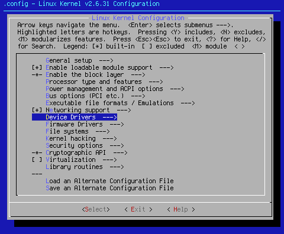
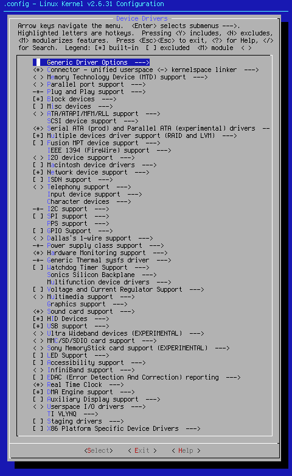

This page covers Device Drivers.
This is where you put the information you got back from lspci -n and http://kmuto.jp/debian/hcl/ to good use. If it's a device driver you seek, this is where you'll find it. You can also use the output from lsusb to find USB-based drivers.
In cases where I specifically know or prefer a certain way of setting up the drivers, I will note these choices and the reasons behind them. This is where I break away from what < Help > says, and let you in on my experience with the Linux kernel.

Arrow key down to the area shown. When you hit <Select> at this point, you will bring up the following sub page:

Reading this page:
This page is meant to be a reference for the symbols you receive from http://kmuto.jp/debian/hcl/. Because of this, all drivers will be listed. They will be represented as magenta text. The symbols will appear next to the magenta as right-justified, bold yellow text in all caps. To aid in visualization, the data is presented in border-less table form.
Unfortunately for Opera users, that particular browser does not render the tables properly. I suggest you use Chrome or Firefox. IE also works well with the setup. Hopefully, Opera will fix that little glitch so you folks can enjoy the page as it was made to look.
LEGEND:
< > the device driver can be either a module <M> or compiled in <*>.
[ ] the device driver or sub-option can only be turned on [*] or off [ ].
--- the device driver is turned or modularized on by another process, symbol, or separate kernel section. In most cases, it is the setting immediately above the --- that hard-wires that driver into the kernel. It will show up as -*- or -M- under make menuconfig. It has been generalized for this page.
Due to the length of this page, please use these jumps to navigate between device driver sections. Of course, those who wish it are free to look over the entire page.
Block devices ATA/ATAPI/MFM/RLL support SCSI device support Serial ATA IEEE 1394 Networking Wireless LAN WAN Input devices Character devices I2C support SPI support Hardware Monitoring support Watchdog Timer support Multimedia support Graphics support Sound card support HID devices USB support Ultra Wideband devices LED support Real Time Clock Staging drivers x86 Platform Specific Device Drivers
Generic Driver Options --->
The Generic Driver Options settings tree is as follows:
| (/sbin/hotplug) path to uevent helper | UEVENT_HELPER_PATH |
| [*] Select only drivers that don't need compile-time external firmware | STANDALONE |
| [*] Prevent firmware from being built | PREVENT_FIRMWARE_BUILD |
| --- Userspace firmware loading support | FW_LOADER |
| [ ] Include in-kernel firmware blobs in kernel binary | FIRMWARE_IN_KERNEL |
| ( ) External firmware blobs to build into the kernel binary | EXTRA_FIRMWARE |
| [ ] Driver Core verbose debug messages | DEBUG_DRIVER |
| [ ] Managed device resources verbose debug messages | DEBUG_DEVRES |
The kernel seed defaults are as follows:
(/sbin/hotplug) path to uevent helper
This setting is hardwired into the kernel. Even though I don't have /sbin/hotplug, the kernel doesn't seem to care. It is what it is.
[*] Select only drivers that don't need compile-time external firmware
[*] Prevent firmware from being built
These setting will cause the kernel to fail compilation if unset. For that reason, they default to on.
<*> Connector - unified userspace <-> kernelspace linker --->
The Connector - unified userspace <-> kernelspace linker settings tree is as follows:
| --- Connector - unified userspace <-> kernelspace linker | CONNECTOR |
| [*] Report process events to userspace | PROC_EVENTS |
The connector module is a kernel module which reports process events such as fork, exec, and exit to userland. This is extremely useful for process monitoring. Both settings in this tree default to on.
< > Memory Technology Device (MTD) support--->
The Memory Technology Device (MTD) support settings tree is as follows:
| --- Memory Technology Device (MTD) support | MTD |
| [ ] Debugging | MTD_DEBUG |
| ( ) Debugging verbosity (0 = quiet, 3 = noisy) (NEW) | MTD_DEBUG_VERBOSE |
| < > MTD concatenating support | MTD_CONCAT |
| [ ] MTD partitioning support | MTD_PARTITIONS |
| < > MTD tests support | MTD_TESTS |
| < > RedBoot partition table parsing | MTD_REDBOOT_PARTS |
| (-1) Location of RedBoot partition table (NEW) | MTD_REDBOOT_DIRECTORY_BLOCK |
| [ ] Include unallocated flash regions | MTD_REDBOOT_PARTS_UNALLOCATED |
| [ ] Force read-only for RedBoot system images | MTD_REDBOOT_PARTS_READONLY |
| [ ] Command line partition table parsing | MTD_CMDLINE_PARTS |
| < > TI AR7 partitioning support | MTD_AR7_PARTS |
| *** User Modules And Translation Layers *** < > Direct char device access to MTD devices | MTD_CHAR |
| --- Common interface to block layer for MTD 'translation layers' | MTD_BLKDEVS |
| < > Caching block device access to MTD devices | MTD_BLOCK |
| < > FTL (Flash Translation Layer) support | FTL |
| < > NFTL (NAND Flash Translation Layer) support | NFTL |
| [ ] Write support for NFTL | NFTL_RW |
| < > INFTL (Inverse NAND Flash Translation Layer) support | INFTL |
| < > Resident Flash Disk (Flash Translation Layer) support | RFD_FTL |
| < > NAND SSFDC (SmartMedia) read only translation layer | SSFDC |
| < > Log panic/oops to an MTD buffer | MTD_OOPS |
RAM/ROM/Flash chip drivers--->
| < > Detect flash chips by Common Flash Interface (CFI) probe | MTD_CFI |
| < > Detect non-CFI AMD/JEDEC-compatible flash chips | MTD_JEDECPROBE |
| [ ] Flash chip driver advanced configuration options | MTD_CFI_ADV_OPTIONS |
Flash cmd/query data swapping (NO)--->
| (X) NO | MTD_CFI_NOSWAP |
| ( ) BIG_ENDIAN_BYTE | MTD_CFI_BE_BYTE_SWAP |
| ( ) LITTLE_ENDIAN_BYTE | MTD_CFI_LE_BYTE_SWAP |
| [ ] Specific CFI Flash geometry selection | MTD_CFI_GEOMETRY |
| [ ] Support 8-bit buswidth (NEW) | MTD_MAP_BANK_WIDTH_1 |
| [ ] Support 16-bit buswidth (NEW) | MTD_MAP_BANK_WIDTH_2 |
| [ ] Support 32-bit buswidth (NEW) | MTD_MAP_BANK_WIDTH_4 |
| [ ] Support 64-bit buswidth | MTD_MAP_BANK_WIDTH_8 |
| [ ] Support 128-bit buswidth | MTD_MAP_BANK_WIDTH_16 |
| [ ] Support 256-bit buswidth | MTD_MAP_BANK_WIDTH_32 |
| [ ] Support 1-chip flash interleave (NEW) | MTD_CFI_I1 |
| [ ] Support 2-chip flash interleave (NEW) | MTD_CFI_I2 |
| [ ] Support 4-chip flash interleave | MTD_CFI_I4 |
| [ ] Support 8-chip flash interleave | MTD_CFI_I8 |
| [ ] Protection Registers aka one-time programmable (OTP) bits | MTD_OTP |
| < > Support for Intel/Sharp flash chips | MTD_CFI_INTELEXT |
| < > Support for AMD/Fujitsu/Spansion flash chips | MTD_CFI_AMDSTD |
| < > Support for ST (Advanced Architecture) flash chips | MTD_CFI_STAA |
| < > Support for RAM chips in bus mapping | MTD_RAM |
| < > Support for ROM chips in bus mapping | MTD_ROM |
| < > Support for absent chips in bus mapping | MTD_ABSENT |
Mapping drivers for chip access--->
| [ ] Support non-linear mappings of flash chips | MTD_COMPLEX_MAPPINGS |
| < > Flash device in physical memory map | MTD_PHYSMAP |
| [ ] Physmap compat support | MTD_PHYSMAP_COMPAT |
| (0x8000000) Physical start address of flash mapping (NEW) | MTD_PHYSMAP_START |
| (0) Physical length of flash mapping (NEW) | MTD_PHYSMAP_LEN |
| (2) Bank width in octets (NEW) | MTD_PHYSMAP_BANKWIDTH |
| < > CFI Flash device mapped on AMD SC520 CDP | MTD_SC520CDP |
| < > CFI Flash device mapped on AMD NetSc520 | MTD_NETSC520 |
| < > JEDEC Flash device mapped on Technologic Systems TS-5500 | MTD_TS5500 |
| < > CFI Flash device mapped on Arcom SBC-GXx boards | MTD_SBC_GXX |
| < > BIOS flash chip on AMD76x southbridge | MTD_AMD76XROM |
| < > BIOS flash chip on Intel Controller Hub 2/3/4/5 | MTD_ICHXROM |
| < > BIOS flash chip on Intel ESB Controller Hub 2 | MTD_ESB2ROM |
| < > BIOS flash chip on Nvidia CK804 | MTD_CK804XROM |
| < > BIOS flash chip on Intel SCB2 boards | MTD_SCB2_FLASH |
| < > CFI flash device on SnapGear/SecureEdge | MTD_NETtel |
| < > BIOS flash chip on Intel L440GX boards | MTD_L440GX |
| < > PCI MTD driver | MTD_PCI |
| < > NOR flash on Intel Vermilion Range Expansion Bus CS0 | MTD_INTEL_VR_NOR |
| < > Map driver for platform device RAM (mtd-ram) | MTD_PLATRAM |
Self-contained MTD device drivers--->
| < > Ramix PMC551 PCI Mezzanine RAM card support | MTD_PMC551 |
| [ ] PMC551 256M DRAM Bugfix | MTD_PMC551_BUGFIX |
| [ ] PMC551 Debugging | MTD_PMC551_DEBUG |
| < > Uncached system RAM | MTD_SLRAM |
| < > Physical system RAM | MTD_PHRAM |
| < > Test driver using RAM | MTD_MTDRAM |
| (4096) MTDRAM device size in KiB (NEW) | MTDRAM_TOTAL_SIZE |
| (128) MTDRAM erase block size in KiB (NEW) | MTDRAM_ERASE_SIZE |
| (0) SRAM Hexadecimal Absolute position or 0 (NEW) | MTDRAM_ABS_POS |
| < > MTD using block device | MTD_BLOCK2MTD |
| *** Disk-On-Chip Device Drivers *** | |
| < > M-Systems Disk-On-Chip 2000 and Millennium (DEPRECATED) | MTD_DOC2000 |
| < > M-Systems Disk-On-Chip Millennium-only alternative driver (DEPRECATED) | MTD_DOC2001 |
| < > M-Systems Disk-On-Chip Millennium Plus | MTD_DOC2001PLUS |
| [ ] Advanced detection options for DiskOnChip | MTD_DOCPROBE_ADVANCED |
| (0x0000) Physical address of DiskOnChip (NEW) | MTD_DOCPROBE_ADDRESS |
| [ ] Probe high addresses | MTD_DOCPROBE_HIGH |
| [ ] Probe for 0x55 0xAA BIOS Extension Signature | MTD_DOCPROBE_55AA |
< > NAND Device Support--->
| --- NAND Device Support | MTD_NAND |
| [ ] Verify NAND page writes | MTD_NAND_VERIFY_WRITE |
| [ ] NAND ECC Smart Media byte order | MTD_NAND_ECC_SMC |
| [ ] Enable chip ids for obsolete ancient NAND devices | MTD_NAND_MUSEUM_IDS |
| < > DiskOnChip 2000, Millennium and Millennium Plus (NAND reimplementation) (EXPERIMENTAL) | MTD_NAND_DISKONCHIP |
| [ ] Advanced detection options for DiskOnChip | MTD_NAND_DISKONCHIP_PROBE_ADVANCED |
| (0) Physical address of DiskOnChip (NEW) | MTD_NAND_DISKONCHIP_PROBE_ADDRESS |
| [ ] Probe high addresses | MTD_NAND_DISKONCHIP_PROBE_HIGH |
| [ ] Allow BBT writes on DiskOnChip Millennium and 2000TSOP | MTD_NAND_DISKONCHIP_BBTWRITE |
| < > NAND support for OLPC CAFÉ chip | MTD_NAND_CAFE |
| x86 < > NAND support for CS5535/CS5536 (AMD Geode companion chip) | MTD_NAND_CS553X |
| < > Support for NAND Flash Simulator | MTD_NAND_NANDSIM |
| < > Support for generic platform NAND driver | MTD_NAND_PLATFORM |
| < > MTD driver for Olympus MAUSB-10 and Fujifilm DPC-R1 | MTD_ALAUDA |
< > OneNAND Device Support--->
| --- OneNAND Device Support | MTD_ONENAND |
| [ ] Verify OneNAND page writes | MTD_ONENAND_VERIFY_WRITE |
| [ ] OneNAND OTP Support | MTD_ONENAND_OTP |
| [ ] OneNAND 2X program support | MTD_ONENAND_2X_PROGRAM |
| < > OneNAND simulator support | MTD_ONENAND_SIM |
LPDDR flash memory drivers--->
| < > Support for LPDDR flash chips | MTD_LPDDR |
| --- Detect flash chips by QINFO probe | MTD_QINFO_PROBE |
UBI - Unsorted block images--->
| < > Enable UBI | MTD_UBI |
| (4096) UBI wear-leveling threshold (NEW) | MTD_UBI_WL_THRESHOLD |
| (1) Percentage of reserved eraseblocks for bad eraseblocks handling (NEW) | MTD_UBI_BEB_RESERVE |
| < > MTD devices emulation driver (gluebi) | MTD_UBI_GLUEBI |
| *** UBI debugging options *** | |
| [ ] UBI debugging | MTD_UBI_DEBUG |
| [ ] UBI debugging messages | MTD_UBI_DEBUG_MSG |
| [ ] Extra self-checks | MTD_UBI_DEBUG_PARANOID |
| [ ] Do not enable the UBI background thread | MTD_UBI_DEBUG_DISABLE_BGT |
| [ ] Emulate flash bit-flips | MTD_UBI_DEBUG_EMULATE_BITFLIPS |
| [ ] Emulate flash write failures | MTD_UBI_DEBUG_EMULATE_WRITE_FAILURES |
| [ ] Emulate flash erase failures | MTD_UBI_DEBUG_EMULATE_ERASE_FAILURES |
Additional UBI debugging messages--->
| [ ] Additional UBI initialization and build messages | MTD_UBI_DEBUG_MSG_BLD |
| [ ] Eraseblock association unit messages | MTD_UBI_DEBUG_MSG_EBA |
| [ ] Wear-leveling unit messages | MTD_UBI_DEBUG_MSG_WL |
| [ ] Input/output unit messages | MTD_UBI_DEBUG_MSG_IO |
Memory Technology Devices are flash, RAM and similar chips, often used for solid state file systems on embedded devices. If you have any of the above listed devices, turn on the required trees. These settings default to off.
< > Parallel port support --->
The Parallel port support settings tree is as follows:
| --- Parallel port support | PARPORT |
| < > PC-style hardware | PARPORT_PC |
| [ ] Use FIFO/DMA if available (EXPERIMENTAL) | PARPORT_PC_FIFO |
| [ ] SuperIO chipset support (EXPERIMENTAL) | PARPORT_PC_SUPERIO |
| < > AX88796 Parallel Port | PARPORT_AX88796 |
| [ ] IEEE 1284 transfer modes PARPORT_1284 | PARPORT_1284 |
Even though the number of external devices that require the parallel printer port is growing smaller, there are still many out there, as well as computers with parallel ports. For most users, turning on <*> PC-style hardware and [*] Use FIFO/DMA if available (EXPERIMENTAL) will do the trick, if this device is desired or needed. These settings default to off.
The Plug and Play support settings tree is as follows:
| --- Plug and Play support | PNP |
| [ ] PNP debugging messages | PNP_DEBUG_MESSAGES |
| *** Protocols *** |
Plug and play is hardwired into the kernel. The only real option you have is whether or not you get debugging messages. That setting is turned off by default.
[*] Block devices --->
The Block devices settings tree is as follows:
| --- Block devices | BLK_DEV |
| < > Normal floppy disk support | BLK_DEV_FD |
| < > Parallel port IDE device support | PARIDE |
| *** Parallel IDE high-level drivers *** | |
| < > Parallel port IDE disks | PARIDE_PD |
| < > Parallel port ATAPI CD-ROMs | PARIDE_PCD |
| < > Parallel port ATAPI disks | PARIDE_PF |
| < > Parallel port ATAPI tapes | PARIDE_PT |
| < > Parallel port generic ATAPI devices | PARIDE_PG |
| *** Parallel IDE protocol modules *** | |
| < > ATEN EH-100 protocol | PARIDE_ATEN |
| < > MicroSolutions backpack (Series 5) protocol | PARIDE_BPCK |
| < > MicroSolutions backpack (Series 6) protocol | PARIDE_BPCK6 |
| < > DataStor Commuter protocol | PARIDE_COMM |
| < > DataStor EP-2000 protocol | PARIDE_DSTR |
| < > FIT TD-2000 protocol | PARIDE_FIT2 |
| < > FIT TD-3000 protocol | PARIDE_FIT3 |
| < > Shuttle EPAT/EPEZ protocol | PARIDE_EPAT |
| [ ] Support c7/c8 chips (EXPERIMENTAL) | PARIDE_EPATC8 |
| < > Shuttle EPIA protocol | PARIDE_EPIA |
| < > Freecom IQ ASIC-2 protocol | PARIDE_FRIQ |
| < > FreeCom power protocol | PARIDE_FRPW |
| < > KingByte KBIC-951A/971A protocols | PARIDE_KBIC |
| < > KT PHd protocol | PARIDE_KTTI |
| < > OnSpec 90c20 protocol | PARIDE_ON20 |
| < > OnSpec 90c26 protocol | PARIDE_ON26 |
| < > Compaq SMART2 support | BLK_CPQ_DA |
| < > Compaq Smart Array 5xxx support | BLK_CPQ_CISS_DA |
| [ ] SCSI tape drive support for Smart Array 5xxx | CISS_SCSI_TAPE |
| < > Mylex DAC960/DAC1100 PCI RAID Controller support | BLK_DEV_DAC960 |
| < > Micro Memory MM5415 Battery Backed RAM support (EXPERIMENTAL) | BLK_DEV_UMEM |
| <*> Loopback device support | BLK_DEV_LOOP |
| < > Cryptoloop Support | BLK_DEV_CRYPTOLOOP |
| < > Network block device support | BLK_DEV_NBD |
| < > Promise SATA SX8 support | BLK_DEV_SX8 |
| < > Low Performance USB Block driver | BLK_DEV_UB |
| < > RAM block device support | BLK_DEV_RAM |
| (16) Default number of RAM disks (NEW) | BLK_DEV_RAM_COUNT |
| (4096) Default RAM disk size (kbytes) (NEW) | BLK_DEV_RAM_SIZE |
| [ ] Support XIP filesystems on RAM block device | BLK_DEV_XIP |
| <*> Packet writing on CD/DVD media | CDROM_PKTCDVD |
| (8) Free buffers for data gathering | CDROM_PKTCDVD_BUFFERS |
| [ ] Enable write caching (EXPERIMENTAL) | CDROM_PKTCDVD_WCACHE |
| < > ATA over Ethernet support | ATA_OVER_ETH |
| [ ] Very old hard disk (MFM/RLL/IDE) driver | BLK_DEV_HD |
Block devices are special files that connect to physical devices. Addressable devices such as CDROM drives, hard drives, and other special devices, such as USB Stick drives are all block devices. Block devices move data through the system in blocks, hence the name. You turn the main setting off at your own peril. [*] Block devices defaults to on. If you have any of the above mentioned devices, turn on the required settings.
The kernel seed defaults are as follows:
<*> Loopback device support
Loopback device support allows for the creation of virtual devices that can be used as standard block devices. This allows for mounting of iso images, and other things. While this is very important while creating a bootable Linux CD/DVD, in general, it is not needed for proper operation of your machine. While this setting currently defaults to on, experimentation has shown this setting is not needed for proper machine operation. It will default to off in the future.
<*> Packet writing on CD/DVD media
This is a good setting to have turned on if you plan on burning optical media. Since most modern computers come with DVD burners of some sort, this setting defaults to on.
[ ] Misc devices --->
The Misc devices settings tree is as follows:
| --- Misc devices | MISC_DEVICES |
| < > Device driver for IBM RSA service processor | IBM_ASM |
| < > Sensable PHANToM (PCI) | PHANTOM |
| < > SGI IOC4 Base IO support | SGI_IOC4 |
| < > TI Flash Media interface support (EXPERIMENTAL) | TIFM_CORE |
| < > TI Flash Media PCI74xx/PCI76xx host adapter support (EXPERIMENTAL) | TIFM_7XX1 |
| < > Integrated Circuits ICS932S401 | ICS932S40 |
| < > Enclosure Services | ENCLOSURE_SERVICES |
| < > Channel interface driver for HP iLO/iLO2 processor | HP_ILO |
| < > Intersil ISL29003 ambient light sensor | ISL29003 |
< > Silicon Labs C2 port support (EXPERIMENTAL) --->
| --- Silicon Labs C2 port support (EXPERIMENTAL) | C2PORT |
| < > C2 port support for Eurotech's Duramar 2150 (EXPERIMENTAL) | C2PORT_DURAMAR_2150 |
EEPROM support --->
| < > I2C EEPROMs from most vendors | EEPROM_AT24 |
| < > Old I2C EEPROM reader | EEPROM_LEGACY |
| < > Maxim MAX6874/5 power supply supervisor | EEPROM_MAX6875 |
| < > EEPROM 93CX6 support | EEPROM_93CX6 |
| < > ENE CB710/720 Flash memory card reader support | CB710_CORE |
| [ ] Enable driver debugging | CB710_DEBUG |
If you have any of the above devices, these are the drivers that make them work. I'm not sure why they're called miscellaneous, but I do know that I have yet to run across any of the above in any of the .configs I've created. These settings default to off.
< > ATA/ATAPI/MFM/RLL support --->
The ATA/ATAPI/MFM/RLL support settings tree is as follows:
| --- ATA/ATAPI/MFM/RLL support | IDE |
| *** Please see Documentation/ide/ide.txt for help/info on IDE drives *** | |
| [ ] Support for SATA (deprecated; conflicts with libata SATA driver) (NEW) | BLK_DEV_IDE_SATA |
| < > generic ATA/ATAPI disk support (NEW) | IDE_GD |
| [ ] ATA disk support (NEW) | IDE_GD_ATA |
| [ ] ATAPI floppy support (NEW) | IDE_GD_ATAPI |
| < > Cardbus IDE support (Delkin/ASKA/Workbit) (NEW) | BLK_DEV_DELKIN |
| < > Include IDE/ATAPI CDROM support (NEW) | BLK_DEV_IDECD |
| < > Include IDE/ATAPI TAPE support (NEW) | BLK_DEV_IDETAPE |
| [ ] IDE ACPI support (NEW) | BLK_DEV_IDEACPI |
| [ ] IDE Taskfile Access (NEW) | IDE_TASK_IOCTL |
| [*] legacy /proc/ide/ support (NEW) | IDE_PROC_FS |
| *** IDE chipset support/bugfixes *** | |
| < > generic/default IDE chipset support (NEW) | IDE_GENERIC |
| < > Platform driver for IDE interfaces (NEW) | BLK_DEV_PLATFORM |
| < > CMD640 chipset bugfix/support (NEW) | BLK_DEV_CMD640 |
| < > PNP EIDE support (NEW) | BLK_DEV_IDEPNP |
| *** PCI IDE chipsets support *** | |
| < > Generic PCI IDE Chipset Support (NEW) | BLK_DEV_GENERIC |
| < > OPTi 82C621 chipset enhanced support (EXPERIMENTAL) (NEW) | BLK_DEV_OPTI621 |
| < > RZ1000 chipset bugfix/support (NEW) | BLK_DEV_RZ1000 |
| < > AEC62XX chipset support (NEW) | BLK_DEV_AEC62XX |
| < > ALI M15x3 chipset support (NEW) | BLK_DEV_ALI15X3 |
| < > AMD and nVidia IDE support (NEW) | BLK_DEV_AMD74XX |
| < > ATI IXP chipset IDE support (NEW) | BLK_DEV_ATIIXP |
| < > CMD64{3|6|8|9} chipset support (NEW) | BLK_DEV_CMD64X |
| < > Compaq Triflex IDE support (NEW) | BLK_DEV_TRIFLEX |
| < > Cyrix CS5510/20 MediaGX chipset support (VERY EXPERIMENTAL) (NEW) | BLK_DEV_CS5520 |
| < > Cyrix/National Semiconductor CS5530 MediaGX chipset support (NEW) | BLK_DEV_CS5530 |
| x86_64 < > AMD CS5535 chipset support (NEW) | BLK_DEV_CS5535 |
| x86_64 < > CS5536 chipset support (NEW) | BLK_DEV_CS5536 |
| < > HPT36X/37X chipset support (NEW) | BLK_DEV_HPT366 |
| < > JMicron JMB36x support (NEW) | BLK_DEV_JMICRON |
| < > National SCx200 chipset support (NEW) | BLK_DEV_SC1200 |
| < > Intel PIIX/ICH chipsets support (NEW) | BLK_DEV_PIIX |
| < > IT8172 IDE support (NEW) | BLK_DEV_IT8172 |
| < > IT8213 IDE support (NEW) | BLK_DEV_IT8213 |
| < > IT821X IDE support (NEW) | BLK_DEV_IT821X |
| < > NS87415 chipset support (NEW) | BLK_DEV_NS87415 |
| < > PROMISE PDC202{46|62|65|67} support (NEW) | BLK_DEV_PDC202XX_OLD |
| < > PROMISE PDC202{68|69|70|71|75|76|77} support (NEW) | BLK_DEV_PDC202XX_NEW |
| < > ServerWorks OSB4/CSB5/CSB6 chipsets support (NEW) | BLK_DEV_SVWKS |
| < > Silicon Image chipset support (NEW) | BLK_DEV_SIIMAGE |
| < > SiS5513 chipset support (NEW) | BLK_DEV_SIS5513 |
| < > SLC90E66 chipset support (NEW) | BLK_DEV_SLC90E66 |
| < > Tekram TRM290 chipset support (NEW) | BLK_DEV_TRM290 |
| < > VIA82CXXX chipset support (NEW) | BLK_DEV_VIA82CXXX |
| < > Toshiba TC86C001 support (NEW) | BLK_DEV_TC86C00 |
Use these settings if and only if you are using only PATA drives, and the drives listed in your /etc/fstab file are hda, hdb, hdc, or hdd. Since that is few people anymore, these settings default to off. It is better to change over to using the libata (SATA) drivers below.
 Do not mix these settings and the libata settings, especially if you have Intel ICH5 or greater hard drive controllers. To do so will cause hangs, crashes, and lockups. If you have ICH5 or greater, use the libata drivers below to insure continuous error-free operation.
Do not mix these settings and the libata settings, especially if you have Intel ICH5 or greater hard drive controllers. To do so will cause hangs, crashes, and lockups. If you have ICH5 or greater, use the libata drivers below to insure continuous error-free operation.
SCSI device support --->
The SCSI device support settings tree is as follows:
| < > RAID Transport Class | RAID_ATTRS |
| --- SCSI device support | SCSI |
| < > SCSI target support | SCSI_TGT |
| [*] legacy /proc/scsi/ support | SCSI_PROC_FS |
| *** SCSI support type (disk, tape, CD-ROM) *** | |
| <*> SCSI disk support | BLK_DEV_SD |
| < > SCSI tape support | CHR_DEV_ST |
| < > SCSI OnStream SC-x0 tape support | CHR_DEV_OSST |
| <*> SCSI CDROM support | BLK_DEV_SR |
| [ ] Enable vendor-specific extensions (for SCSI CDROM) | BLK_DEV_SR_VENDOR |
| <*> SCSI generic support | CHR_DEV_SG |
| < > SCSI media changer support | CHR_DEV_SCH |
| < > SCSI Enclosure Support (NEW) | SCSI_ENCLOSURE |
| [*] Probe all LUNs on each SCSI device | SCSI_MULTI_LUN |
| [ ] Verbose SCSI error reporting (kernel size +=12K) | SCSI_CONSTANTS |
| [ ] SCSI logging facility | SCSI_LOGGING |
| [*] Asynchronous SCSI scanning | SCSI_SCAN_ASYNC |
SCSI Transports --->
| < > Parallel SCSI (SPI) Transport Attributes | SCSI_SPI_ATTRS |
| < > FiberChannel Transport Attributes | SCSI_FC_ATTRS |
| < > iSCSI Transport Attributes | SCSI_FC_TGT_ATTRS |
| < > SAS Domain Transport Attributes | SCSI_SAS_LIBSAS |
| [ ] ATA support for libsas (requires libata) | SCSI_SAS_ATA |
| [ ] Support for SMP interpretation for SAS hosts | SCSI_SAS_HOST_SMP |
| [ ] Compile the SAS Domain Transport Attributes in debug mode (NEW) | SCSI_SAS_LIBSAS_DEBUG |
| < > SRP Transport Attributes | SCSI_SRP_ATTRS |
| x86 [ ] SCSI target support for SRP Transport Attributes | SCSI_SRP_ATTRS |
[ ] SCSI low-level drivers --->
| --- SCSI low-level drivers | SCSI_LOWLEVEL |
| < > iSCSI Initiator over TCP/IP | ISCSI_TCP |
| < > Broadcom NetXtreme II iSCSI support | SCSI_BNX2_ISCSI |
| < > 3ware 5/6/7/8xxx ATA-RAID support | BLK_DEV_3W_XXXX_RAID |
| < > 3ware 9xxx SATA-RAID support | BLK_DEV_3W_9XXX_RAID |
| < > ACARD SCSI support | SCSI_ACARD |
| < > Adaptec AACRAID support | SCSI_AACRAID |
| < > Adaptec AIC7xxx Fast -> U160 support (New Driver) | SCSI_AIC7XXX |
| ( ) Maximum number of TCQ commands per device (NEW) | AIC7XXX_CMDS_PER_DEVICE |
| ( ) Initial bus reset delay in milli-seconds (NEW) | AIC7XXX_RESET_DELAY_MS |
| [ ] Compile in Debugging Code (NEW) | AIC7XXX_DEBUG_ENABLE |
| ( ) Debug code enable mask (2047 for all debugging) (NEW) | AIC7XXX_DEBUG_MASK |
| [ ] Decode registers during diagnostics (NEW) | AIC7XXX_REG_PRETTY_PRINT |
| < > Adaptec AIC7xxx support (old driver) | SCSI_AIC7XXX_OLD |
| < > Adaptec AIC79xx U320 support | SCSI_AIC79XX |
| ( ) Maximum number of TCQ commands per device (NEW) | AIC79XX_CMDS_PER_DEVICE |
| ( ) Initial bus reset delay in milli-seconds (NEW) | AIC79XX_RESET_DELAY_MS |
| [ ] Compile in Debugging Code (NEW) | AIC79XX_DEBUG_ENABLE |
| ( ) Debug code enable mask (16383 for all debugging) (NEW) | AIC79XX_DEBUG_MASK |
| [ ] Decode registers during diagnostics (NEW) | AIC79XX_REG_PRETTY_PRINT |
| < > Adaptec AIC94xx SAS/SATA support | SCSI_AIC94XX |
| [ ] Compile in debug mode (NEW) | AIC94XX_DEBUG |
| < > Marvell 88SE64XX/88SE94XX SAS/SATA support | SCSI_MVSAS |
| [ ] Compile in debug mode (NEW) | SCSI_MVSAS_DEBUG |
| < > Adaptec I2O RAID support | SCSI_DPT_I2O |
| < > AdvanSys SCSI support | SCSI_ADVANSYS |
| < > ARECA (ARC11xx/12xx/13xx/16xx) SATA/SAS RAID Host Adapter | SCSI_ARCMSR |
| [ ] Enable PCI Error Recovery Capability in Areca Driver(ARCMSR) | SCSI_ARCMSR_AER |
| [ ] LSI Logic New Generation RAID Device Drivers | MEGARAID_NEWGEN |
| < > LSI Logic Management Module (New Driver) | MEGARAID_MM |
| < > LSI Logic MegaRAID Driver (New Driver) | MEGARAID_MAILBOX |
| < > LSI Logic Legacy MegaRAID Driver | MEGARAID_LEGACY |
| < > LSI Logic MegaRAID SAS RAID Module | MEGARAID_SAS |
| < > LSI MPT Fusion SAS 2.0 Device Driver | SCSI_MPT2SAS |
| ( ) LSI MPT Fusion Max number of SG Entries (16 - 128) (NEW) | SCSI_MPT2SAS_MAX_SGE |
| [ ] LSI MPT Fusion logging facility | SCSI_MPT2SAS_LOGGING |
| < > HighPoint RocketRAID 3xxx/4xxx Controller support | SCSI_HPTIOP |
| < > BusLogic SCSI support | SCSI_BUSLOGIC |
| x86 [ ] FlashPoint support | SCSI_FLASHPOINT |
| --- LibFC module | LIBFC |
| --- LibFCoE module | LIBFCOE |
| < > FCoE module | FCOE |
| < > Cisco FNIC Driver | FCOE_FNIC |
| < > DMX3191D SCSI support | SCSI_DMX3191D |
| < > EATA ISA/EISA/PCI (DPT and generic EATA/DMA-compliant boards) support | SCSI_EATA |
| [ ] enable tagged command queueing | SCSI_EATA_TAGGED_QUEUE |
| [ ] enable elevator sorting | SCSI_EATA_LINKED_COMMANDS |
| ( ) maximum number of queued commands (NEW) | SCSI_EATA_MAX_TAGS |
| < > Future Domain 16xx SCSI/AHA-2920A support | SCSI_FUTURE_DOMAIN |
| < > Intel/ICP (former GDT SCSI Disk Array) RAID Controller support | SCSI_GDTH |
| < > IBM ServeRAID support | SCSI_IPS |
| < > Initio 9100U(W) support | SCSI_INITIO |
| < > Initio INI-A100U2W support | SCSI_INIA100 |
| < > IOMEGA parallel port (ppa - older drives) | SCSI_PPA |
| < > IOMEGA parallel port (imm - newer drives) | SCSI_IMM |
| [ ] ppa/imm option - Use slow (but safe) EPP-16 | SCSI_IZIP_EPP16 |
| [ ] ppa/imm option - Assume slow parport control register | SCSI_IZIP_SLOW_CTR |
| < > Promise SuperTrak EX Series support | SCSI_STEX |
| < > SYM53C8XX Version 2 SCSI support | SCSI_SYM53C8XX_2 |
| ( ) DMA addressing mode (NEW) | SCSI_SYM53C8XX_DMA_ADDRESSING_MODE |
| ( ) Default tagged command queue depth (NEW) | SCSI_SYM53C8XX_DEFAULT_TAGS |
| ( ) Maximum number of queued commands (NEW) | SCSI_SYM53C8XX_MAX_TAGS |
| [ ] Use memory mapped IO (NEW) | SCSI_SYM53C8XX_MMIO |
| < > IBM Power Linux RAID adapter support | SCSI_IPR |
| [ ] enable driver internal trace (NEW) | SCSI_IPR_TRACE |
| [ ] enable adapter dump support (NEW) | SCSI_IPR_DUMP |
| < > Qlogic QLA 1240/1x80/1x160 SCSI support | SCSI_QLOGIC_1280 |
| < > QLogic QLA2XXX Fibre Channel Support | SCSI_QLA_FC |
| < > QLogic ISP4XXX host adapter family support | SCSI_QLA_ISCSI |
| < > Emulex LightPulse Fibre Channel Support | SCSI_LPFC |
| [ ] Emulex LightPulse Fibre Channel debugfs Support | SCSI_LPFC_DEBUG_FS |
| < > Tekram DC395(U/UW/F) and DC315(U) SCSI support (EXPERIMENTAL) | SCSI_DC395x |
| < > Tekram DC390(T) and Am53/79C974 SCSI support | SCSI_DC390T |
| x86 < > Workbit NinjaSCSI-32Bi/UDE support | SCSI_NSP32 |
| < > SCSI debugging host simulator | SCSI_DEBUG |
| < > SCSI RDMA Protocol helper library | SCSI_SRP |
< > SCSI Device Handlers --->
| --- SCSI Device Handlers | SCSI_DH |
| < > LSI RDAC Device Handler | SCSI_DH_RDAC |
| < > HP/COMPAQ MSA Device Handler | SCSI_DH_HP_SW |
| < > EMC CLARiiON Device Handler | SCSI_DH_EMC |
| < > SPC-3 ALUA Device Handler (EXPERIMENTAL) | SCSI_DH_ALUA |
| < > OSD-Initiator library | SCSI_OSD_INITIATOR |
| < > OSD Upper Level driver | SCSI_OSD_ULD |
| ( ) (0-2) When sense is returned, DEBUG print all sense descriptors (NEW) | SCSI_OSD_DPRINT_SENSE |
| [ ] Compile All OSD modules with lots of DEBUG prints | SCSI_OSD_DEBUG |
SCSI (Small Computer System Interface) is a set of standards for connecting a computer and its disks. SATA drivers are actually SCSI drivers as far as Linux is concerned. Since this is the case, there has to be a minimal SCSI support so that SATA drives, and anything else using libata drivers, including PATA interfaces, works as expected.
The kernel seed defaults are as follows:
[*] legacy /proc/scsi/ support
While the 2.6 kernel has moved SCSI functionality to the sysfs, there are numerous legacy packages that require this setting to be turned on. Since I prefer not to run into crashes, this setting defaults to on.
<*> SCSI disk support
Since the libata drivers are effectively SCSI drivers, it goes without saying you want to have this setting on so you can address them as such. This setting is essential, and it defaults to on.
<*> SCSI CDROM support
What is a computer without optical disk support? Usually fairly dull. Since most people want to be able to use their optical drives, this setting defaults to on. Optical drives take on the block device name, sr(x), when using this setting.
<*> SCSI generic support
This is an essential setting if you want SCSI support of any kind. This setting defaults to on.
[*] Probe all LUNs on each SCSI device
This is one of the settings that makes it possible for optical drives and USB stick drives to be accessed automatically via hal/dbus. This setting defaults to on, and is best kept that way.
[*] Asynchronous SCSI scanning
Asynchronous scanning allows SCSI devices to be scanned out of order. That allows faster drives and devices to not be held up waiting for slower devices to scan. Because of the different types of devices that get labled as SCSI, and their varying speeds of scanning, this defaults to on.
<*> Serial ATA (prod) and Parallel ATA (experimental) drivers --->The Serial ATA (prod) and Parallel ATA (experimental) drivers settings tree is as follows:
| --- Serial ATA (prod) and Parallel ATA (experimental) drivers | ATA |
| [*] ATA ACPI Support | ATA_ACPI |
| [ ] SATA Port Multiplier support | SATA_PMP |
| < > AHCI SATA support | SATA_AHCI |
| < > Silicon Image 3124/3132 SATA support | SATA_SIL24 |
| [*] ATA SFF support | ATA_SFF |
| < > ServerWorks Frodo / Apple K2 SATA support | SATA_SVW |
| < > Intel ESB, ICH, PIIX3, PIIX4 PATA/SATA support | ATA_PIIX |
| < > Marvell SATA support | SATA_MV |
| < > NVIDIA SATA support | SATA_NV |
| < > Pacific Digital ADMA support | PDC_ADMA |
| < > Pacific Digital SATA QStor support | SATA_QSTOR |
| < > Promise SATA TX2/TX4 support | SATA_PROMISE |
| < > Promise SATA SX4 support (Experimental) | SATA_SX4 |
| < > Silicon Image SATA support | SATA_SIL |
| < > SiS 964/965/966/180 SATA support | SATA_SIS |
| < > ULi Electronics SATA support | SATA_ULI |
| < > VIA SATA support | SATA_VIA |
| < > VITESSE VSC-7174 / INTEL 31244 SATA support | SATA_VITESSE |
| < > Initio 162x SATA support | SATA_INIC162X |
| < > ACPI firmware driver for PATA | PATA_ACPI |
| < > ALi PATA support | PATA_ALI |
| < > AMD/NVidia PATA support | PATA_AMD |
| < > ARTOP 6210/6260 PATA support | PATA_ARTOP |
| < > ATI PATA support | PATA_ATIIXP |
| < > CMD640 PCI PATA support (Experimental) | PATA_CMD640_PCI |
| < > CMD64x PATA support | PATA_CMD64X |
| < > CS5510/5520 PATA support | PATA_CS5520 |
| < > CS5530 PATA support | PATA_CS5530 |
| < > CS5535 PATA support (Experimental) | PATA_CS5535 |
| < > CS5536 PATA support | PATA_CS5536 |
| < > Cypress CY82C693 PATA support (Very Experimental) | PATA_CYPRESS |
| < > EFAR SLC90E66 support | PATA_EFAR |
| < > Generic ATA support | ATA_GENERIC |
| < > HPT 366/368 PATA support | PATA_HPT366 |
| < > HPT 370/370A/371/372/374/302 PATA support (Experimental) | PATA_HPT37X |
| < > HPT 372N/302N PATA support (Experimental) | PATA_HPT3X2N |
| < > HPT 343/363 PATA support | PATA_HPT3X3 |
| [ ] HPT 343/363 DMA support (Experimental) | PATA_HPT3X3_DMA |
| < > IT8211/2 PATA support | PATA_IT821X |
| < > IT8213 PATA support (Experimental) | PATA_IT8213 |
| < > JMicron PATA support | PATA_JMICRON |
| < > Compaq Triflex PATA support | PATA_TRIFLEX |
| < > Marvell PATA support via legacy mode | PATA_MARVELL |
| < > Intel PATA MPIIX support | PATA_MPIIX |
| < > Intel PATA old PIIX support | PATA_OLDPIIX |
| < > NETCELL Revolution RAID support | PATA_NETCELL |
| < > Ninja32/Delkin Cardbus ATA support (Experimental) | PATA_NINJA32 |
| < > Nat Semi NS87410 PATA support | PATA_NS87410 |
| < > Nat Semi NS87415 PATA support | PATA_NS87415 |
| < > OPTI621/6215 PATA support (Very Experimental) | PATA_OPTI |
| < > OPTI FireStar PATA support (Very Experimental) | PATA_OPTIDMA |
| < > Older Promise PATA controller support | PATA_PDC_OLD |
| < > RADISYS 82600 PATA support (Experimental) | PATA_RADISYS |
| < > PC Tech RZ1000 PATA support | PATA_RZ1000 |
| < > SC1200 PATA support | PATA_SC1200 |
| < > SERVERWORKS OSB4/CSB5/CSB6/HT1000 PATA support | PATA_SERVERWORKS |
| < > Promise PATA 2027x support | PATA_PDC2027X |
| < > CMD / Silicon Image 680 PATA support | PATA_SIL680 |
| < > SiS PATA support | PATA_SIS |
| < > VIA PATA support | PATA_VIA |
| < > Winbond SL82C105 PATA support | PATA_WINBOND |
| < > Intel SCH PATA support | PATA_SCH |
The kernel seed defaults are as follows:
[*] ATA ACPI Support
This setting adds support for ATA-related ACPI objects. Since I have set the kernel seed for full ACPI operation, it follows this setting would also be turned on.
[*] ATA SFF support
This setting allows for all the disk controllers to be listed. If turned off, the options end at Silicon Image 3124/3132 SATA support. Since turning off this setting severely limits your options, it defaults to on.
Notes on the SATA, also known as libata drivers:
 As was noted above, these settings should never be mixed with the ATA/ATAPI/MFM/RLL drivers. Since there is an analogue for each ATA/ATAPI/MFM/RLL driver in the libata driver tree, there is no need to use both. Since the libata drivers are SCSI, the block device name listed in /etc/fstab would be sd(x), the standard SCSI disk nomenclature. For a general how-to on the topic of using the libata drivers, steer your browser to NeddySeagoons' Rough Guide to Intel ICH7 Chip Set. That should pretty much answer all the questions on using the libata drivers. These settings should be your defaults.
As was noted above, these settings should never be mixed with the ATA/ATAPI/MFM/RLL drivers. Since there is an analogue for each ATA/ATAPI/MFM/RLL driver in the libata driver tree, there is no need to use both. Since the libata drivers are SCSI, the block device name listed in /etc/fstab would be sd(x), the standard SCSI disk nomenclature. For a general how-to on the topic of using the libata drivers, steer your browser to NeddySeagoons' Rough Guide to Intel ICH7 Chip Set. That should pretty much answer all the questions on using the libata drivers. These settings should be your defaults.
[*] Multiple devices driver support (RAID and LVM) --->
The Multiple devices driver support (RAID and LVM) settings tree is as follows:
| --- Multiple devices driver support (RAID and LVM) | MD |
| < > RAID support | BLK_DEV_MD |
| [ ] Autodetect RAID arrays during kernel boot (NEW) | MD_AUTODETECT |
| < > Linear (append) mode | MD_LINEAR |
| < > RAID-0 (striping) mode | MD_RAID0 |
| < > RAID-1 (mirroring) mode | MD_RAID1 |
| < > RAID-10 (mirrored striping) mode (EXPERIMENTAL) | MD_RAID10 |
| < > RAID-4/RAID-5/RAID-6 mode | MD_RAID456 |
| < > Multipath I/O support | MD_MULTIPATH |
| < > Faulty test module for MD | MD_FAULTY |
| <*> Device mapper support | BLK_DEV_DM |
| [ ] Device mapper debugging support | DM_DEBUG |
| < > Crypt target support | DM_CRYPT |
| < > Snapshot target | DM_SNAPSHOT |
| < > Mirror target | DM_MIRROR |
| < > Mirror userspace logging (EXPERIMENTAL) | DM_LOG_USERSPACE |
| < > Zero target | DM_ZERO |
| < > Multipath target | DM_MULTIPATH |
| < > I/O Path Selector based on the number of in-flight I/Os | DM_MULTIPATH_QL |
| < > I/O Path Selector based on the service time | DM_MULTIPATH_ST |
| < > I/O delaying target (EXPERIMENTAL) | DM_DELAY |
| [ ] DM uevents (EXPERIMENTAL) | DM_UEVENT |
The acronym RAID stands for Redundant Array of Inexpensive Disks. If you're not sure what that means, you really don't need RAID support.
The kernel seed default is as follows:
<*> Device mapper support
This lone setting is turned on as a silencer. Without this setting, an incomplete shutdown resulting in an automatic fsck at reboot will throw up a non-fatal error message. Turn this setting on, that message goes away. For that reason, this setting defaults to on.
[ ] Fusion MPT device support --->
The Fusion MPT device support settings tree is as follows:
| --- Fusion MPT device support | FUSION |
| < > Fusion MPT ScsiHost drivers for SPI | FUSION_SPI |
| < > Fusion MPT ScsiHost drivers for FC | FUSION_FC |
| < > Fusion MPT ScsiHost drivers for SAS | FUSION_SAS |
| ( ) Maximum number of scatter gather entries (16 - 128) (NEW) | FUSION_MAX_SGE |
| < > Fusion MPT misc device (ioctl) driver | FUSION_CTL |
| [ ] Fusion MPT logging facility | FUSION_LOGGING |
LSI Logic Fusion(TM) Message Passing Technology (MPT) device support provides high performance SCSI host initiator, and LAN interface services to a host system. If you have a device that supports this, these settings must be turned on. You will also have to make other driver choices to get full support. These settings default to off.
IEEE 1394 (FireWire) support --->
The IEEE 1394 (FireWire) support settings tree is as follows:
| *** You can enable one or both FireWire driver stacks. *** | |
| *** See the help texts for more information. *** | |
| < > FireWire driver stack | FIREWIRE |
| < > OHCI-1394 controllers | FIREWIRE_OHCI |
| < > Storage devices (SBP-2 protocol) | FIREWIRE_SBP2 |
| < > IP networking over 1394 (EXPERIMENTAL) | FIREWIRE_NET |
| < > Legacy alternative FireWire driver stack | IEEE1394 |
| < > OHCI-1394 controllers | IEEE1394_OHCI1394 |
| < > PCILynx controller | IEEE1394_PCILYNX |
| < > Storage devices (SBP-2 protocol) | IEEE1394_SBP2 |
| [ ] Enable replacement for physical DMA in SBP2 | IEEE1394_SBP2_PHYS_DMA |
| < > IP networking over 1394 (experimental) | IEEE1394_ETH1394 |
| < > raw1394 userspace interface | IEEE1394_RAWIO |
| < > video1394 userspace interface | IEEE1394_VIDEO1394 |
| < > dv1394 userspace interface (deprecated) | IEEE1394_DV1394 |
| [ ] Excessive debugging output | IEEE1394_VERBOSEDEBUG |
The IEEE 1394 interface is a high speed serial bus. If your machine has one of these devices, you have the choice of two different kernel configurations, or both on. These settings default to off.
 This device causes confusion for some users. The reason for this is the ohci_hcd driver. The ohci_hcd is a USB port driver. It is not, in any way, an IEEE 1394 interface. Unfortunately, sometimes http://kmuto.jp/debian/hcl/ adds to the confusion. To help clear the confusion, if you see, "1394," you're looking at a firewire device, and you want to use these settings. If you see nothing, or "ohci," that's a USB port.
This device causes confusion for some users. The reason for this is the ohci_hcd driver. The ohci_hcd is a USB port driver. It is not, in any way, an IEEE 1394 interface. Unfortunately, sometimes http://kmuto.jp/debian/hcl/ adds to the confusion. To help clear the confusion, if you see, "1394," you're looking at a firewire device, and you want to use these settings. If you see nothing, or "ohci," that's a USB port.
< > I2O device support --->
The I2O device support settings tree is as follows:
| --- I2O device support | I2O |
| [ ] Enable LCT notification (NEW) | I2O_LCT_NOTIFY_ON_CHANGES |
| [ ] Enable Adaptec extensions (NEW) | I2O_EXT_ADAPTEC |
| x86_64 [ ] Enable 64-bit DMA (NEW) | I2O_EXT_ADAPTEC_DMA64 |
| < > I2O Configuration support | I2O_CONFIG |
| [ ] Enable ioctls (OBSOLETE) (NEW) | I2O_OLD_IOCTL |
| < > I2O Bus Adapter OSM | I2O_BUS |
| < > I2O Block OSM | I2O_BLOCK |
| < > I2O SCSI OSM | I2O_SCSI |
| < > I2O /proc support | I2O_PROC |
Intelligent Input/Output (I2O) is a defunct computer input/output (I/O) specification. It was used in Proliant servers from 1996 to 2000. Turn these settings on if you have one of these devices. Since they are so one shot, these settings default to off.
[ ] Macintosh device drivers --->
The Macintosh device drivers settings tree is as follows:
| --- Macintosh device drivers | MACINTOSH_DRIVERS |
| [ ] Support for mouse button 2+3 emulation | MAC_EMUMOUSEBTN |
If you have need of this support, turn this setting on. This setting defaults to off.
[ ] Network device support --->
The Network device support settings tree is as follows:
| --- Network device support | NETDEVICES |
| < > Dummy net driver support | DUMMY |
| < > Bonding driver support | BONDING |
| < > MAC-VLAN support (EXPERIMENTAL) | MACVLAN |
| < > EQL (serial line load balancing) support | EQUALIZER |
| < > Universal TUN/TAP device driver support | TUN |
| < > Virtual ethernet pair device | VETH |
| < > General Instruments Surfboard 1000 | NET_SB1000 |
| < > ARCnet support ---> |
| --- ARCnet support | ARCNET |
| < > Enable standard ARCNet packet format (RFC 1201) | ARCNET_1201 |
| < > Enable old ARCNet packet format (RFC 1051) | ARCNET_1051 |
| < > Enable raw mode packet interface | ARCNET_RAW |
| < > Enable CAP mode packet interface | ARCNET_CAP |
| < > ARCnet COM90xx (normal) chipset driver | ARCNET_COM90xx |
| < > ARCnet COM90xx (IO mapped) chipset driver | ARCNET_COM90xxIO |
| < > ARCnet COM90xx (RIM I) chipset driver | ARCNET_RIM_I |
| < > ARCnet COM20020 chipset driver | ARCNET_COM2002 |
| < > Support for COM20020 on PCI | ARCNET_COM20020_PCI |
| < > PHY Device support and infrastructure (NEW) ---> |
| --- PHY Device support and infrastructure | PHYLIB |
| *** MII PHY device drivers *** | |
| < > Drivers for Marvell PHYs | MARVELL_PHY |
| < > Drivers for Davicom PHYs | DAVICOM_PHY |
| < > Drivers for Quality Semiconductor PHYs | QSEMI_PHY |
| < > Drivers for the Intel LXT PHYs | LXT_PHY |
| < > Drivers for the Cicada PHYs | CICADA_PHY |
| < > Drivers for the Vitesse PHYs | VITESSE_PHY |
| < > Drivers for SMSC PHYs | SMSC_PHY |
| < > Drivers for Broadcom PHYs | BROADCOM_PHY |
| < > Drivers for ICPlus PHYs | ICPLUS_PHY |
| < > Drivers for Realtek PHYs | REALTEK_PHY |
| < > Drivers for National Semiconductor PHYs | NATIONAL_PHY |
| < > Driver for STMicroelectronics STe10Xp PHYs | STE10XP |
| < > Driver for LSI ET1011C PHY | LSI_ET1011C_PHY |
| [ ] Driver for MDIO Bus/PHY emulation with fixed speed/link PHYs | FIXED_PHY |
| < > Support for bitbanged MDIO buses | MDIO_BITBANG |
[ ] Ethernet (10 or 100Mbit) --->
| --- Ethernet (10 or 100Mbit) | NET_ETHERNET |
| [ ] Generic Media Independent Interface device support | MII |
| < > Sun Happy Meal 10/100baseT support | HAPPYMEAL |
| < > Sun GEM support | SUNGEM |
| < > Sun Cassini support | CASSINI |
| [ ] 3COM cards | NET_VENDOR_3COM |
| < > 3c590/3c900 series (592/595/597) "Vortex/Boomerang" support | VORTEX |
| < > 3cr990 series "Typhoon" support | TYPHOON |
| < > OpenCores 10/100 Mbps Ethernet MAC support | ETHOC |
| < > Dave ethernet support (DNET) | DNET |
| [ ] "Tulip" family network device support ---> | NET_TULIP |
| --- "Tulip" family network device support | |
| < > Early DECchip Tulip (dc2104x) PCI support (EXPERIMENTAL) | DE2104X |
| ( ) Descriptor Skip Length in 32 bit longwords (NEW) | DE2104X_DSL |
| < > DECchip Tulip (dc2114x) PCI support | TULIP |
| [ ] New bus configuration (EXPERIMENTAL) | TULIP_MWI |
| [ ] Use PCI shared mem for NIC registers | TULIP_MMIO |
| [ ] Use RX polling (NAPI) | TULIP_NAPI |
| [ ] Use Interrupt Mitigation | TULIP_NAPI_HW_MITIGATION |
| < > Generic DECchip & DIGITAL EtherWORKS PCI/EISA | DE4X5 |
| < > Winbond W89c840 Ethernet support | WINBOND_840 |
| < > Davicom DM910x/DM980x support | DM9102 |
| < > ULi M526x controller support | ULI526X |
| < > Xircom CardBus support | PCMCIA_XIRCOM |
| < > HP 10/100VG PCLAN (ISA, EISA, PCI) support | HP100 |
| [ ] EISA, VLB, PCI and on board controllers | NET_PCI |
| < > AMD PCnet32 PCI support | PCNET32 |
| < > AMD 8111 (new PCI lance) support | AMD8111_ETH |
| < > Adaptec Starfire/DuraLAN support | ADAPTEC_STARFIRE |
| < > Broadcom 440x/47xx ethernet support | B44 |
| < > nForce Ethernet support | FORCEDETH |
| [ ] Use Rx Polling (NAPI) (EXPERIMENTAL) | FORCEDETH_NAPI |
| < > Intel(R) PRO/100+ support | E100 |
| < > Myson MTD-8xx PCI Ethernet support | FEALNX |
| < > National Semiconductor DP8381x series PCI Ethernet support | NATSEM |
| < > PCI NE2000 and clones support (see help) | NE2K_PCI |
| < > RealTek RTL-8139 C+ PCI Fast Ethernet Adapter support (EXPERIMENTAL) | 8139CP |
| < > RealTek RTL-8129/8130/8139 PCI Fast Ethernet Adapter support | 8139TOO |
| [ ]Use PIO instead of MMIO | 8139TOO_PIO |
| [ ] Support for uncommon RTL-8139 rev. K (automatic channel equalization) | 8139TOO_TUNE_TWISTER |
| [ ] Support for older RTL-8129/8130 boards | 8139TOO_8129 |
| [ ] Use older RX-reset method | 8139_OLD_RX_RESET |
| < > RDC R6040 Fast Ethernet Adapter support | R6040 |
| < > SiS 900/7016 PCI Fast Ethernet Adapter support | SIS900 |
| < > SMC EtherPower II | EPIC100 |
| < > SMSC LAN9420 PCI ethernet adapter support | SMSC9420 |
| < > Sundance Alta support | SUNDANCE |
| [ ] Use MMIO instead of PIO | SUNDANCE_MMIO |
| < > TI ThunderLAN support | TLAN |
| < > Micrel KSZ8842 | KS8842 |
| < > VIA Rhine support | VIA_RHINE |
| [ ] Use MMIO instead of PIO | VIA_RHINE_MMIO |
| < > Silan SC92031 PCI Fast Ethernet Adapter driver (EXPERIMENTAL) | SC92031 |
| [ ] Pocket and portable adapters | NET_POCKET |
| < > AT-LAN-TEC/RealTek pocket adapter support | ATP |
| < > D-Link DE600 pocket adapter support | DE600 |
| < > D-Link DE620 pocket adapter support | DE620 |
| < > Atheros L2 Fast Ethernet support | ATL2 |
[ ] Ethernet (1000 Mbit) --->
| --- Ethernet (1000 Mbit) | NETDEV_1000 |
| < > Alteon AceNIC/3Com 3C985/NetGear GA620 Gigabit support | ACENIC |
| [ ] Omit support for old Tigon I based AceNICs | ACENIC_OMIT_TIGON_I |
| < > DL2000/TC902x-based Gigabit Ethernet support | DL2K |
| < > Intel(R) PRO/1000 Gigabit Ethernet support | E1000 |
| < > Intel(R) PRO/1000 PCI-Express Gigabit Ethernet support | E1000E |
| < > IP1000 Gigabit Ethernet support | IP1000 |
| < > Intel(R) 82575/82576 PCI-Express Gigabit Ethernet support | IGB |
| < > Intel(R) 82576 Virtual Function Ethernet support | IGBVF |
| < > National Semiconductor DP83820 support | NS83820 |
| < > Packet Engines Hamachi GNIC-II support | HAMACHI |
| < > Packet Engines Yellowfin Gigabit-NIC support (EXPERIMENTAL) | YELLOWFIN |
| < > Realtek 8169 gigabit ethernet support | R8169 |
| < > SiS190/SiS191 gigabit ethernet support | SIS190 |
| < > New SysKonnect GigaEthernet support | SKGE |
| [ ] Debugging interface | SKGE_DEBUG |
| < > SysKonnect Yukon2 support | SKY2 |
| [ ] Debugging interface | SKY2_DEBUG |
| < > VIA Velocity support | VIA_VELOCITY |
| < > Broadcom Tigon3 support | TIGON3 |
| --- Broadcom NetXtremeII support | BNX2 |
| < > Broadcom CNIC support | CNIC |
| < > QLogic QLA3XXX Network Driver Support | QLA3XXX |
| < > Atheros/Attansic L1 Gigabit Ethernet support | ATL1 |
| < > Atheros L1E Gigabit Ethernet support (EXPERIMENTAL) | ATL1E |
| < > Atheros L1C Gigabit Ethernet support (EXPERIMENTAL) | ATL1C |
| < > JMicron(R) PCI-Express Gigabit Ethernet support | JME |
[ ] Ethernet (10000 Mbit) --->
| --- Ethernet (10000 Mbit) | NETDEV_10000 |
| < > Chelsio 10Gb Ethernet support | CHELSIO_T1 |
| [ ] Chelsio gigabit Ethernet support | CHELSIO_T1_1G |
| < > Chelsio Communications T3 10Gb Ethernet support | CHELSIO_T3 |
| < > Cisco 10G Ethernet NIC support | ENIC |
| < > Intel(R) 10GbE PCI Express adapters support | IXGBE |
| < > Intel(R) PRO/10GbE support | IXGB |
| < > S2IO 10Gbe XFrame NIC | S2IO |
| < > Neterion X3100 Series 10GbE PCIe Server Adapter | VXGE |
| [ ] Enabling All Debug trace statments (sic) in driver | VXGE_DEBUG_TRACE_ALL |
| < > Myricom Myri-10G Ethernet support | MYRI10GE |
| < > NetXen Multi port (1/10) Gigabit Ethernet NIC | NETXEN_NIC |
| < > Sun Neptune 10Gbit Ethernet support | NIU |
| < > Mellanox Technologies 10Gbit Ethernet support | MLX4_EN |
| < > Tehuti Networks 10G Ethernet | TEHUTI |
| < > Broadcom NetXtremeII 10Gb support | BNX2X |
| < > QLogic QLGE 10Gb Ethernet Driver Support | QLGE |
| < > Solarflare Solarstorm SFC4000 support | SFC |
| [ ] Solarflare Solarstorm SFC4000 flash MTD support (NEW) | SFC_MTD |
| < > ServerEngines' 10Gbps NIC - BladeEngine 2 | BE2NET |
< > Token Ring driver support --->
| --- Token Ring driver support | TR |
| < > IBM Olympic chipset PCI adapter support | IBMOL |
| x86 < > IBM Lanstreamer chipset PCI adapter support | IBMLS |
| < > 3Com 3C359 Token Link Velocity XL adapter support | 3C359 |
| < > Generic TMS380 Token Ring ISA/PCI adapter support | TMS380TR |
| < > Generic TMS380 PCI support | TMSPCI |
| < > Madge Smart 16/4 PCI Mk2 support | ABYSS |
Wireless LAN --->
| [ ] Wireless LAN (pre-802.11) | WLAN_PRE80211 |
| < > STRIP (Metricom starmode radio IP) | STRIP |
| [ ] Wireless LAN (IEEE 802.11) | WLAN_80211 |
| < > Marvell 8xxx Libertas WLAN driver support | LIBERTAS |
| < > Marvell Libertas 8388 USB 802.11b/g cards | LIBERTAS_USB |
| [ ] Enable full debugging output in the Libertas module | LIBERTAS_DEBUG |
| < > Marvell 8xxx Libertas WLAN driver support with thin firmware | LIBERTAS_THINFIRM |
| < > Marvell Libertas 8388 USB 802.11b/g cards with thin firmware | LIBERTAS_THINFIRM_USB |
| < > Cisco/Aironet 34X/35X/4500/4800 ISA and PCI cards | AIRO |
| < > Atmel at76c50x chipset 802.11b support | ATMEL |
| < > Atmel at76c506 PCI cards | PCI_ATMEL |
| < > Atmel at76c503/at76c505/at76c505a USB cards | AT76C50X_USB |
| < > Intersil Prism GT/Duette/Indigo PCI/Cardbus | PRISM54 |
| < > USB ZD1201 based Wireless device support | USB_ZD1201 |
| < > Wireless RNDIS USB support | USB_NET_RNDIS_WLAN |
| < > Realtek 8180/8185 PCI support | RTL8180 |
| < > Realtek 8187 and 8187B USB support | RTL8187 |
| < > ADMtek ADM8211 support | ADM8211 |
| < > Simulated radio testing tool for mac80211 | MAC80211_HWSIM |
| < > Marvell 88W8xxx PCI/PCIe Wireless support | MWL8K |
| < > Softmac Prism54 support | P54_COMMON |
| < > Prism54 USB support | P54_USB |
| < > Prism54 PCI support | P54_PCI |
| --- Atheros Wireless Cards | ATH_COMMON |
| < > Atheros 5xxx wireless cards support | ATH5K |
| [ ] Atheros 5xxx debugging | ATH5K_DEBUG |
| < > Atheros 802.11n wireless cards support | ATH9K |
| [ ] Atheros ath9k debugging | ATH9K_DEBUG |
| < > Atheros AR9170 802.11n USB support | AR9170_USB |
| < > Intel PRO/Wireless 2100 Network Connection | IPW2100 |
| [ ] Enable promiscuous mode | IPW2100_MONITOR |
| [ ] Enable full debugging output in IPW2100 module | IPW2100_DEBUG |
| < > Intel PRO/Wireless 2200BG and 2915ABG Network Connection | IPW2200 |
| [ ] Enable promiscuous mode | IPW2200_MONITOR |
| [ ] Enable full debugging output in IPW2200 module | IPW2200_DEBUG |
| --- Enable radiotap format 802.11 raw packet support | IPW2200_RADIOTAP |
| [ ] Enable creation of a RF radiotap promiscuous interface | IPW2200_PROMISCUOUS |
| [ ] Enable QoS support | IPW2200_QOS |
| [ ] Enable full debugging output in IPW2200 module | IPW2200_DEBUG |
| [ ] Full debugging output for the LIBIPW component | LIBIPW_DEBUG |
| < > Intel Wireless Wifi | IWLWIFI |
| [ ] Enable LED support in iwlagn and iwl3945 drivers | IWLWIFI_LEDS |
| [ ] Enable Spectrum Measurement in iwlagn driver | IWLWIFI_SPECTRUM_MEASUREMENT |
| [ ] Enable full debugging output in iwlagn and iwl3945 drivers | IWLWIFI_DEBUG |
| [ ] iwlagn debugfs support | IWLWIFI_DEBUGFS |
| < > Intel Wireless WiFi Next Gen AGN (iwlagn) | IWLAGN |
| [ ] Intel Wireless WiFi 4965AGN | IWL4965 |
| [ ] Intel Wireless WiFi 5000AGN; Intel WiFi Link 1000, 6000, and 6050 Series | IWL5000 |
| < > Intel PRO/Wireless 3945ABG/BG Network Connection (iwl3945) | IWL3945 |
| [ ] Enable Spectrum Measurement in iwl3945 driver | IWL3945_SPECTRUM_MEASUREMENT |
| < > IEEE 802.11 for Host AP (Prism2/2.5/3 and WEP/TKIP/CCMP) | HOSTAP |
| [ ] Support downloading firmware images with Host AP driver | HOSTAP_FIRMWARE |
| [ ] Support for non-volatile firmware download | HOSTAP_FIRMWARE_NVRAM |
| < > Host AP driver for Prism2/2.5/3 in PLX9052 PCI adaptors | HOSTAP_PLX |
| < > Host AP driver for Prism2.5 PCI adaptors | HOSTAP_PCI |
| < > Broadcom 43xx wireless support (mac80211 stack) | B43 |
| [ ] Broadcom 43xx debugging | B43_DEBUG |
| [ ] Force usage of PIO instead of DMA | B43_FORCE_PIO |
| < > Broadcom 43xx-legacy wireless support (mac80211 stack) | B43LEGACY |
| [ ] Broadcom 43xx-legacy debugging | B43LEGACY_DEBUG |
| Broadcom 43xx-legacy data transfer mode (DMA + PIO) ---> |
| (X) DMA + PIO | B43LEGACY_DMA_AND_PIO_MODE |
| ( ) DMA (Direct Memory Access) only | B43LEGACY_DMA_MODE |
| ( ) PIO (Programmed I/O) only | B43LEGACY_PIO_MODE |
| < > ZyDAS ZD1211/ZD1211B USB-wireless support | ZD1211RW |
| [ ] ZyDAS ZD1211 debugging | ZD1211RW_DEBUG |
| < > Ralink driver support ---> |
| --- Ralink driver support | RT2X00 |
| < > Ralink rt2400 (PCI/PCMCIA) support | RT2400PCI |
| < > Ralink rt2500 (PCI/PCMCIA) support | RT2500PCI |
| < > Ralink rt2501/rt61 (PCI/PCMCIA) support | RT61PCI |
| < > Ralink rt2500 (USB) support | RT2500USB |
| < > Ralink rt2501/rt73 (USB) support | RT73USB |
| < > Ralink rt2800 (USB) support | RT2800USB |
| [ ] Ralink debugfs support | RT2X00_LIB_DEBUGFS |
| [ ] Ralink debug output | RT2X00_DEBUG |
| < > Hermes chipset 802.11b support (Orinoco/Prism2/Symbol) | HERMES |
| [ ] Cache Hermes firmware on driver initialisation (NEW) | HERMES_CACHE_FW_ON_INIT |
| < > Hermes in PLX9052 based PCI adaptor support (Netgear MA301 etc.) | PLX_HERMES |
| < > Hermes in TMD7160 based PCI adaptor support | TMD_HERMES |
| < > Nortel emobility PCI adaptor support | NORTEL_HERMES |
| < > Prism 2.5 PCI 802.11b adaptor support | PCI_HERMES |
WiMAX Wireless Broadband devices --->
| < > Intel Wireless WiMAX Connection 2400 over USB (including 5x50) | WIMAX_I2400M_USB |
| < > Intel Wireless WiMAX Connection 2400 over SDIO | WIMAX_I2400M_SDIO |
| ( ) WiMAX i2400m debug level (NEW) | WIMAX_I2400M_DEBUG_LEVEL |
USB Network Adapters --->
| < > USB CATC NetMate-based Ethernet device support (EXPERIMENTAL) | USB_CATC |
| < > USB KLSI KL5USB101-based ethernet device support | USB_KAWETH |
| < > USB Pegasus/Pegasus-II based ethernet device support | USB_PEGASUS |
| < > USB RTL8150 based ethernet device support (EXPERIMENTAL) | USB_RTL8150 |
| --- Multi-purpose USB Networking Framework | USB_USBNET |
| < > ASIX AX88xxx Based USB 2.0 Ethernet Adapters (NEW) | USB_NET_AX8817X |
| --- CDC Ethernet support (smart devices such as cable modems) | USB_NET_CDCETHER |
| < > CDC EEM support | USB_NET_CDC_EEM |
| < > Davicom DM9601 based USB 1.1 10/100 ethernet devices | USB_NET_DM9601 |
| < > SMSC LAN95XX based USB 2.0 10/100 ethernet devices | USB_NET_SMSC95XX |
| < > GeneSys GL620USB-A based cables | USB_NET_GL620A |
| < > NetChip 1080 based cables (Laplink, ...) (NEW) | USB_NET_NET1080 |
| < > Prolific PL-2301/2302 based cables | USB_NET_PLUSB |
| < > MosChip MCS7830 based Ethernet adapters | USB_NET_MCS7830 |
| --- Host for RNDIS and ActiveSync devices (EXPERIMENTAL) | USB_NET_RNDIS_HOST |
| < > Simple USB Network Links (CDC Ethernet subset) (NEW) | USB_NET_CDC_SUBSET |
| [ ] ALi M5632 based 'USB 2.0 Data Link' cables | USB_ALI_M5632 |
| [ ] AnchorChips 2720 based cables (Xircom PGUNET, ...) | USB_AN2720 |
| [ ] eTEK based host-to-host cables (Advance, Belkin, ...) (NEW) | USB_BELKIN |
| [ ] Embedded ARM Linux links (iPaq, ...) (NEW) | USB_ARMLINUX |
| [ ] Epson 2888 based firmware (DEVELOPMENT) | USB_EPSON2888 |
| [ ] KT Technology KC2190 based cables (InstaNet) | USB_KC2190 |
| < > Sharp Zaurus (stock ROMs) and compatible (NEW) | USB_NET_ZAURUS |
| < > Intellon PLC based usb adapter | USB_NET_INT51X1 |
[ ] Wan interfaces support --->
| --- Wan interfaces support | WAN |
| < > LanMedia Corp. SSI/V.35, T1/E1, HSSI, T3 boards | LANMEDIA |
| < > Generic HDLC layer | HDLC |
| < > Raw HDLC support | HDLC_RAW |
| < > Raw HDLC Ethernet device support | HDLC_RAW_ETH |
| < > Cisco HDLC support | HDLC_CISCO |
| < > Frame Relay support | HDLC_FR |
| < > Synchronous Point-to-Point Protocol (PPP) support | HDLC_PPP |
| < > X.25 protocol support | HDLC_X25 |
| < > Goramo PCI200SYN support | PCI200SYN |
| < > SBE Inc. wanXL support | WANXL |
| < > Cyclades PC300 RSV/X21 alternative support | PC300TOO |
| < > FarSync T-Series support | FARSYNC |
| < > Etinc PCISYNC serial board support | DSCC4 |
| [ ] Etinc PCISYNC features | DSCC4_PCISYNC |
| [ ] Hard reset support | DSCC4_PCI_RST |
| < > Frame Relay DLCI support | DLCI |
| ( ) Max DLCI per device (NEW) | DLCI_MAX |
| < > LAPB over Ethernet driver (EXPERIMENTAL) | LAPBETHER |
| < > X.25 async driver (EXPERIMENTAL) | X25_ASY |
| < > Granch SBNI12 Leased Line adapter support | SBNI |
| [ ] Multiple line feature support | SBNI_MULTILINE |
| [ ] ATM drivers (NEW)---> |
| --- ATM drivers | ATM_DRIVERS |
| < > Dummy ATM driver | ATM_DUMMY |
| < > ATM over TCP | ATM_TCP |
| < > Efficient Networks Speedstream 3010 | ATM_LANAI |
| < > Efficient Networks ENI155P | ATM_ENI |
| [ ] Enable extended debugging | ATM_ENI_DEBUG |
| [ ] Fine-tune burst settings | ATM_ENI_TUNE_BURST |
| [ ] Enable 16W TX bursts (discouraged) | ATM_ENI_BURST_TX_16W |
| [ ] Enable 8W TX bursts (recommended) | ATM_ENI_BURST_TX_8W |
| [ ] Enable 4W TX bursts (optional) | ATM_ENI_BURST_TX_4W |
| [ ] Enable 2W TX bursts (optional) | ATM_ENI_BURST_TX_2W |
| [ ] Enable 16W RX bursts (discouraged) | ATM_ENI_BURST_RX_16W |
| [ ] Enable 8W RX bursts (discouraged) | ATM_ENI_BURST_RX_8W |
| [ ] Enable 4W RX bursts (recommended) | ATM_ENI_BURST_RX_4W |
| [ ] Enable 2W RX bursts (optional) | ATM_ENI_BURST_RX_2W |
| < > Fujitsu FireStream (FS50/FS155) | ATM_FIRESTREAM |
| < > ZeitNet ZN1221/ZN1225 | ATM_ZATM |
| [ ] Enable extended debugging | ATM_ZATM_DEBUG |
| < > IDT 77201 (NICStAR) (ForeRunnerLE) | ATM_NICSTAR |
| [ ] Use suni PHY driver (155Mbps) | ATM_NICSTAR_USE_SUNI |
| [ ] Use IDT77015 PHY driver (25Mbps) | ATM_NICSTAR_USE_IDT77105 |
| < > IDT 77252 (NICStAR II) | ATM_IDT77252 |
| [ ] Enable debugging messages (sic) | ATM_IDT77252_DEBUG |
| [ ] Receive ALL cells in raw queue | ATM_IDT77252_RCV_ALL |
| < > Madge Ambassador (Collage PCI 155 Server) | ATM_AMBASSADOR |
| [ ] Enable debugging messages | ATM_AMBASSADOR_DEBUG |
| < > Madge Horizon [Ultra] (Collage PCI 25 and Collage PCI 155 Client) | ATM_HORIZON |
| [ ] Enable debugging messages | ATM_HORIZON_DEBUG |
| < > Interphase ATM PCI x575/x525/x531 | ATM_IA |
| [ ] Enable debugging messages | ATM_IA_DEBUG |
| < > FORE Systems 200E-series | ATM_FORE200E |
| [ ] Defer interrupt work to a tasklet | ATM_FORE200E_USE_TASKLET |
| (16)Maximum number of tx retries (NEW) | ATM_FORE200E_TX_RETRY |
| (0) Debugging level (0-3) (NEW) | ATM_FORE200E_DEBUG |
| < > ForeRunner HE Series | ATM_HE |
| [ ] Use S/UNI PHY driver | ATM_HE_USE_SUNI |
| < > Solos ADSL2+ PCI Multiport card driver | ATM_SOLOS |
| < > FDDI driver support | FDDI |
| < > Digital DEFTA/DEFEA/DEFPA adapter support | DEFXX |
| [ ] Use MMIO instead of PIO | DEFXX_MMIO |
| < > SysKonnect FDDI PCI support | SKFP |
| [ ] HIPPI driver support (EXPERIMENTAL) | HIPPI |
| < > Essential RoadRunner HIPPI PCI adapter support (EXPERIMENTAL) | ROADRUNNER |
| [ ] Use large TX/RX rings (EXPERIMENTAL) | ROADRUNNER_LARGE_RINGS |
| < > PLIP (parallel port) support | PLIP |
| < > PPP (point-to-point protocol) support | PPP |
| [ ] PPP multilink support (EXPERIMENTAL) | PPP_MULTILINK |
| [ ] PPP filtering | PPP_FILTER |
| < > PPP support for async serial ports | PPP_ASYNC |
| < > PPP support for sync tty ports | PPP_SYNC_TTY |
| < > PPP Deflate compression | PPP_DEFLATE |
| < > PPP BSD-Compress compression | PPP_BSDCOMP |
| < > PPP MPPE compression (encryption) (EXPERIMENTAL) | PPP_MPPE |
| < > PPP over Ethernet (EXPERIMENTAL) | PPP_PPPOE |
| < > PPP over ATM | PPP_PPPOATM |
| < > PPP over L2TP (EXPERIMENTAL) | PPP_PPPOL2P |
| < > SLIP (serial line) support | SLIP |
| [ ] CSLIP compressed headers | SLIP_COMPRESSED |
| [ ] Keepalive and linefill | SLIP_SMART |
| [ ] Six bit SLIP encapsulation | SLIP_MODE_SLIP6 |
| [ ] Fibre Channel driver support | NET_FC |
| < > Network console logging support (EXPERIMENTAL) | NETCONSOLE |
| [ ] Dynamic reconfiguration of logging targets (EXPERIMENTAL) | NETCONSOLE_DYNAMIC |
| [ ] Netpoll traffic trapping | NETPOLL_TRAP |
Notes on this group of driver settings:
As a general rule, it is better to set your network device drivers as modules. While wired NIC devices tend to not care whether their drivers are compiled into the kernel or set as modules, wireless devices will not operate unless their drivers are set as modules.
Don't just turn settings on to turn them on. The results of lspci -n are concrete. If they indicate a certain device driver, use only that driver. It is a waste to turn on drivers for devices that don't exist.
The only exceptions to the above are 8139CP and 8139TOO. In many instances, the driver listed in the Debian page comes through as both. In this case, modularize both, find out which one loads, and turn the other one off.
Most of the wireless drivers shown above require < > Generic IEEE 802.11 Networking Stack (mac80211) support under Networking support ---> Wireless ---> to be turned on as well. See page 7 for details and options.
Finally, for network speed, if your driver allows you the option to use MMIO, go ahead and turn that on as well. It helps speed things along.
[ ] ISDN support --->
The ISDN support settings tree is as follows:
| --- ISDN support | ISDN |
| < > Modular ISDN driver ---> |
| --- Modular ISDN driver | MISDN |
| < > Digital Audio Processing of transparent data | MISDN_DSP |
| < > ISDN over IP tunnel | MISDN_L1OIP |
| *** mISDN hardware drivers *** | |
| < > Support for HFC PCI cards | MISDN_HFCPCI |
| < > Support for HFC multiport cards (HFC-4S/8S/E1) | MISDN_HFCMULTI |
| < > Support for HFC-S USB based TAs | MISDN_HFCUSB |
< > Old ISDN4Linux (deprecated) --->
| --- Old ISDN4Linux (deprecated) | ISDN_I4L |
| [ ] Support synchronous PPP | ISDN_PPP |
| [ ] Use VJ-compression with synchronous PPP | ISDN_PPP_VJ |
| [ ] Support generic MP (RFC 1717) | ISDN_MPP |
| [ ] Filtering for synchronous PPP | IPPP_FILTER |
| < > Support BSD compression | ISDN_PPP_BSDCOMP |
| [ ] Support audio via ISDN | ISDN_AUDIO |
| [ ] Support AT-Fax Class 1 and 2 commands | ISDN_TTY_FAX |
| [ ] X.25 PLP on top of ISDN | ISDN_X25 |
ISDN feature submodules --->
| <*> Support isdn diversion services | ISDN_DIVERSION |
*** ISDN4Linux hardware drivers ***
Passive cards --->
| < > HiSax SiemensChipSet driver support | ISDN_DRV_HISAX |
| *** D-channel protocol features *** | |
| [ ] HiSax Support for EURO/DSS1 | HISAX_EURO |
| [ ] Support for german chargeinfo | DE_AOC |
| [ ] Disable sending complete | HISAX_NO_SENDCOMPLETE |
| [ ] Disable sending low layer compatibility | HISAX_NO_LLC |
| [ ] Disable keypad protocol option | HISAX_NO_KEYPAD |
| [ ] HiSax Support for german 1TR6 | HISAX_1TR6 |
| [ ] HiSax Support for US NI1 | HISAX_NI1 |
| (8) Maximum number of cards supported by HiSax (NEW) | HISAX_MAX_CARDS |
| *** HiSax supported cards *** | |
| [ ] Teles 16.3 or PNP or PCMCIA | HISAX_16_3 |
| [ ] Teles S0Box | HISAX_S0BOX |
| [ ] AVM PnP/PCI (Fritz!PnP/PCI) | HISAX_FRITZPCI |
| [ ] AVM A1 PCMCIA (Fritz) | HISAX_AVM_A1_PCMCIA |
| [ ] Elsa cards | HISAX_ELSA |
| [ ] Eicon.Diehl Diva cards | HISAX_DIEHLDIVA |
| [ ] Sedlbauer cards | HISAX_SEDLBAUER |
| [ ] Niccy PnP/PCI card | HISAX_NICCY |
| [ ] Gazel cards | HISAX_GAZEL |
| [ ] HFC-S+, HFC-SP, HFC-PCMCIA cards | HISAX_HFC_SX |
| [ ] HiSax debugging | HISAX_DEBUG |
| *** HiSax PCMCIA card service modules *** | |
| *** HiSax sub driver modules *** | |
| < > ST5481 USB ISDN modem (EXPERIMENTAL) | HISAX_ST5481 |
| < > HFC USB based ISDN modems (EXPERIMENTAL) | HISAX_HFCUSB |
| < > HFC-4S/8S based ISDN cards (EXPERIMENTAL) | HISAX_HFC4S8S |
Active cards --->
| < > Hypercope HYSDN cards (Champ, Ergo, Metro) support (module only) | HYSDN |
| [ ] HYSDN CAPI 2.0 support | HYSDN_CAPI |
< > CAPI 2.0 subsystem --->
| --- CAPI 2.0 subsystem | ISDN_CAPI |
| [ ] Verbose reason code reporting (NEW) | ISDN_DRV_AVMB1_VERBOSE_REASON |
| [ ] CAPI trace support (NEW) | CAPI_TRACE |
| [ ] CAPI2.0 Middleware support (EXPERIMENTAL) (NEW) | ISDN_CAPI_MIDDLEWARE |
| < > CAPI2.0 /dev/capi support | ISDN_CAPI_CAPI20 |
| [ ] CAPI2.0 filesystem support | ISDN_CAPI_CAPIFS_BOOL |
| < > CAPI2.0 capidrv interface support | ISDN_CAPI_CAPIDRV |
| *** CAPI hardware drivers *** | |
| [ ] Active AVM cards ---> |
| --- Active AVM cards | CAPI_AVM |
| < > AVM B1 PCI support | ISDN_DRV_AVMB1_B1PCI |
| [ ] AVM B1 PCI V4 support | ISDN_DRV_AVMB1_B1PCIV4 |
| < > AVM B1/M1/M2 PCMCIA support | ISDN_DRV_AVMB1_B1PCMCIA |
| < > AVM T1/T1-B PCI support | ISDN_DRV_AVMB1_T1PCI |
| < > AVM C4/C2 support | ISDN_DRV_AVMB1_C4 |
[ ] Active Eicon DIVA Server cards --->
| --- Active Eicon DIVA Server cards | CAPI_EICON |
| < > Support Eicon DIVA Server cards | ISDN_DIVAS |
| [ ] DIVA Server BRI/PCI support | ISDN_DIVAS_BRIPCI |
| [ ] DIVA Server PRI/PCI support | ISDN_DIVAS_PRIPCI |
| < > DIVA CAPI2.0 interface support | ISDN_DIVAS_DIVACAPI |
| < > DIVA User-IDI interface support | ISDN_DIVAS_USERIDI |
| < > DIVA Maint driver support | ISDN_DIVAS_MAINT |
< > Siemens Gigaset support --->
| --- Siemens Gigaset support | ISDN_DRV_GIGASET |
| < > Gigaset base station support | GIGASET_BASE |
| < > Gigaset M105 support | GIGASET_M105 |
| < > Gigaset M101 support | GIGASET_M101 |
| [ ] Gigaset debugging | GIGASET_DEBUG |
All of the listed devices are ISDN input cards for your computer. These devices are used in lieu of an external ISDN modem. If you have one of these devices, these are their drivers. These settings default to off.
< > Telephony support --->
The Telephony support settings tree is as follows:
| --- Telephony support | PHONE |
| < > QuickNet Internet LineJack/PhoneJack support | PHONE_IXJ |
These settings allow you to use the "magicJack" USB VoIP phone device. If you have one of these devices, and wish to use it under Linux, these are the settings you desire.
I have seen many people set these settings thinking they will do something with the modem. This is a fairly common mistake. While it doesn't really hurt things, it is better to keep these settings turned off unless you have one of the devices that use these drivers. These settings default to off.
Input device support --->
The Input device support settings tree is as follows:
| --- Generic input layer (needed for keyboard, mouse, ...) | INPUT |
| < > Support for memoryless force-feedback devices | INPUT_FF_MEMLESS |
| --- Polled input device skeleton | INPUT_POLLDEV |
| *** Userland interfaces *** | |
| --- Mouse interface | INPUT_MOUSEDEV |
| [*] Provide legacy /dev/psaux device | INPUT_MOUSEDEV_PSAUX |
| (1024) Horizontal screen resolution | INPUT_MOUSEDEV_SCREEN_X |
| (768) Vertical screen resolution | INPUT_MOUSEDEV_SCREEN_Y |
| < > Joystick interface | INPUT_JOYDEV |
| <*> Event interface | INPUT_EVDEV |
| < > Event debugging | INPUT_EVBUG |
| *** Input Device Drivers *** | |
| --- Keyboards ---> |
| --- Keyboards | INPUT_KEYBOARD |
| < > DECstation/VAXstation LK201/LK401 keyboard | KEYBOARD_LKKBD |
| < > LM8323 keypad chip | KEYBOARD_LM8323 |
| < > Newton keyboard | KEYBOARD_NEWTON |
| < > Stowaway keyboard | KEYBOARD_STOWAWAY |
| < > Sun Type 4 and Type 5 keyboard | KEYBOARD_SUNKBD |
| < > XT keyboard | KEYBOARD_XTKBD |
[ ] Mice --->
| --- Mice | INPUT_MOUSE |
| <*> PS/2 mouse | MOUSE_PS2 |
| [ ] Elantech PS/2 protocol extension | MOUSE_PS2_ELANTECH |
| [ ] eGalax TouchKit PS/2 protocol extension | MOUSE_PS2_TOUCHKIT |
| < > Serial mouse | MOUSE_SERIAL |
| < > Apple USB Touchpad support | MOUSE_APPLETOUCH |
| < > Apple USB BCM5974 Multitouch trackpad support | MOUSE_BCM5974 |
| < > DEC VSXXX-AA/GA mouse and VSXXX-AB tablet | MOUSE_VSXXXAA |
| < > Synaptics I2C Touchpad support | MOUSE_SYNAPTICS_I2C |
[ ] Joysticks/Gamepads --->
| --- Joysticks/Gamepads | INPUT_JOYSTICK |
| < > Classic PC analog joysticks and gamepads | JOYSTICK_ANALOG |
| < > Assassin 3D and MadCatz Panther devices | JOYSTICK_A3D |
| < > Logitech ADI digital joysticks and gamepads | JOYSTICK_ADI |
| < > Creative Labs Blaster Cobra gamepad | JOYSTICK_COBRA |
| < > Genius Flight2000 Digital joysticks and gamepads | JOYSTICK_GF2K |
| < > Gravis GrIP joysticks and gamepads | JOYSTICK_GRIP |
| < > Gravis GrIP MultiPort | JOYSTICK_GRIP_MP |
| < > Guillemot joysticks and gamepads | JOYSTICK_GUILLEMOT |
| < > InterAct digital joysticks and gamepads | JOYSTICK_INTERACT |
| < > Microsoft SideWinder digital joysticks and gamepads | JOYSTICK_SIDEWINDER |
| < > ThrustMaster DirectConnect joysticks and gamepads | JOYSTICK_TDMC |
| < > I-Force devices | JOYSTICK_IFORCE |
| [ ] I-Force USB joysticks and wheels | JOYSTICK_IFORCE_USB |
| [ ] I-Force Serial joysticks and wheels | JOYSTICK_IFORCE_232 |
| < > Logitech WingMan Warrior joystick | JOYSTICK_WARRIOR |
| < > LogiCad3d Magellan/SpaceMouse 6dof controllers | JOYSTICK_MAGELLAN |
| < > SpaceTec SpaceOrb/Avenger 6dof controllers | JOYSTICK_SPACEORB |
| < > SpaceTec SpaceBall 6dof controllers | JOYSTICK_SPACEBALL |
| < > Gravis Stinger gamepad | JOYSTICK_STINGER |
| < > Twiddler as a joystick | JOYSTICK_TWIDJOY |
| < > 5-byte Zhenhua RC transmitter | JOYSTICK_ZHENHUA |
| < > Multisystem, Sega Genesis, Saturn joysticks and gamepads | JOYSTICK_DB9 |
| < > Multisystem, NES, SNES, N64, PSX joysticks and gamepads | JOYSTICK_GAMECON |
| < > Multisystem joysticks via TurboGraFX device | JOYSTICK_TURBOGRAFX |
| < > Gameport data dumper | JOYSTICK_JOYDUMP |
| < > X-Box gamepad support | JOYSTICK_XPAD |
| [ ] X-Box gamepad rumble support | JOYSTICK_XPAD_FF |
| [ ] LED Support for Xbox360 controller 'BigX' LED | JOYSTICK_XPAD LEDS |
| < > Walkera WK-0701 RC transmitter | JOYSTICK_WALKERA0701 |
[ ] Tablets --->
| --- Tablets | INPUT_TABLET |
| < > Acecad Flair tablet support (USB) | TABLET_USB_ACECAD |
| < > Aiptek 6000U/8000U and Genius G_PEN tablet support (USB) | TABLET_USB_AIPTEK |
| < > GTCO CalComp/InterWrite USB Support | TABLET_USB_GTCO |
| < > KB Gear JamStudio tablet support (USB) | TABLET_USB_KBTAB |
| < > Wacom Intuos/Graphire tablet support (USB) | TABLET_USB_WACOM |
[ ] Touchscreens --->
| --- Touchscreens | INPUT_TOUCHSCREEN |
| < > AD7879 based touchscreens: AD7879-1 I2C Interface | TOUCHSCREEN_AD7879_I2C |
| < > EETI touchscreen panel support | TOUCHSCREEN_EETI |
| < > Fujitsu serial touchscreen | TOUCHSCREEN_FUJITSU |
| < > Gunze AHL-51S touchscreen | TOUCHSCREEN_GUNZE |
| < > Elo serial touchscreens | TOUCHSCREEN_ELO |
| < > Wacom W8001 penabled serial touchscreen | TOUCHSCREEN_WACOM_W8001 |
| < > MicroTouch serial touchscreens | TOUCHSCREEN_MTOUCH |
| < > iNexio serial touchscreens | TOUCHSCREEN_INEXIO |
| < > ICS MicroClock MK712 touchscreen | TOUCHSCREEN_MK712 |
| < > Penmount serial touchscreen | TOUCHSCREEN_PENMOUNT |
| < > Touchright serial touchscreen | TOUCHSCREEN_TOUCHRIGHT |
| < > Touchwin serial touchscreen | TOUCHSCREEN_TOUCHWIN |
| < > USB Touchscreen Driver | TOUCHSCREEN_USB_COMPOSITE |
| < > Sahara TouchIT-213 touchscreen | TOUCHSCREEN_TOUCHIT213 |
| < > TSC2007 based touchscreens | TOUCHSCREEN_TSC2007 |
| < > W90P910 touchscreen driver | TOUCHSCREEN_W90X900 |
[ ] Miscellaneous devices --->
| --- Miscellaneous devices | INPUT_MISC |
| < > PC Speaker support | INPUT_PCSPKR |
| < > Fujitsu Lifebook Application Panel buttons | INPUT_APANEL |
| < > x86 Atlas button interface | INPUT_ATLAS_BTNS |
| < > ATI / X10 USB RF remote control | INPUT_ATI_REMOTE |
| < > ATI / Philips USB RF remote control | INPUT_ATI_REMOTE2 |
| < > Keyspan DMR USB remote control (EXPERIMENTAL) | INPUT_KEYSPAN_REMOTE |
| < > Griffin PowerMate and Contour Jog support | INPUT_POWERMATE |
| < > Yealink usb-p1k voip phone | INPUT_YEALINK |
| < > C-Media CM109 USB I/O Controller | INPUT_CM109 |
| < > User level driver support | INPUT_UINPUT |
Hardware I/O ports --->
| --- Serial I/O support | SERIO |
| < > Serial port line discipline | SERIO_SERPORT |
| < > ct82c710 Aux port controller | SERIO_CT82C710 |
| < > Parallel port keyboard adapter | SERIO_PARKBD |
| < > PCI PS/2 keyboard and PS/2 mouse controller | SERIO_PCIPS2 |
| < > Raw access to serio ports | SERIO_RAW |
| --- Gameport support | GAMEPORT |
| < > Classic ISA and PnP gameport support | GAMEPORT_NS558 |
| < > PDPI Lightning 4 gamecard support | GAMEPORT_L4 |
| < > SB Live and Audigy gameport support | GAMEPORT_EMU10K1 |
| < > ForteMedia FM801 gameport support | GAMEPORT_FM801 |
The kernel seed defaults are as follows:
[*] Provide legacy /dev/psaux device
According to < Help >,"say Y here if you want your mouse also be accessible as char device 10:1 - /dev/psaux." Since there are some packages that like /dev/psaux, this defaults to on.
(1024) Horizontal screen resolution
(768) Vertical screen resolution
If you're using a digitizer, these settings define the X/Y resolution of the digitizer with respect to the screen. Contrary to popular belief, these settings have no effect on any devices other than digitizers/pads. If you have a standard mouse or touchpad, these settings are ignored. These settings are as they were from the original make defconfig. Since they are effectively moot unless you have a digitizer, I see no reason to change them.
<*> Event interface
According to < Help >,"Say Y here if you want your input device events be accessible under char device 13:64+ - /dev/input/eventX in a generic way." Since evdev support is a part of X, having this setting turned on is a very good idea. This setting defaults to on.
<*> PS/2 mouse
The PS/2 port remains a very popular thing, despite all efforts to try to change that fact. Most motherboards still have the PS/2 ports in their port clusters. Even laptops contain this interface, albeit slightly hidden. The synaptics touchpad is a PS/2 device, as is the standard laptop keyboard. Because the PS/2 port remains as ubiquitous as ever, this setting defaults to on.
Character devices --->
The Character devices settings tree is as follows:
| --- Virtual terminal | VT |
| [ ] Support for binding and unbinding console drivers | VT_HW_CONSOLE_BINDING |
| [ ] /dev/kmem virtual device support | DEVKMEM |
| [ ] Non-standard serial port support | SERIAL_NONSTANDARD |
| < > Computone IntelliPort Plus serial support | COMPUTONE |
| < > Comtrol RocketPort support | ROCKETPORT |
| < > Cyclades async mux support | CYCLADES |
| [ ] Cyclades-Z interrupt mode operation (EXPERIMENTAL) | CYZ_INTR |
| < > Digiboard Intelligent Async Support | DIGIEPCA |
| < > Moxa Intellio support | MOXA_INTELLIO |
| < > Moxa SmartIO support v. 2.0 | MOXA_SMARTIO |
| < > Multi-Tech multiport card support (EXPERIMENTAL) | ISI |
| < > Microgate SyncLink card support | SYNCLINK |
| < > SyncLink Multiport support | SYNCLINKMP |
| < > SyncLink GT/AC support | SYNCLINK_GT |
| < > HDLC line discipline support | N_HDLC |
| < > SDL RISCom/8 card support | RISCOM8 |
| < > Specialix IO8+ card support | SPECIALIX |
| < > Specialix SX (and SI) card support | SX |
| < > Specialix RIO system support | RIO |
| [ ] Support really old RIO/PCI cards | RIO_OLDPCI |
| [ ] Stallion multiport serial support | STALDRV |
| < > Stallion EasyIO or EC8/32 support | STALLION |
| < > Stallion EC8/64, ONboard, Brumby support | ISTALLION |
| < > HSDPA Broadband Wireless Data Card - Globe Trotter | NOZOMI |
|
Serial drivers ---> |
| --- 8250/16550 and compatible serial support | SERIAL_8250 |
| [ ] Console on 8250/16550 and compatible serial port | SERIAL_8250_CONSOLE |
| ( ) Maximum number of 8250/16550 serial ports (NEW) | SERIAL_8250_NR_UARTS |
| ( ) Number of 8250/16550 serial ports to register at runtime (NEW) | SERIAL_8250_RUNTIME_UARTS |
| [ ] Extended 8250/16550 serial driver options | SERIAL_8250_EXTENDED |
| [ ] Support more than 4 legacy serial ports | SERIAL_8250_MANY_PORTS |
| [ ] Support for sharing serial interrupts | SERIAL_8250_SHARE_IRQ |
| [ ] Autodetect IRQ on standard ports (unsafe) | SERIAL_8250_DETECT_IRQ |
| [ ] Support RSA serial ports | SERIAL_8250_RSA |
| *** Non-8250 serial port support *** | |
| < > Digi International NEO PCI Support | SERIAL_JSM |
| --- Unix98 PTY support | UNIX98_PTYS |
| [ ] Support multiple instances of devpts | DEVPTS_MULTIPLE_INSTANCES |
| [*] Legacy (BSD) PTY support | LEGACY_PTYS |
| (64) Maximum number of legacy PTY in use | LEGACY_PTY_COUNT |
| < > Parallel printer support | PRINTER |
| [ ] Support for console on line printer | LP_CONSOLE |
| < > Support for user-space parallel port device drivers | PPDEV |
| < > IPMI top-level message handler ---> |
| --- IPMI top-level message handler | IPMI_HANDLER |
| [ ] Generate a panic event to all BMCs on a panic | IPMI_PANIC_EVENT |
| [ ] Generate OEM events containing the panic string | IPMI_PANIC_STRING |
| < > Device interface for IPMI | IPMI_DEVICE_INTERFACE |
| < > IPMI System Interface handler | IPMI_SI |
| < > IPMI Watchdog Timer | IPMI_WATCHDOG |
| < > IPMI Poweroff | IPMI_POWEROFF |
| <*> Hardware Random Number Generator Core support | HW_RANDOM |
| < > Timer IOMEM HW Random Number Generator support | HW_RANDOM_TIMERIOMEM |
| < > Intel HW Random Number Generator support | HW_RANDOM_INTEL |
| < > AMD HW Random Number Generator support | HW_RANDOM_AMD |
| x86 < > AMD Geode HW Random Number Generator support | HW_RANDOM_GEODE |
| < > VIA HW Random Number Generator support | HW_RANDOM_VIA |
| < > /dev/nvram support | NVRAM |
| < > Siemens R3964 line discipline | R3964 |
| < > Applicom intelligent fieldbus card support | APPLICOM |
| x86 < > Sony Vaio Programmable I/O Control Device support (EXPERIMENTAL) | SONYPI |
| < > ACP Modem (Mwave) support | MWAVE |
| < > NatSemi PC8736x GPIO Support | PC8736x_GPIO |
| x86 < > NatSemi Base GPIO Support | NSC_GPIO |
| x86 < > AMD CS5535/CS5536 GPIO (Geode Companion Device) | CS5535_GPIO |
| < > RAW driver (/dev/raw/rawN) | RAW_DRIVER |
| ( ) Maximum number of RAW devices to support (1-8192) (NEW) | MAX_RAW_DEVS |
| [*] HPET - High Precision Event Timer | HPET |
| [ ] Allow mmap of HPET | HPET_MMAP |
| <*> Hangcheck timer | HANGCHECK_TIMER |
| < > TPM Hardware Support ---> |
| --- TPM Hardware Support | TCG_TPM |
| < > TPM Interface Specification 1.2 Interface | TCG_TIS |
| < > National Semiconductor TPM Interface | TCG_NSC |
| < > Atmel TPM Interface | TCG_ATMEL |
| < > Infineon Technologies TPM Interface | TCG_INFINEON |
| < > Telecom clock driver for ATCA SBC | TELCLOCK |
Character devices are special files like block devices. They transfer data one character at a time. Terminals, serial ports, and modems are all considered character devices. The kernel seed defaults are as follows:
[*] Legacy (BSD) PTY support
(64) Maximum number of legacy PTY in use
These settings are another group of silencers. Without these settings, starting a terminal session will result in the non-fatal error: "Out of pty devices." Set up in this fashion, you can open 64 terminal sessions without seeing the error. The number is adjustable. These settings have defaults as shown above.
[*] HPET - High Precision Event Timer
The High Precision Event Timer is a hardware timer inside most modern computers. It is used, among other things, as a means of synchronizing multimedia streams. This setting defaults to on.
<*> Hangcheck timer
The hangcheck timer checks for system hangs. When one is found, either a message is printed, or the system is rebooted. This setting is turned on just in case there is a system hang, and you need a way out.
--- I2C support --->
The I2C support settings tree is as follows:
| --- I2C support | I2C |
| <*> I2C device interface | I2C_CHARDEV |
| [*] Autoselect pertinent helper modules | I2C_HELPER_AUTO |
| I2C Hardware Bus support ---> |
| *** PC SMBus host controller drivers *** | |
| < > ALI 1535 | I2C_ALI1535 |
| < > ALI 1563 | I2C_ALI1563 |
| < > ALI 15x3 | I2C_ALI15X3 |
| < > AMD 756/766/768/8111 and nVidia nForce | I2C_AMD756 |
| < > SMBus multiplexing on the Tyan S4882 | I2C_AMD756_S4882 |
| < > AMD 8111 | I2C_AMD8111 |
| < > Intel 82801 (ICH) | I2C_I801 |
| < > Intel SCH SMBus 1.0 | I2C_ISCH |
| < > Intel PIIX4 and compatible (ATI/Serverworks/Broadcom/SMSC) | I2C_PIIX4 |
| < > Nvidia nForce2, nForce3 and nForce4 | I2C_NFORCE2 |
| < > SMBus multiplexing on the Tyan S4985 | I2C_NFORCE2_S4985 |
| < > SiS 5595 | I2C_SIS5595 |
| < > SiS 630/730 | I2C_SIS630 |
| < > SiS 96x | I2C_SIS96X |
| < > VIA VT82C586B | I2C_VIA |
| < > VIA VT82C596/82C686/82xx and CX700/VX8xx | I2C_VIAPRO |
| *** I2C system bus drivers (mostly embedded / system-on-chip) *** | |
| < > OpenCores I2C Controller | I2C_OCORES |
| < > Simtec Generic I2C interface | I2C_SIMTEC |
| *** External I2C/SMBus adapter drivers *** | |
| < > Parallel port adapter | I2C_PARPORT |
| < > Parallel port adapter (light) | I2C_PARPORT_LIGHT |
| < > TAOS evaluation module | I2C_TAOS_EVM |
| < > Tiny-USB adapter | I2C_TINY_USB |
| *** Graphics adapter I2C/DDC channel drivers *** | |
| < > Voodoo 3 (DEPRECATED) | I2C_VOODOO3 |
| *** Other I2C/SMBus bus drivers *** | |
| < > PCA9564/PCA9665 as platform device | I2C_PCA_PLATFORM |
| < > I2C/SMBus Test Stub | I2C_STUB |
| x86 < > Geode ACCESS.bus support | SCx200_ACB |
Miscellaneous I2C Chip support --->
| < > Dallas DS1682 Total Elapsed Time Recorder with Alarm | DS1682 |
| < > Philips PCF8574 and PCF8574A (DEPRECATED) | SENSORS_PCF8574 |
| < > Philips PCF8575 (DEPRECATED) | PCF8575 |
| < > Philips PCA9539 16-bit I/O port (DEPRECATED) | SENSORS_PCA9539 |
| < > Taos TSL2550 ambient light sensor | SENSORS_TSL2550 |
| [ ] I2C Core debugging messages | I2C_DEBUG_CORE |
| [ ] I2C Algorithm debugging messages | I2C_DEBUG_ALGO |
| [ ] I2C Bus debugging messages | I2C_DEBUG_BUS |
| [ ] I2C Chip debugging messages | I2C_DEBUG_CHIP |
I²C (I2C, Inter-Integrated Circuit) is a multi-master serial computer bus invented by Philips that is used to attach low-speed peripherals to a motherboard, embedded system, or cellphone. The System Management Bus (abbreviated to SMBus or SMB) is a simple two-wire bus, derived from I²C and used for communication with low-bandwidth devices on a motherboard. This device will show up in lspci -n. When you turn on this support, set it as a module, since X loads it as a module.
The kernel seed defaults are as follows:
<*> I2C device interface
These devices have existed for quite some time, and have shown themselves in almost every lspci -n I've ever seen. Since the device is going to show up in your lspci -n as well, this is a gentle reminder to be on the lookout for an I²C device.
[*] Autoselect pertinent helper modules
If you're going to turn it on, you might as well turn it all on. That's the thinking behind this setting's being turned on.
[ ] SPI support --->
The SPI support settings tree is as follows:
| --- SPI support | SPI |
| [ ] Debug support for SPI drivers | SPI_DEBUG |
| *** SPI Master Controller Drivers *** | |
| < > Utilities for Bitbanging SPI masters | SPI_BITBANG |
| < > Parallel port adapter for AVR Butterfly (DEVELOPMENT) | SPI_BUTTERFLY |
| < > Parallel port adapter for LM70 eval board (DEVELOPMENT) | SPI_LM70_LLP |
| *** SPI Protocol Masters *** | |
| < > User mode SPI device driver support | SPI_SPIDEV |
| < > Infineon TLE62X0 (for power switching) | SPI_TLE62X0 |
The Serial Peripheral Interface Bus or SPI is a synchronous serial data link standard named by Motorola that operates in full duplex mode. If you have the above device, turn this support on. Since this is a one shot sort of device, these settings default to off.
PPS support --->
The PPS support settings tree is as follows:
| < > PPS support | PPS |
| [ ] PPS debugging messages | PPS_DEBUG |
PPS (Pulse Per Second) is a special pulse provided by some GPS antennae. If you have need of this operation, turn them on. These settings default to off.
[ ] GPIO Support --->
The GPIO Support settings tree is as follows:
| --- GPIO Support | GPIOLIB |
| [ ] Debug GPIO calls | DEBUG_GPIO |
| [ ] /sys/class/gpio/... (sysfs interface) | GPIO_SYSFS |
| *** Memory mapped GPIO expanders: *** | |
| *** I2C GPIO expanders: *** | |
| < > MAX7319, MAX7320-7327 I2C Port Expanders | GPIO_MAX732X |
| < > PCA953x, PCA955x, TCA64xx, and MAX7310 I/O ports | GPIO_PCA953X |
| < > PCF857x, PCA{85,96}7x, and MAX732[89] I2C GPIO expanders | GPIO_PCF857X |
| *** PCI GPIO expanders: *** | |
| < > BT8XX GPIO abuser | GPIO_BT8XX |
| *** SPI GPIO expanders: *** | |
| x86 < > Maxim MAX7301 GPIO expander | GPIO_MAX7301 |
| x86 < > Microchip MCP23S08 I/O expander | GPIO_MCP23S08 |
General Purpose Input/Output (a.k.a. GPIO) is an interface available on some devices. The list of those devices is above. If you have one, turn it on here. I have yet to run into one in any of the .configs I've set up. For this reason,these settings default to off.
< > Dallas's (sic) 1-wire support --->
The Dallas's (sic) 1-wire support settings tree is as follows:
| --- Dallas's (sic) 1-wire support | W1 |
| [ ] Userspace communication over connector (NEW) | W1_CON |
| 1-wire Bus Masters ---> |
| < > Matrox G400 transport layer for 1-wire | W1_MASTER_MATROX |
| < > DS2490 USB <-> W1 transport layer for 1-wire | W1_MASTER_DS2490 |
| < > Maxim DS2482 I2C to 1-Wire bridge | W1_MASTER_DS2482 |
|
x86 | W1_MASTER_GPIO |
1-wire Slaves --->
| < > Thermal family implementation | W1_SLAVE_THERM |
| < > Simple 64bit memory family implementation | W1_SLAVE_SMEM |
| < > 1kb EEPROM family support (DS2431) | W1_SLAVE_DS2431 |
| < > 4kb EEPROM family support (DS2433) | W1_SLAVE_DS2433 |
| [ ] Protect DS2433 data with a CRC16 | W1_SLAVE_DS2433_CRC |
| < > Dallas 2760 battery monitor chip (HP iPAQ & others) | W1_SLAVE_DS2760 |
| < > BQ27000 slave support | W1_SLAVE_BQ27000 |
1-Wire is a device communications bus system designed by Dallas Semiconductor that provides low-speed data, signaling and power over a single signal, albeit using two wires, one for ground, one for power and data. If you have need of this support, turn on the required settings here. These settings default to off.
< > Power supply class support --->
The Power supply class support settings tree is as follows:
| --- Power supply class support | POWER_SUPPLY |
| [ ] Power supply debug | POWER_SUPPLY_DEBUG |
| < > Generic PDA/phone power driver | PDA_POWER |
| < > DS2760 battery driver (HP iPAQ & others) | BATTERY_DS2760 |
| < > DS2782 standalone gas-gauge | BATTERY_DS2782 |
| < > BQ27200 battery driver | BATTERY_BQ27x00 |
| < > Maxim MAX17040 Fuel Gauge | BATTERY_MAX17040 |
Basic support for this option is hardwired into the kernel. The above options allow you to set for specific hardware. I have a feeling these are best set as modules. These settings default to off.
<*> Hardware Monitoring support --->
The Hardware Monitoring support settings tree is as follows:
| --- Hardware Monitoring support | HWMON |
| < > Abit uGuru (rev 1 & 2) | SENSORS_ABITUGURU |
| < > Abit uGuru (rev 3) | SENSORS_ABITUGURU3 |
| < > Analog Devices AD7414 | SENSORS_AD7414 |
| < > Analog Devices AD7416, AD7417 and AD7418 | SENSORS_AD7418 |
| x86 < > National Semiconductor ADCxxxSxxx | SENSORS_ADCXX |
| < > Analog Devices ADM1021 and compatibles | SENSORS_ADM1021 |
| < > Analog Devices ADM1025 and compatibles | SENSORS_ADM1025 |
| < > Analog Devices ADM1026 and compatibles | SENSORS_ADM1026 |
| < > Analog Devices ADM1029 | SENSORS_ADM1029 |
| < > Analog Devices ADM1031 and compatibles | SENSORS_ADM1031 |
| < > Analog Devices ADM9240 and compatibles | SENSORS_ADM9240 |
| < > Analog Devices ADT7462 | SENSORS_ADT7462 |
| < > Analog Devices ADT7470 | SENSORS_ADT7470 |
| < > Analog Devices ADT7473 | SENSORS_ADT7473 |
| < > Analog Devices ADT7475 | SENSORS_ADT7475 |
| < > AMD Athlon64/FX or Opteron temperature sensor | SENSORS_K8TEMP |
| < > Asus ASB100 Bach | SENSORS_ASB100 |
| < > ASUS ATK0110 ACPI hwmon | SENSORS_ATK0110 |
| < > Attansic ATXP1 VID controller | SENSORS_ATXP1 |
| < > Dallas Semiconductor DS1621 and DS1625 | SENSORS_DS1621 |
| < > FB-DIMM AMB temperature sensor on Intel 5000 series chipsets | SENSORS_I5K_AMB |
| < > Fintek F71805F/FG, F71806F/FG and F71872F/FG | SENSORS_F71805F |
| < > Fintek F71858FG, F71862FG, F71882FG and F8000 | SENSORS_F71882FG |
| < > Fintek F75375S/SP and F75373 | SENSORS_F75375S |
| < > FSC Hermes (DEPRECATED) | SENSORS_FSCHER |
| < > FSC Poseidon (DEPRECATED) | SENSORS_FSCPOS |
| < > Fujitsu Siemens Computers sensor chips | SENSORS_FSCHMD |
| < > GMT G760A | SENSORS_G760A |
| < > Genesys Logic GL518SM | SENSORS_GL518SM |
| < > Genesys Logic GL520SM | SENSORS_GL520SM |
| < > Intel Core (2) Duo/Solo temperature sensor | SENSORS_CORETEMP |
| < > IBM Active Energy Manager temperature/power sensors and control | SENSORS_IBMAEM |
| < > IBM PowerExecutive temperature/power sensors | SENSORS_IBMPEX |
| < > ITE IT87xx and compatibles | SENSORS_IT87 |
| < > National Semiconductor LM63 | SENSORS_LM63 |
| < > National Semiconductor LM75 and compatibles | SENSORS_LM75 |
| < > National Semiconductor LM77 | SENSORS_LM77 |
| < > National Semiconductor LM78 and compatibles | SENSORS_LM78 |
| < > National Semiconductor LM80 | SENSORS_LM80 |
| < > National Semiconductor LM83 and compatibles | SENSORS_LM83 |
| < > National Semiconductor LM85 and compatibles | SENSORS_LM85 |
| < > National Semiconductor LM87 and compatibles | SENSORS_LM87 |
| < > National Semiconductor LM90 and compatibles | SENSORS_LM90 |
| < > National Semiconductor LM92 and compatibles | SENSORS_LM92 |
| < > National Semiconductor LM93 and compatibles | SENSORS_LM93 |
| < > Linear Technology LTC4215 | SENSORS_LTC4215 |
| < > Linear Technology LTC4245 | SENSORS_LTC4245 |
| < > National Semiconductor LM95241 sensor chip | SENSORS_LM95241 |
| x86 < > Maxim MAX1111 Multichannel, Serial 8-bit ADC chip | SENSORS_MAX1111 |
| < > Maxim MAX1619 sensor chip | SENSORS_MAX1619 |
| < > Maxim MAX6650 sensor chip | SENSORS_MAX6650 |
| < > National Semiconductor PC87360 family | SENSORS_PC87360 |
| < > National Semiconductor PC87427 | SENSORS_PC87427 |
| < > Philips PCF8591 ADC/DAC | SENSORS_PCF8591 |
| < > Sensiron humidity and temperature sensors. SHT15 and compat. | SENSORS_SHT15 |
| < > Silicon Integrated Systems Corp. SiS5595 | SENSORS_SIS5595 |
| < > SMSC DME1737, SCH311x and compatibles | SENSORS_DME1737 |
| < > SMSC LPC47M10x and compatibles | SENSORS_SMSC47M1 |
| < > SMSC LPC47M192 and compatibles | SENSORS_SMSC47M192 |
| < > SMSC LPC47B397-NC | SENSORS_SMSC47B397 |
| < > Texas Instruments ADS7828 | SENSORS_ADS7828 |
| < > Texas Instruments THMC50 / Analog Devices ADM1022 | SENSORS_THMC50 |
| < > Texas Instruments TMP401 and compatibles | SENSORS_TMP401 |
| < > VIA686A | SENSORS_VIA686A |
| < > VIA VT1211 | SENSORS_VT1211 |
| < > VIA VT8231 | SENSORS_VT8231 |
| < > Winbond W83781D, W83782D, W83783S, Asus AS99127F | SENSORS_W83781D |
| < > Winbond W83791D | SENSORS_W83791D |
| < > Winbond W83792D | SENSORS_W83792D |
| < > Winbond W83793 | SENSORS_W83793 |
| < > Winbond W83L785TS-S | SENSORS_W83L785TS |
| < > Winbond W83L786NG, W83L786NR | SENSORS_W83L786NG |
| < > Winbond W83627HF, W83627THF, W83637HF, W83687THF, W83697HF | SENSORS_W83627HF |
| < > Winbond W83627EHF/EHG/DHG, W83667HG | SENSORS_W83627EHF |
| < > IBM Hard Drive Active Protection System (hdaps) | SENSORS_HDAPS |
| < > STMicroeletronics LIS3LV02Dx three-axis digital accelerometer | SENSORS_LIS3LV02D |
| < > Apple SMC (Motion sensor, light sensor, keyboard backlight) | SENSORS_APPLESMC |
| [ ] Hardware Monitoring Chip debugging messages | HWMON_DEBUG_CHIP |
The kernel seed defaults is <*> Hardware Monitoring support. This main setting is turned on as a reminder to you to check for the presence of hardware monitoring devices in your machine. These settings are best turned on as modules, since lm_sensors loads them as needed, as modules. While the CPU temperature sensors jump out at you, the devices listed here do not show up on lspci -n. You need lm_sensors installed in order to find out what you need to select here.
Special note: With the advent of the .31 kernel family, the non-CPU sensors listed here usually won't work because of a "fix" in the kernel. In order to get them to work, you need to add the line: append = "acpi_enforce_resources=lax" to your /etc/lilo.conf or /boot/grub/grub.conf file. See this Gentoo thread for more details.
--- Generic Thermal sysfs driver --->
The Generic Thermal sysfs driver settings tree is as follows:
| --- Generic Thermal sysfs driver | THERMAL |
| [*] Hardware monitoring support | THERMAL_HWMON |
This setting allows for generic mechanisms for thermal management. It's always sounded like a good idea to me. This setting, and its sub-setting default to on.
[ ] Watchdog Timer Support --->
The Watchdog Timer Support settings tree is as follows:
| --- Watchdog Timer Support | WATCHDOG |
| [ ] Disable watchdog shutdown on close | WATCHDOG_NOWAYOUT |
| *** Watchdog Device Drivers *** | |
| < > Software watchdog | SOFT_WATCHDOG |
| < > Acquire SBC Watchdog Timer | ACQUIRE_WDT |
| < > Advantech SBC Watchdog Timer | ADVANTECH_WDT |
| < > ALi M1535 PMU Watchdog Timer | ALIM1535_WDT |
| < > ALi M7101 PMU Computer Watchdog | ALIM7101_WDT |
| < > AMD Elan SC520 processor Watchdog | SC520_WDT |
| < > Eurotech CPU-1220/1410 Watchdog Timer | EUROTECH_WDT |
| < > IB700 SBC Watchdog Timer | IB700_WDT |
| < > IBM Automatic Server Restart | IBMASR |
| < > ICP Single Board Computer Watchdog Timer | WAFER_WDT |
| < > Intel 6300ESB Timer/Watchdog | I6300ESB_WDT |
| < > Intel TCO Timer/Watchdog | ITCO_WDT |
| [ ] Intel TCO Timer/Watchdog Specific Vendor Support | ITCO_VENDOR_SUPPORT |
| < > IT8712F (Smart Guardian) Watchdog Timer | IT8712F_WDT |
| < > IT87 Watchdog Timer | IT87_WDT |
| < > HP Proliant iLO 2 Hardware Watchdog Timer | HP_WATCHDOG |
| < > National Semiconductor PC87307/PC97307 (ala SC1200) Watchdog | SC1200_WDT |
| < > NS PC87413 watchdog | PC87413_WDT |
| < > SBC-60XX Watchdog Timer | 60XX_WDT |
| < > SBC8360 Watchdog Timer | SBC8360_WDT |
| x86 < > SBC Nano 7240 Watchdog Timer | SBC7240_WDT |
| < > SMA CPU5 Watchdog | CPU5_WDT |
| < > SMSC SCH311X Watchdog Timer | SMSC_SCH311X_WDT |
| < > Winbond SMsC37B787 Watchdog Timer | SMSC37B787_WDT |
| < > W83627HF Watchdog Timer | W83627HF_WDT |
| < > W83697HF/W83697HG Watchdog Timer | W83697HF_WDT |
| < > W83697UG/W83697UF Watchdog Timer | W83697UG_WDT |
| < > W83877F (EMACS) Watchdog Timer | W83877F_WDT |
| < > W83977F (PCM-5335) Watchdog Timer | W83977F_WDT |
| < > ZF MachZ Watchdog | MACHZ_WDT |
| < > Winsystems SBC EPX-C3 watchdog | SBC_EPX_C3_WATCHDOG |
| *** PCI-based Watchdog Cards *** | |
| < > Berkshire Products PCI-PC Watchdog | PCIPCWATCHDOG |
| < > PCI-WDT500/501 Watchdog timer | WDTPCI |
| *** USB-based Watchdog Cards *** | |
| < > Berkshire Products USB-PC Watchdog | USBPCWATCHDOG |
Turning on the main setting and selecting one of the devices in the sub-settings creates a special device that monitors the computer, and forces a reboot after a certain period of time if it senses a lockup. While anyone can use this, it's really important to production servers. The watchdog devices usually show up with lspci -n. These settings default to off.
Sonics Silicon Backplane --->
The Sonics Silicon Backplane settings tree is as follows:
| < > Sonics Silicon Backplane support | SSB |
| [ ] Support for SSB on PCI-bus host (NEW) | SSB_PCIHOST |
| [ ] SSB debugging | SSB_DEBUG |
| [ ] SSB PCI core driver | SSB_DRIVER_PCICORE |
The Sonics Silicon Backplane is a mini-bus used on various Broadcom chips and embedded devices (USB). It is turned on automatically by the b43 and b44 Broadcom drivers. It needs to be set as a module, or its associated devices will fail. It should not be turned on if using the broadcom-sta wireless driver, as this can cause slow wireless operation, or stop it completely. This setting defaults to off.
Multifunction device drivers --->
The Multifunction device drivers settings tree is as follows:
| < > Support for Silicon Motion SM501 | MFD_SM501 |
| [ ] Export GPIO via GPIO layer | MFD_SM501_GPIO |
| < > HTC PASIC3 LED/DS1WM chip support | HTC_PASIC3 |
| < > TPS6501x Power Management chips | TPS65010 |
| [ ] Texas Instruments TWL4030/TPS659x0 Support | TWL4030_CORE |
| [ ] Dialog Semiconductor DA9030/DA9034 PMIC Support | PMIC_DA903X |
| < > Support Wolfson Microelectronics WM8400 | MFD_WM8400 |
| < > Support Wolfson Microelectronics WM8350 with I2C | MFD_WM8350_I2C |
| < > Support for NXP PCF50633 | MFD_PCF50633 |
| < > Support for NXP PCF50633 ADC | PCF50633_ADC |
| < > Support for NXP PCF50633 GPIO | PCF50633_GPIO |
| < > ST-Ericsson AB3100 Mixed Signal Circuit core functions | AB3100_CORE |
| x86 [ ] PCAP Support | EZX_PCAP |
As the name implies, the above listed devices perform multiple functions. If you have any of the above devices, these are the drivers for them. These settings default to off.
[ ] Voltage and Current Regulator Support --->
The Voltage and Current Regulator Support settings tree is as follows:
| --- Voltage and Current Regulator Support | REGULATOR |
| [ ] Regulator debug support | REGULATOR_DEBUG |
| < > Fixed voltage regulator support | REGULATOR_FIXED_VOLTAGE |
| < > Virtual regulator consumer support | REGULATOR_VIRTUAL_CONSUMER |
| < > Userspace regulator consumer support | REGULATOR_USERSPACE_CONSUMER |
| < > TI bq24022 Dual Input 1-Cell Li-Ion Charger IC | REGULATOR_BQ24022 |
| < > Maxim 1586/1587 voltage regulator | REGULATOR_MAX1586 |
| [ ] TI TWL4030/TWL5030/TPS695x0 PMIC | REGULATOR_TWL4030 |
| < > Wolfson Microelectroncis WM8350 AudioPlus PMIC | REGULATOR_WM8350 |
| < > Wolfson Microelectroncis WM8400 AudioPlus PMIC | REGULATOR_WM8400 |
| < > Support regulators on Dialog Semiconductor DA9030/DA9034 PMIC | REGULATOR_DA903X |
| < > PCF50633 regulator driver | REGULATOR_PCF50633 |
| < > National Semiconductors LP3971 PMIC regulator driver | REGULATOR_LP3971 |
This framework is designed to provide a generic interface to voltage and current regulators within the Linux kernel. This is another one of those things I see and wonder why it was done. Having the kernel in charge of such things as these just seems like a not so good idea. For that reason, these settings default to off.
< > Multimedia support --->
The Multimedia support settings tree is as follows:
| --- Multimedia support | MEDIA_SUPPORT |
| *** Multimedia core support *** | |
| < > Video For Linux | VIDEO_DEV |
| [ ] Enable Video For Linux API 1 (DEPRECATED) (NEW) | VIDEO_ALLOW_V4L1 |
| < > DVB for Linux | DVB_CORE |
| *** Multimedia drivers *** | |
| [ ] Load and attach frontend and tuner driver modules as needed | MEDIA_ATTACH |
| [ ] Customize analog and hybrid tuner modules to build---> |
| --- Customize analog and hybrid tuner modules to build | MEDIA_TUNER_CUSTOMISE |
| < > Simple tuner support (NEW) | MEDIA_TUNER_SIMPLE |
| < > TDA 8290/8295 + 8275(a)/18271 tuner combo (NEW) | MEDIA_TUNER_TDA8290 |
| - - Philips TDA827X silicon tuner | MEDIA_TUNER_TDA827X |
| - - NXP TDA18271 silicon tuner | MEDIA_TUNER_TDA18271 |
| - - TDA 9885/6/7 analog IF demodulator | MEDIA_TUNER_TDA9887 |
| < > TEA 5761 radio tuner (EXPERIMENTAL) (NEW) | MEDIA_TUNER_TEA5761 |
| < > TEA 5767 radio tuner (NEW) | MEDIA_TUNER_TEA5767 |
| < > Microtune 2032 / 2050 tuners (NEW) | MEDIA_TUNER_MT20XX |
| < > Microtune MT2060 silicon IF tuner (NEW) | MEDIA_TUNER_MT2060 |
| < > Microtune MT2266 silicon tuner (NEW) | MEDIA_TUNER_MT2266 |
| < > Microtune MT2131 silicon tuner (NEW) | MEDIA_TUNER_MT2131 |
| < > Quantek QT1010 silicon tuner (NEW) | MEDIA_TUNER_QT1010 |
| < > XCeive xc2028/xc3028 tuners (NEW) | MEDIA_TUNER_XC2028 |
| < > Xceive XC5000 silicon tuner (NEW) | MEDIA_TUNER_XC5000 |
| < > MaxLinear MSL5005S silicon tuner (NEW) | MEDIA_TUNER_MXL5005S |
| < > MaxLinear MxL5007T silicon tuner (NEW) | MEDIA_TUNER_MXL5007T |
| < > Freescale MC44S803 Low Power CMOS Broadband tuners (NEW) | MEDIA_TUNER_MC44S803 |
[ ] Video capture adapters (NEW)--->
| --- Video capture adapters | VIDEO_CAPTURE_DRIVERS |
| [ ] Enable advanced debug functionality | VIDEO_ADV_DEBUG |
| [ ] Enable old-style fixed minor ranges for video devices | VIDEO_FIXED_MINOR_RANGES |
| [ ] Autoselect pertinent encoders/decoders and other helper chips | VIDEO_HELPER_CHIPS_AUTO |
| < > Virtual Video Driver | VIDEO_VIVI |
| < > BT848 Video For Linux | VIDEO_BT848 |
| [ ] DVB/ATSC Support for bt878 based TV cards | VIDEO_BT848_DVB |
| < > Quickcam BW Video For Linux | VIDEO_BWQCAM |
| < > QuickCam Colour Video For Linux (EXPERIMENTAL) | VIDEO_CQCAM |
| < > W9966CF Webcam (FlyCam Supra and others) Video For Linux | VIDEO_W9966 |
| < > CPiA Video For Linux | VIDEO_CPIA |
| < > CPiA Parallel Port Lowlevel Support | VIDEO_CPIA_PP |
| < > CPiA USB Lowlevel Support | VIDEO_CPIA_USB |
| < > CPiA2 Video For Linux | VIDEO_CPIA2 |
| < > SAA5246A, SAA5281 Teletext processor | VIDEO_SAA5246A |
| < > SAA5249 Teletext processor | VIDEO_SAA5249 |
| < > Stradis 4:2:2 MPEG-2 video driver(EXPERIMENTAL) | VIDEO_STRADIS |
| < > Zoran ZR36057/36067 Video For Linux | VIDEO_ZORAN |
| < > Pinnacle/Miro DC30(+) support | VIDEO_ZORAN_DC30 |
| < > Zoran ZR36060 | VIDEO_ZORAN_ZR36060 |
| < > Iomega Buz support | VIDEO_ZORAN_BUZ |
| < > Pinnacle/Miro DC10(+) support | VIDEO_ZORAN_DC10 |
| < > Linux Media Labs LML33 support | VIDEO_ZORAN_LML33 |
| < > Linux Media Labs LML33R10 support | VIDEO_ZORANLML33R10 |
| < > AverMedia 6 Eyes support (EXPERIMENTAL) | VIDEO_ZORAN_AVS6EYES |
| < > Philips SAA7134 support | VIDEO_SAA7134 |
| < > DVB/ATSC Support for saa7134 based TV cards | VIDEO_SAA7134_DVB |
| < > Siemens-Nixdorf 'Multimedia eXtension Board' | VIDEO_MXB |
| < > Hexium HV-PCI6 and Orion frame grabber | VIDEO_HEXIUM_ORION |
| < > Hexium Gemini frame grabber | VIDEO_HEXIUM_GEMINI |
| < > Conexant 2388x (bt878 successor) support | VIDEO_CX88 |
| < > Blackbird MPEG encoder support (cx2388x + cx23416) | VIDEO_CX88_BLACKBIRD |
| < > DVB/ATSC Support for cx2388x based TV cards | VIDEO_CX88_DVB |
| < > VP-3054 Secondary I2C Bus Support | VIDEO_CX88_VP3054 |
| < > Conexant cx23885 (2388x successor) support | VIDEO_CX23885 |
| < > Auvitek AU0828 support | VIDEO_AU0828 |
| < > Conexant cx23416/cx23415 MPEG encoder/decoder support | VIDEO_IVTV |
| < > Conexant cx23415 framebuffer support | VIDEO_FB_IVTV |
| < > Conexant cx23418 MPEG encoder support | VIDEO_CX18 |
| < > Marvell 88ALP01 (Cafe) CMOS Camera Controller support | VIDEO_CAFE_CCIC |
| < > SoC camera support | SOC_CAMERA |
| < > mt9m001 support | SOC_CAMERA_MT9M001 |
| < > mt9m111 and mt9m112 support | SOC_CAMERA_MT9M111 |
| < > mt9t031 support | SOC_CAMERA_MT9T031 |
| < > mt9v022 support | SOC_CAMERA_MT9V022 |
| < > tw9910 support | SOC_CAMERA_TW9910 |
| < > platform camera support | SOC_CAMERA_PLATFORM |
| < > ov772x camera support | SOC_CAMERA_OV772X |
[ ] V4L USB devices (NEW)--->
| --- V4L USB devices | V4L_USB_DRIVERS |
| < > USB Video Class (UVC) | USB_VIDEO_CLASS |
| [ ] UVC input events device support (NEW) | USB_VIDEO_CLASS_INPUT_EVDEV |
| < > GSPCA based webcams (NEW)---> |
| --- GSPCA based webcams | USB_GSPCA |
| < > ALi USB m5602 Camera Driver | USB_M5602 |
| < > STV06XX USB Camera Driver | USB_STV06XX |
| < > Conexant Camera Driver | USB_GSPCA_CONEX |
| < > Etoms USB Camera Driver | USB_GSPCA_ETOMS |
| < > Fujifilm FinePix USB V4L2 driver | USB_GSPCA_FINEPIX |
| < > Mars USB Camera Driver | USB_GSPCA_MARS |
| < > Mars-Semi MR97310A USB Camera Driver | USB_GSPCA_MR97310A |
| < > OV519 USB Camera Driver | USB_GSPCA_OV519 |
| < > OV534 USB Camera Driver | USB_GSPCA_OV534 |
| < > Pixart PAC207 USB Camera Driver | USB_GSPCA_PAC207 |
| < > Pixart PAC7311 USB Camera Driver | USB_GSPCA_PAC7311 |
| < > SN9C20X USB Camera Driver | USB_GSPCA_SN9C20X |
| [ ] Enable evdev support | USB_GSPCA_SN9C20X_EVDEV |
| < > SONIX Bayer USB Camera Driver | USB_GSPCA_SONIXB |
| < > SONIX JPEG USB Camera Driver | USB_GSPCA_SONIXJ |
| < > SPCA500 USB Camera Driver | USB_GSPCA_SPCA500 |
| < > SPCA501 USB Camera Driver | USB_GSPCA_SPCA501 |
| < > SPCA505 USB Camera Driver | USB_GSPCA_SPCA505 |
| < > SPCA506 USB Camera Driver | USB_GSPCA_SPCA506 |
| < > SPCA508 USB Camera Driver | USB_GSPCA_SPCA508 |
| < > SPCA561 USB Camera Driver | USB_GSPCA_SPCA561 |
| < > SQ Technologies SQ905 based USB Camera Driver | USB_GSPCA_SQ905 |
| < > SQ Technologies SQ905C based USB Camera Driver | USB_GSPCA_SQ905C |
| < > Syntek DV4000 (STK014) USB Camera Driver | USB_GSPCA_STK014 |
| < > SUNPLUS USB Camera Driver | USB_GSPCA_SUNPLUS |
| < > T613 (JPEG Compliance) USB Camera Driver | USB_GSPCA_T613 |
| < > TV8532 USB Camera Driver | USB_GSPCA_TV8532 |
| < > VC032X USB Camera Driver | USB_GSPCA_VC032X |
| < > ZC3XX USB Camera Driver | USB_GSPCA_ZC3XX |
| < > Hauppauge WinTV-PVR USB2 support | VIDEO_PVRUSB2 |
| [ ] pvrusb2 sysfs support (EXPERIMENTAL) (NEW) | VIDEO_PVRUSB2_SYSFS |
| [ ] pvrusb2 ATSC/DVB support (EXPERIMENTAL) (NEW) | VIDEO_PVRUSB2_DVB |
| [ ] pvrusb2 debug interface | VIDEO_PVRUSB2_DEBUGIFC |
| < > Hauppauge HD PVR support | VIDEO_HDPVR |
| < > Empia EM28xx USB video capture support | VIDEO_EM28XX |
| < > DVB/ATSC Support for em28xx based TV cards | VIDEO_EM28XX_DVB |
| < > Conexant cx231xx USB video capture support | VIDEO_CX231XX |
| < > DVB/ATSC Support for Cx231xx based TV cards | VIDEO_CX231XX_DVB |
| < > USB video devices based on Nogatech NT1003/1004/1005 | VIDEO_USBVISION |
| < > USB 3com HomeConnect (aka vicam) support (EXPERIMENTAL) | USB_VICAM |
| < > USB IBM (Xirlink) C-it Camera support | USB_IBMCAM |
| < > USB Konica Webcam support | USB_KONICAWC |
| < > USB Logitech Quickcam Messenger (DEPRECATED) | USB_QUICKCAM_MESSENGER |
| < > USB ET61X[12]51 PC Camera Controller support | USB_ET61X251 |
| < > OmniVision Camera Chip support | VIDEO_OVCAMCHIP |
| < > USB W996[87]CF JPEG Dual Mode Camera support | USB_W9968CF |
| < > USB OV511 Camera support (DEPRECATED) | USB_OV511 |
| < > USB SE401 Camera support | USB_SE401 |
| < > USB SN9C1xx PC Camera Controller support | USB_SN9C102 |
| < > USB STV680 (Pencam) Camera support | USB_STV680 |
| < > USB ZC0301[P] Image Processor and Control Chip support | USB_ZC0301 |
| < > USB Philips Cameras | USB_PWC |
| [ ] USB Philips Cameras verbose debug | USB_PWC_DEBUG |
| [ ] USB Philips Cameras input events device support | USB_PWC_INPUT_EVDEV |
| < > USB ZR364XX Camera support | USB_ZR364XX |
| < > USB Syntek DC1125 Camera support | USB_STKWEBCAM |
| < > USB Sensoray 2255 video capture device | USB_S2255 |
[ ] Radio Adapters (NEW)--->
| --- Radio Adapters | RADIO_ADAPTERS |
| < > GemTek PCI Radio Card support | RADIO_GEMTEK_PCI |
| < > Guillemot MAXI Radio FM 2000 radio | RADIO_MAXIRADIO |
| < > Maestro on board radio | RADIO_MAESTRO |
| < > D-Link/GemTek USB FM radio support | USB_DSBR |
| < > Silicon Labs Si470x FM Radio Receiver support | USB_SI470X |
| < > AverMedia MR 800 USB FM radio support | USB_MR800 |
| < > TEA5764 I2C FM radio support | RADIO_TEA5764 |
| [ ] TEA5764 crystal reference (NEW) | RADIO_TEA5764_XTAL |
| [ ] Dynamic DVB minor allocation | DVB_DYNAMIC_MINORS |
| [ ] DVB/ATSC adapters (NEW)---> |
| --- DVB/ATSC adapters | DVB_CAPTURE_DRIVERS |
| *** Supported SAA7146 based PCI Adapters *** | |
| < > AV7110 cards | DVB_AV7110 |
| [ ] AV7110 OSD support (NEW) | DVB_AV7110_OSD |
| < > SAA7146 DVB cards (aka Budget, Nova-PCI) | DVB_BUDGET_CORE |
| < > Budget cards | DVB_BUDGET |
| < > Budget cards with onboard CI connector | DVB_BUDGET_CI |
| < > Budget cards with analog video inputs | DVB_BUDGET_AV |
| < > AV7110 cards with Budget Patch | DVB_BUDGET_PATCH |
| *** Supported USB Adapters *** | |
| < > Support for various USB DVB devices | DVB_USB |
| [ ] Enable extended debug support for all DVB-USB devices | DVB_USB_DEBUG |
| < > AVerMedia AverTV DVB-T USB 2.0 (A800) | DVB_USB_A800 |
| < > DiBcom USB DVB-T devices (based on the DiB3000M-B) (see help for device list | DVB_USB_DIBUSB_MB |
| [ ] Support faulty USB IDs | DVB_USB_DIBUSB_MB_FAULTY |
| < > DiBcom USB DVB-T devices (based on the DiB3000M-C/P) (see help for device list | DVB_USB_DIBUSB_MC |
| < > DiBcom DiB0700 USB DVB devices (see help for supported devices) | DVB_USB_DIB0700 |
| < > HanfTek UMT-010 DVB-T USB2.0 support | DVB_USB_UMT_010 |
| < > Conexant USB2.0 hybrid reference design support | DVB_USB_CXUSB |
| < > Uli m920x DVB-T USB2.0 support | DVB_USB_M920X |
| < > Genesys Logic GL861 USB2.0 support | DVB_USB_GL861 |
| < > Alcor Micro AU6610 USB2.0 support | DVB_USB_AU6610 |
| < > Nebula Electronics uDigiTV DVB-T USB2.0 support | DVB_USB_DIGITV |
| < > TwinhanDTV Alpha/MagicBoxII, DNTV tinyUSB2, Beetle USB2.0 support | DVB_USB_VP7045 |
| < > TwinhanDTV StarBox and clones DVB-S USB2.0 support | DVB_USB_VP702X |
| < > GENPIX 8PSK->USB module support | DVB_USB_GP8PSK |
| < > Hauppauge WinTV-NOVA-T usb2 DVB-T USB2.0 support | DVB_USB_NOVA_T_USB2 |
| < > Pinnacle 400e DVB-S USB2.0 support | DVB_USB_TTUSB2 |
| < > WideView WT-200U and WT-220U (pen) DVB-T USB2.0 support (Yakumo/Hama/Typhoon) | DVB_USB_DTT200U |
| < > Opera1 DVB-S USB2.0 receiver | DVB_USB_OPERA1 |
| < > Afatech AF9005 DVB-T USB1.1 support | DVB_USB_AF9005 |
| < >Afatech AF9005 default remote control support | DVB_USB_AF9005_REMOTE |
| < > DvbWorld DVB-S/S2 USB2.0 support | DVB_USB_DW2102 |
| < > Terratec CinergyT2/qanu USB 2.0 DVB-T receiver | DVB_USB_CINERGY_T2 |
| < > Anysee DVB-T/C USB2.0 support | DVB_USB_ANYSEE |
| < > AME DTV-5100 USB2.0 DVB-T support | DVB_USB_DTV5100 |
| < > Afatech AF9015 DVB-T USB2.0 support | DVB_USB_AF9015 |
| < > Intel CE6230 DVB-T USB2.0 support | DVB_USB_CE6230 |
| < > Technotrend/Hauppauge Nova-USB devices | DVB_TTUSB_BUDGET |
| < > Technotrend/Hauppauge USB DEC devices | DVB_TTUSB_DEC |
| < > Siano SMS1xxx based MDTV receiver | SMS_SIANO_MDTV |
| Siano module components---> |
| < > USB interface support | SMS_USB_DRV |
| < > SDIO interface support | SMS_SDIO_DRV |
| *** Supported FlexCopII (B2C2) Adapters *** | |
| < > Technisat/B2C2 FlexCopII(b) and FlexCopIII adapters | DVB_B2C2_FLEXCOP |
| < > Technisat/B2C2 Air/Sky/Cable2PC PCI | DVB_B2C2_FLEXCOP_PCI |
| < > Technisat/B2C2 Air/Sky/Cable2PC USB | DVB_B2C2_FLEXCOP_USB |
| [ ] Enable debug for the B2C2 FlexCop drivers | DVB_B2C2_FLEXCOP_DEBUG |
| *** Supported BT878 Adapters *** | |
| - - BT8xx based PCI cards | DVB_BT8XX |
| *** Supported Pluto2 Adapters *** | |
| < > Pluto2 cards | DVB_PLUTO2 |
| *** Supported SDMC DM1105 Adapters *** | |
| < > SDMC DM1105 based PCI cards | DVB_DM1105 |
| *** Supported FireWire (IEEE 1394) Adapters *** | |
| < > FireDTV and FloppyDTV | DVB_FIREDTV |
| *** Supported DVB Frontends *** | |
| [ ] Customise the frontend modules to build | DVB_FE_CUSTOMISE |
Customise DVB Frontends--->
| *** Multistandard (satellite) frontends *** | |
| < > STB0899 based (NEW) | DVB_STB0899 |
| < > STB6100 based tuners (NEW) | DVB_STB6100 |
| < > STV0900/STV0903(A/B) based (NEW) | DVB_STV090x |
| < > STV6110/(A) based tuners (NEW) | DVB_STV6110x |
| *** DVB-S (satellite) frontends *** | |
| < > Conexant CX24110 based (NEW) | DVB_CX24110 |
| < > Conexant CX24123 based (NEW) | DVB_CX24123 |
| < > Zarlink VP310/MT312/ZL10313 based (NEW) | DVB_MT312 |
| < > Zarlink ZL10036 silicon tuner (NEW) | DVB_ZL10036 |
| < > Samsung S5H1420 based (NEW) | DVB_S5H1420 |
| < > ST STV0288 based (NEW) | DVB_STV0288 |
| < > ST STB6000 silicon tuner (NEW) | DVB_STB6000 |
| < > ST STV0299 based (NEW) | DVB_STV0299 |
| < > ST STV6110 silicon tuner (NEW) | DVB_STV6110 |
| < > ST STV0900 based (NEW) | DVB_STV0900 |
| < > Philips TDA8083 based (NEW) | DVB_TDA8083 |
| < > Philips TDA10086 based (NEW) | DVB_TDA10086 |
| < > Philips TDA8261 based (NEW) | DVB_TDA8261 |
| < > VLSI VES1893 or VES1993 based (NEW) | DVB_VES1X93 |
| < > Integrant ITD1000 Zero IF tuner for DVB-S/DSS (NEW) | DVB_TUNER_ITD1000 |
| < > Conexant CX24113/CX24128 tuner for DVB-S/DSS (NEW) | DVB_TUNER_CX24113 |
| < > Philips TDA826X silicon tuner (NEW) | DVB_TDA826X |
| < > Infineon TUA6100 PLL (NEW) | DVB_TUA6100 |
| < > Conexant CX24116 based (NEW) | DVB_CX24116 |
| < > Silicon Labs SI21XX based (NEW) | DVB_SI21XX |
| *** DVB-T (terrestrial) frontends *** | |
| < > Spase sp8870 based (NEW) | DVB_SP8870 |
| < > Spase sp887x based (NEW) | DVB_SP887X |
| < > Conexant CX22700 based (NEW) | DVB_CX22700 |
| < > Conexant cx22702 demodulator (OFDM) (NEW) | DVB_CX22702 |
| < > Micronas DRX3975D/DRX3977D based (NEW) | DVB_DRX397XD |
| < > LSI L64781 (NEW) | DVB_L64781 |
| --- Philips TDA10045H/TDA10046H based | DVB_TDA1004X |
| < > NxtWave Communications NXT6000 based (NEW) | DVB_NXT6000 |
| < > Zarlink MT352 based (NEW) | DVB_MT352 |
| - - Zarlink ZL10353 based | DVB_ZL10353 |
| --- DiBcom 3000M-B | DVB_DIB3000MB |
| --- DiBcom 3000P/M-C | DVB_DIB3000MC |
| < > DiBcom 7000MA/MB/PA/PB/MC (NEW) | DVB_DIB7000M |
| < > DiBcom 7000PC (NEW) | DVB_DIB7000PC |
| < > Philips TDA10048HN based (NEW) | DVB_TDA10048 |
| - - Afatech AF9013 demodulator | DVB_AF9013 |
| *** DVB-C (cable) frontends *** | |
| < > VLSI VES1820 based (NEW) | DVB_VES1820 |
| < > Philips TDA10021 based (NEW) | DVB_TDA10021 |
| < > Philips TDA10023 based (NEW) | DVB_TDA10023 |
| < > ST STV0297 based (NEW) | DVB_STV0297 |
| *** ATSC (North American/Korean Terrestrial/Cable DTV) frontends *** | |
| < > NxtWave Communications NXT2002/NXT2004 based (NEW) | DVB_NXT200X |
| < > Oren OR51211 based (NEW) | DVB_OR51211 |
| < > Oren OR51132 based (NEW) | DVB_OR51132 |
| < > Broadcom BCM3510 (NEW) | DVB_BCM3510 |
| < > LG Electronics LGDT3302/LGDT3303 based (NEW) | DVB_LGDT330X |
| < > LG Electronics LGDT3304 (NEW) | DVB_LGDT3304 |
| < > LG Electronics LGDT3305 based (NEW) | DVB_LGDT3305 |
| < > Samsung S5H1409 based (NEW) | DVB_S5H1409 |
| < > Auvitek AU8522 based (NEW) | DVB_AU8522 |
| < > Samsung S5H1411 based (NEW) | DVB_S5H1411 |
| *** ISDB-T (terrestrial) frontends *** | |
| < > Sharp S921 tuner (NEW) | DVB_S921 |
| *** Digital terrestrial only tuners/PLL *** | |
| < > Generic I2C PLL based tuners (NEW) | DVB_PLL |
| < > DiBcom DiB0070 silicon base-band tuner (NEW) | DVB_TUNER_DIB0070 |
| *** SEC control devices for DVB-S *** | |
| < > LNBP21/LNBH24 SEC controllers (NEW) | DVB_LNBP21 |
| < > ISL6405 SEC controller (NEW) | DVB_ISL6405 |
| < > ISL6421 SEC controller (NEW) | DVB_ISL6421 |
| < > ISL6423 SEC controller (NEW) | DVB_ISL6423 |
| < > Silicon Legend LGS-8GL5 demodulator (OFDM) (NEW) | DVB_LGS8GL5 |
| < > Legend Silicon LGS8913/LGS8GL5/LGS8GXX DMB-TH demodulator (NEW) | DVB_LGS8GXX |
| *** Tools to develop new frontends *** | |
| < > Dummy frontend driver (NEW) | DVB_DUMMY_FE |
| [ ] DAB adapters | DAB |
| < > DABUSB driver | USB_DABUSB |
If you have any of the multimedia devices listed above, turn on the respective drivers as modules. Gentoo users will also need to emerge -av xf86-video-v4l, and set up v4l support under VIDEO_CARDS= in your /etc/make.conf file. These settings default to off.
Graphics support --->
The Graphics support settings tree is as follows:
< > /dev/agpgart (AGP Support) --->
| --- /dev/agpgart (AGP Support) | AGP |
| x86 < > ALI chipset support | AGP_ALI |
| x86 < > ATI chipset support | AGP_ATI |
| x86 < > AMD Irongate, 761, and 762 chipset support | AGP_AMD |
| x86 < > AMD Opteron/Athlon64 on-CPU GART support | AGP_AMD64 |
| < > Intel 440LX/BX/GX, I8xx and E7x05 chipset support | AGP_INTEL |
| x86 < > NVIDIA nForce/nForce2 chipset support | AGP_NVIDIA |
| < > SiS chipset support | AGP_SIS |
| x86 < > Serverworks LE/HE chipset support | AGP_SWORKS |
| < > VIA chipset support | AGP_VIA |
| x86 < > Transmeta Efficeon support | AGP_EFFICEON |
<*> Direct Rendering Manager (XFree86 4.1.0 and higher DRI support) --->
| --- Direct Rendering Manager (XFree86 4.1.0 and higher DRI support) | DRM |
| < > 3dfx Banshee/Voodoo3+ | DRM_TDFX |
| < > ATI Rage 128 | DRM_R128 |
| < > ATI Radeon | DRM_RADEON |
| < > Intel I810 (NEW) | DRM_I810 |
| < > Intel 830M, 845G, 852GM, 855GM, 865G (i915 driver) ---> |
| ( ) i830 driver | DRM_I830 |
| (X) i915 driver | DRM_I915 |
| i915 driver | |
| [ ] Enable modesetting on intel by default (NEW) | DRM_I915_KM |
| < > Matrox g200/g400 | DRM_MGA |
| < > SiS video cards | DRM_SIS |
| < > Via unichrome video cards | DRM_VIA |
| < > Savage video cards | DRM_SAVAGE |
| <*> Lowlevel video output switch controls | VIDEO_OUTPUT_CONTROL |
<*> Support for frame buffer devices --->
| --- Support for frame buffer devices | FB |
| [*] Enable firmware EDID | FIRMWARE_EDID |
| [ ] Framebuffer foreign endianness support ---> |
| --- Framebuffer foreign endianness support | FB_FOREIGN_ENDIAN |
| Choice endianness support (Support for Big- and Little-Endian framebuffers) ---> |
| (X) Support for Big- and Little-Endian framebuffers | FB_BOTH_ENDIAN |
| ( ) Support for Big-Endian framebuffers only | FB_BIG_ENDIAN |
| ( ) Support for Little-Endian framebuffers only | FB_LITTLE_ENDIAN |
| [*] Enable Video Mode Handling Helpers | FB_MODE_HELPERS |
| [ ] Enable Tile Blitting Support | FB_TILEBLITTING |
| *** Frame buffer hardware drivers *** | |
| < > Cirrus Logic support | FB_CIRRUS |
| < > Permedia2 support | FB_PM2 |
| [ ] enable FIFO disconnect feature | FB_PM2_FIFO_DISCONNECT |
| < > CyberPro 2000/2010/5000 support | FB_CYBER2000 |
| < > Arc Monochrome LCD board support | FB_ARC |
| [ ] Asiliant (Chips) 69000 display support | FB_ASILIANT |
| [ ] IMS Twin Turbo display support | FB_IMSTT |
| < > VGA 16-color graphics support | FB_VGA16 |
| < > Userspace VESA VGA graphics support | FB_UVESA |
| [*] VESA VGA graphics support | FB_VESA |
| < > N411 Apollo/Hecuba devkit support | FB_N411 |
| < > Hercules mono graphics support | FB_HGA |
| [ ] Hercules mono Acceleration functions (EXPERIMENTAL) | FB_HGA_ACCEL |
| < > Epson S1D13XXX framebuffer support | FB_S1D13XXX |
| < > nVidia Framebuffer Support | FB_NVIDIA |
| [ ] Enable DDC Support | FB_NVIDIA_I2C |
| [ ] Lots of debug output | FB_NVIDIA_DEBUG |
| [ ] Support for backlight control (NEW) | FB_NVIDIA_BACKLIGHT |
| < > nVidia Riva support | FB_RIVA |
| [ ] Enable DDC Support | FB_RIVA_I2C |
| [ ] Lots of debug output | FB_RIVA_DEBUG |
| [ ] Support for backlight control (NEW) | FB_RIVA_BACKLIGHT |
| < > Intel 810/815 support (EXPERIMENTAL) (NEW) | FB_I810 |
| [ ] use VESA Generalized Timing Formula | FB_I810_GTF |
| [ ] Enable DDC Support | FB_I810_I2C |
| < > Intel LE80578 (Vermilion) support | FB_LE80578 |
| < > Intel Carillo Ranch support | FB_CARILLO_RANCH |
| < > Matrox acceleration | FB_MATROX |
| [ ] Millennium I/II support | FB_MATROX_MILLENIUM |
| [ ] Mystique support | FB_MATROX_MYSTIQUE |
| [ ] G100/G200/G400/G450/G550 support | FB_MATROX_G |
| < > Matrox I2C support | FB_MATROX_I2C |
| < > G400 second head support | FB_MATROX_MAVEN |
| [ ] Multihead support | FB_MATROX_MULTIHEAD |
| < > ATI Radeon display support | FB_RADEON |
| [ ] DDC/I2C for ATI Radeon support (NEW) | FB_RADEON_I2C |
| [ ] Support for backlight control (NEW) | FB_RADEON_I2C |
| [ ] Lots of debug output from Radeon driver | FB_RADEON_DEBUG |
| < > ATI Rage128 display support | FB_ATY128 |
| [ ] Support for backlight control (NEW) | FB_ATY128_BACKLIGHT |
| < > ATI Mach64 display support | FB_ATY |
| [ ] Mach64 CT/VT/GT/LT (incl. 3D RAGE) support | FB_ATY_CT |
| [ ] Mach64 generic LCD support (EXPERIMENTAL) | FB_ATY_GENERIC_LCD |
| [ ] Mach64 GX support | FB_ATY_GX |
| [ ] Support for backlight control (NEW) | FB_ATY_BACKLIGHT |
| < > S3 Trio/Virge support | FB_S3 |
| < > S3 Savage support | FB_SAVAGE |
| [ ] Enable DDC2 Support | FB_SAVAGE_I2C |
| [ ] Enable Console Acceleration | FB_SAVAGE_ACCEL |
| < > SiS/XGI display support | FB_SIS |
| [ ] SiS 300 series support | FB_SIS_300 |
| [ ] SiS 315/330/340 series and XGI support | FB_SIS_315 |
| < > VIA UniChrome (Pro) and Chrome9 display support | FB_VIA |
| < > NeoMagic display support | FB_NEOMAGIC |
| < > IMG Kyro support | FB_KYRO |
| < > 3Dfx Banshee/Voodoo3/Voodoo5 display support | FB_3DFX |
| [ ] 3Dfx Acceleration functions (EXPERIMENTAL) | FB_3DFX_ACCEL |
| [ ] Enable DDC/I2C support (NEW) | FB_3DFX_I2C |
| < > 3Dfx Voodoo Graphics (sst1) support | FB_VOODOO1 |
| < > VIA VT8623 support | FB_VT8623 |
| < > Trident/CyberXXX/CyberBlade support | FB_TRIDENT |
| < > ARK 2000PV support | FB_ARK |
| < > Permedia3 support (EXPERIMENTAL) | FB_PM3 |
| < > Fujitsu carmine frame buffer support | FB_CARMINE |
| DRAM timing (Eval board timings) ---> |
| (X) Eval board timings | FB_CARMINE_DRAM_EVAL |
| ( ) Custom board timings | FB_CARMINE_DRAM_CUSTOM |
| [ ] AMD Geode family framebuffer support (EXPERIMENTAL) | FB_GEODE |
| < > AMD Geode LX framebuffer support (EXPERIMENTAL) | FB_GEODE_LX |
| < > AMD Geode GX framebuffer support (EXPERIMENTAL) | FB_GEODE_GX |
| < > AMD Geode GX1 framebuffer support (EXPERIMENTAL) | FB_GEODE_GX1 |
| < > Toshiba Mobile IO FrameBuffer support (NEW) | FB_TMIO |
| [ ] tmiofb acceleration (NEW) | FB_TMIO_ACCEL |
| < > Silicon Motion SM501 framebuffer support (NEW) | FB_SM501 |
| < > Virtual Frame Buffer support (ONLY FOR TESTING!) | FB_VIRTUAL |
| < > E-Ink Metronome/8track controller support | FB_METRONOME |
| < > Fujitsu MB862xx GDC support | FB_MB862XX |
| [ ] Carmine/Coral-P(A) GDC | FB_MB862XX_PCI_GDC |
| < > E-Ink Broadsheet/Epson S1D13521 controller support | FB_BROADSHEET |
[*] Backlight & LCD device support --->
| --- Backlight & LCD device support | BACKLIGHT_LCD_SUPPORT |
| <*> Lowlevel LCD controls | LCD_CLASS_DEVICE |
| < > Samsung LTV350QV LCD Panel | LCD_LTV350QV |
| < > Toppoly TDO24Mand TDO35S LCD Panels support | LCD_TDO24M |
| < > VGG2432A4 LCM device support | LCD_VGG2432A4 |
| < > Platform LCD controls | LCD_PLATFORM |
| --- Lowlevel Backlight controls | BACKLIGHT_CLASS_DEVICE |
| < > Generic (aka Sharp Corgi) Backlight Driver | BACKLIGHT_GENERIC |
| < > Frontpath ProGear Backlight Driver | BACKLIGHT_PROGEAR |
| < > Intel Carillo Ranch Backlight Driver | BACKLIGHT_CARILLO_RANCH |
| < > Backlight Driver for DA9030/DA9034 using WLED | BACKLIGHT_DA903X |
| < > MacBook Pro Nvidia Backlight Driver | BACKLIGHT_MBP_NVIDIA |
| < > Tabletkiosk Sahara Touch-iT Backlight Driver | BACKLIGHT_SAHARA |
Display device support --->
| <*> Display panel/monitor support | DISPLAY_SUPPORT |
| *** Display hardware drivers *** |
Console display driver support --->
| --- VGA text console | VGA_CONSOLE |
| [ ] Enable Scrollback Buffer in System RAM | VGACON_SOFT_SCROLLBACK |
| (256) Scrollback Buffer Size (in KB) | VGACON_SOFT_SCROLLBACK_SIZE |
| <*> Framebuffer Console support | FRAMEBUFFER_CONSOLE |
| [ ] Map the console to the primary display device | FRAMEBUFFER_CONSOLE_DETECT_PRIMARY |
| [ ] Framebuffer Console Rotation | FRAMEBUFFER_CONSOLE_ROTATION |
| [ ] Select compiled-in fonts | FONTS |
| [ ] VGA 8x8 font | FONT_8x8 |
| [ ] VGA 8x16 font | FONT_8x16 |
| [ ] Mac console 6x11 font (not supported by all drivers) | FONT_6x11 |
| [ ] console 7x14 font (not supported by all drivers) | FONT_7x14 |
| [ ] Pearl (old m68k) console 8x8 font | FONT_PEARL_8x8 |
| [ ] Acorn console 8x8 font | FONT_ACORN_8x8 |
| [ ] Mini 4x6 font | FONT_MINI_4x6 |
| [ ] Sparc console 8x16 font | FONT_SUN8x16 |
| [ ] Sparc console 12x22 font (not supported by all drivers) | FONT_SUN12x22 |
| [ ] console 10x18 font (not supported by all drivers) | FONT_10x18 |
[*] Bootup logo --->
| --- Bootup logo | LOGO |
| [ ] Standard black and white Linux logo | LOGO_LINUX_MONO |
| [ ] Standard 16-color Linux logo | LOGO_LINUX_VGA_16 |
| [*] Standard 224-color Linux logo | LOGO_LINUX_CLUT224 |
The kernel seed defaults are as follows:
<*> Direct Rendering Manager (XFree86 4.1.0 and higher DRI support) --->
This setting is a reminder to Intel and ATI GPU users, and a few others, to set things appropriately at this point. If you are using an nvidia video card, this section can be turned off without issue. There is nothing needed for the proper operation of nvidia video cards in this section.
<*> Lowlevel video output switch controls
This setting insures that people with Intel GPU based laptops can use their external VGA connection. While this may seem out of sync with my philosophy on one-shot devices, I turned this setting on because I had two laptops with Intel GPU's, of which one remains. There are a lot of laptops with Intel GPU's, and this setting is definitely a good thing to have if you own one. It can be safely turned off for other video devices, or ignored.
<*> Support for frame buffer devices --->
If you want to watch your system boot, or be able to use the CLI, you need a frame buffer. If you don't have a frame buffer, you don't see anything on the screen until you start X. This is an essential setting. Without it, a Linux computer is pretty much useless.
[*] Enable firmware EDID
This is an essential setting for proper X operation. Enabling EDID allows the monitor and video card to work together with X to set up for maximum resolution as dictated by the video card/monitor combination. It also requires a userspace application called read-edid. Because X works best with it, this setting defaults to on.
[*] Enable Video Mode Handling Helpers
This enables functions for handling video modes using the Generalized Timing Formula and the EDID parser. It is another essential, since it is a part of the EDID system. For the same reasons above, this setting defaults to on.
[*] VESA VGA graphics support
Any video card that follows the VESA standard, ie anything after a 486 with VESA Local Bus (VLB), should use this driver for basic frame buffer setup. In some cases, such as nvidia-drivers, you have only VESA or uVESA as options. Since I do not support uVESA, I set all kernel seeds to use the VESA VGA frame buffer. If you can't see your screen while booting from a kernel seed, you've turned this support off, or your computer is dead. Since this driver works with pretty much everything that's out there, it is the kernel seed default.
[*] Backlight & LCD device support --->
This allows for backlight control on some devices such as laptops and PDA's. Since this is fairly important, this setting defaults to on.
<*> Lowlevel LCD controls
This setting allows for low level control of LCD monitors. Since most people want this operation, this setting defaults to on.
<*> Lowlevel Backlight controls
This framework adds support for low-level control of the LCD backlight, including support for brightness and power. This is an essential setting for LCD control. This setting defaults to on.
<*> Display panel/monitor support
This framework adds support for low-level control of the LCD backlight, including support for power. It's another essential setting for LCD control. This setting defaults to on.
(256) Scrollback Buffer Size (in KB)
The number in parentheses is the amount of memory, in kilobytes, to be used to store scroll back data. This setting allows you to use <shift> <PgUp> to scroll back and view boot time issues. Note that it does not take you all the way back to kernel initialization. It takes you back to the starting point of the init scripts. This setting defaults to 256k.
<*> Framebuffer Console support
Yet another very essential setting for those who wish to watch their computer boot, or do anything on the CLI. This setting defaults to on.
[*] Bootup logo --->
[*] Standard 224-color Linux logo
This is the verification that the frame buffer system is set properly. If you can see the Tux, then you can also see text, and you can see your computer booting. Because Tux is cool, this setting is on, and the full color Tux is selected.
 Important notes on Intel GPU setup:
Important notes on Intel GPU setup:
a. Use of KMS, Kernel-based Mode Setting with the i915 driver as follows:
<*> Intel 830M, 845G, 852GM, 855GM, 865G (i915 driver) --->
i915 driver
[*] Enable modesetting on intel by default
is not recommended or supported by me. I do not support KMS in any way. I use VESA VGA frame buffer and the above drm setup with [ ] Enable modesetting on intel by default. This disables KMS, compiles the Intel drm into the kernel, and makes X more stable, even when switching between X and CLI sessions with <Fn> keys.
b. Users with Intel GPU's that are less than i915 should consider sticking with .27 kernels until support for them stabilizes again. Considering that the .27 kernel version at the time of this writing is 2.6.27.45, and the fact that there seems no end to the work on video in the kernel, that may have a long-term meaning. I don't recommend using anything greater than the .27 kernel with an i830M, i845G, 852GM, 855GM, or 865G GPU.
<*> Sound card support --->
The Sound card support settings tree is as follows:
--- Sound card support
< > Advanced Linux Sound Architecture--->
| --- Advanced Linux Sound Architecture | SND |
| < > Sequencer support | SND_SEQUENCER |
| < > Sequencer dummy client | SND_SEQ_DUMMY |
| < > OSS Mixer API | SND_MIXER_OSS |
| < > OSS PCM (digital audio) API | SND_PCM_OSS |
| [ ] OSS PCM (digital audio) API - Include plugin system | SND_PCM_OSS_PLUGINS |
| [ ] OSS Sequencer API | SND_SEQUENCER_OSS |
| < > HR-timer backend support | SND_HRTIMER |
| [ ] Use HR-timer as default sequencer timer (NEW) | SND_SEQ_HRTIMER_DEFAULT |
| [ ] Dynamic device file minor numbers | SND_DYNAMIC_MINORS |
| [ ] Support old ALSA API (NEW) | SND_SUPPORT_OLD_API |
| [ ] Verbose procfs contents (NEW) | SND_VERBOSE_PROCFS |
| [ ] Verbose printk | SND_VERBOSE_PRINTK |
| [ ] Debug | SND_DEBUG |
| [ ] More verbose debug | SND_DEBUG_VERBOSE |
| [ ] Enable PCM ring buffer overrun/underrun debugging | SND_PCM_XRUN_DEBUG |
| [ ] Generic sound devices (NEW)---> |
| --- Generic sound devices | SND_DRIVERS |
| < > PC-Speaker support (READ HELP!) | SND_PCSP |
| < > Dummy (/dev/null) soundcard | SND_DUMMY |
| < > Virtual MIDI soundcard | SND_VIRMIDI |
| < > MOTU MidiTimePiece AV multiport MIDI | SND_MTPAV |
| < > ESI Miditerminal 4140 driver | SND_MTS64 |
| < > UART16550 serial MIDI driver | SND_SERIAL_U16550 |
| < > Generic MPU-401 UART driver | SND_MPU401 |
| < > Portman 2x4 driver | SND_PORTMAN2X4 |
[ ] ISA sound devices --->
| --- ISA sound devices | SND_ISA |
| < > AdLib FM card | SND_ADLIB |
| < > Analog Devices SoundPort AD1816A | SND_AD1816A |
| < > Generic AD1848/CS4248 driver | SND_AD1848 |
| < > Avance Logic ALS100/ALS120 | SND_ALS100 |
| < > Aztech Systems AZT2320 | SND_AZT2320 |
| < > C-Media CMI8330 | SND_CMI8330 |
| < > Generic Cirrus Logic CS4231 driver | SND_CS4231 |
| < > Generic Cirrus Logic CS4232/CS4236+ driver | SND_CS4236 |
| < > Diamond Technologies DT-019X, Avance Logic ALS-007 | SND_DT019X |
| < > Generic ESS ES968 driver | SND_ES968 |
| < > Generic ESS ES688/ES1688 driver | SND_ES1688 |
| < > Generic ESS ES18xx driver | SND_ES18XX |
| < > Gallant SC-6000/6600/7000 and Audio Excel DSP 16 | SND_SC6000 |
| < > Gravis UltraSound Classic | SND_GUSCLASSIC |
| < > Gravis UltraSound Extreme | SND_GUSEXTREME |
| < > Gravis UltraSound MAX | SND_GUSMAX |
| < > AMD InterWave, Gravis UltraSound PnP | SND_INTERWAVE |
| < > AMD InterWave + TEA6330T (UltraSound 32-Pro) | SND_INTERWAVE_STB |
| < > Yamaha OPL3-SA2/SA3 | SND_OPL3SA2 |
| < > OPTi 82C92x - AD1848 | SND_OPTI92X_AD1848 |
| < > OPTi 82C92x - CS4231 | SND_OPTI92X_CS4231 |
| < > OPTi 82C93x | SND_OPTI93X |
| < > Miro miroSOUND PCM1pro/PCM12/PCM20radio driver | SND_MIRO |
| < > Sound Blaster 1.0/2.0/Pro (8-bit) | SND_SB8 |
| < > Sound Blaster 16 (PnP) | SND_SB16 |
| < > Sound Blaster AWE (32,64) (PnP) | SND_SBAWE |
| [ ] Sound Blaster 16/AWE CSP support | SND_SB16_CSP |
| < > Aztech Sound Galaxy | SND_SGALAXY |
| < > Ensoniq SoundScape driver | SND_SSCAPE |
| < > Turtle Beach Maui,Tropez,Tropez+ (Wavefront) | SND_WAVEFRONT |
| < > Turtle Beach MultiSound Pinnacle/Fiji driver | SND_MSND_PINNACLE |
| < > Support for Turtle Beach MultiSound Classic, Tahiti, Monterey | SND_MSND_CLASSIC |
[ ] PCI sound devices (NEW)--->
| --- PCI sound devices | SND_PCI |
| < > Analog Devices AD1889 | SND_AD1889 |
| < > Avance Logic ALS300/ALS300+ | SND_ALS300 |
| < > Avance Logic ALS4000 | SND_ALS4000 |
| < > ALi M5451 PCI Audio Controller | SND_ALI5451 |
| < > ATI IXP AC97 Controller | SND_ATIIXP |
| < > ATI IXP Modem | SND_ATIIXP_MODEM |
| < > Aureal Advantage | SND_AU8810 |
| < > Aureal Vortex | SND_AU8820 |
| < > Aureal Vortex 2 | SND_AU8830 |
| < > Emagic Audiowerk 2 | SND_AW2 |
| < > Aztech AZF3328 / PCI168 (EXPERIMENTAL) | SND_AZT3328 |
| < > Bt87x Audio Capture | SND_BT87X |
| [ ] Bt87x Audio overclocking | SND_BT87X_OVERCLOCK |
| < > SB Audigy LS / Live 24bit | SND_CA0106 |
| < > C-Media 8338, 8738, 8768, 8770 | SND_CMIPCI |
| < > C-Media 8788 (Oxygen) | SND_OXYGEN |
| < > Cirrus Logic (Sound Fusion) CS4281 | SND_CS4281 |
| < > Cirrus Logic (Sound Fusion) CS4280/CS461x/CS462x/CS463x | SND_CS46XX |
| [ ] Cirrus Logic (Sound Fusion) New DSP support | SND_CS46XX_NEW_DSP |
| < > CS5530 Audio | SND_CS5530 |
| < > CS5535/CS5536 Audio | SND_CS5535AUDIO |
| < > Creative Sound Blaster X-Fi | SND_CTXFI |
| < > (Echoaudio) Darla20 | SND_DARLA20 |
| < > (Echoaudio) Gina20 | SND_GINA20 |
| < > (Echoaudio) Layla20 | SND_LAYLA20 |
| < > (Echoaudio) Darla24 | SND_DARLA24 |
| < > (Echoaudio) Gina24 | SND_GINA24 |
| < > (Echoaudio) Layla24 | SND_LAYLA24 |
| < > (Echoaudio) Mona | SND_MONA |
| < > (Echoaudio) Mia | SND_MIA |
| < > (Echoaudio) 3G cards | SND_ECHO3G |
| < > (Echoaudio) Indigo | SND_INDIGO |
| < > (Echoaudio) Indigo IO | SND_INDIGOIO |
| < > (Echoaudio) Indigo DJ | SND_INDIGODJ |
| < > (Echoaudio) Indigo IOx | SND_INDIGOIOX |
| < > (Echoaudio) Indigo DJx | SND_INDIGODJX |
| < > Emu10k1 (SB Live!, Audigy, E-mu APS) | SND_EMU10K1 |
| < > Emu10k1X (Dell OEM Version) | SND_EMU10K1X |
| < > (Creative) Ensoniq AudioPCI 1370 | SND_ENS1370 |
| < > (Creative) Ensoniq AudioPCI 1371/1373 | SND_ENS1371 |
| < > ESS ES1938/1946/1969 (Solo-1) | SND_ENS1938 |
| < > ESS ES1968/1978 (Maestro-1/2/2E) | SND_ENS1968 |
| < > ForteMedia FM801 | SND_FM801 |
| [ ] ForteMedia FM801 + TEA5757 tuner | SND_FM801_TEA575X_BOOL |
| < >Intel HD Audio---> |
| --- Intel HD Audio | SND_HDA_INTEL |
| [ ] Build hwdep interface for HD-audio driver | SND_HDA_HWDEP |
| [ ] Allow dynamic codec reconfiguration (EXPERIMENTAL) | SND_HDA_RECONFIG |
| [ ] Support digital beep via input layer | SND_HDA_INPUT_BEEP |
| [ ] Support jack plugging notification via input layer | SND_HDA_INPUT_JACK |
| [ ] Build Realtek HD-audio codec support (NEW) | SND_HDA_CODEC_REALTEK |
| [ ] Build Analog Device HD-audio codec support (NEW) | SND_HDA_CODEC_ANALOG |
| [ ] Build IDT/Sigmatel HD-audio codec support (NEW) | SND_HDA_CODEC_SIGMATEL |
| [ ] Build VIA HD-audio codec support (NEW) | SND_HDA_CODEC_VIA |
| [ ] Build ATI HDMI HD-audio codec support (NEW) | SND_HDA_CODEC_ATIHDMI |
| [ ] Build NVIDIA HDMI HD-audio codec support (NEW) | SND_HDA_CODEC_NVHDMI |
| [ ] Build INTEL HDMI HD-audio codec support (NEW) | SND_HDA_CODEC_INTELHDMI |
| [ ] Build Conexant HD-audio codec support (NEW) | SND_HDA_CODEC_CONEXANT |
| [ ] Build Creative CA0110-IBG codec support (NEW) | SND_HDA_CODEC_CA0110 |
| [ ] Build C-Media HD-audio codec support (NEW) | SND_HDA_CODEC_CMEDIA |
| [ ] Build Silicon Labs 3054 HD-modem codec support (NEW) | SND_HDA_CODEC_SI3054 |
| [ ] Enable generic HD-audio codec parser (NEW) | SND_HDA_GENERIC |
| [ ] Aggressive power-saving on HD-audio | SND_HDA_POWER_SAVE |
| ( ) Default time-out for HD-audio power-save mode (NEW) | SND_HDA_POWER_SAVE_DEFAULT |
| < > RME Hammerfall DSP Audio | SND_HDSP |
| *** Don't forget to add built-in firmwares for HDSP driver *** | |
| < > RME Hammerfall DSP MADI | SND_HDSPM |
| < > TempoTec HiFier Fantasia | SND_HIFIER |
| < > ICEnsemble ICE1712 (Envy24) | SND_ICE1712 |
| < > ICE/VT1724/1720 (Envy24HT/PT) | SND_ICE1724 |
| < > Intel/SiS/nVidia/AMD/ALi AC97 Controller | SND_INTEL8X0 |
| < > Intel/SiS/nVidia/AMD MC97 Modem | SND_INTEL8X0M |
| < > Korg 1212 IO | SND_KORG1212 |
| < > Digigram LX6464ES | SND_LX6464ES |
| < > ESS Allegro/Maestro3 | SND_MAESTRO3 |
| < > Digigram miXart | SND_MIXART |
| < > NeoMagic NM256AV/ZX | SND_NM256 |
| < > Digigram PCXHR | SND_PCXHR |
| < > Conexant Riptide | SND_RIPTIDE |
| < > RME Digi32, 32/8, 32 PRO | SND_RME32 |
| < > RME Digi96, 96/8, 96/8 PRO | SND_RME96 |
| < > RME Digi9652 (Hammerfall) | SND_RME9652 |
| < > SiS 7019 Audio Accelerator | SND_SIS7019 |
| < > S3 SonicVibes | SND_SONICVIBES |
| < > Trident 4D-Wave DX/NX; SiS 7018 | SND_TRIDENT |
| < > VIA 82C686A/B, 8233/8235 AC97 Controller | SND_VIA82XX |
| < > VIA 82C686A/B, 8233 based Modems | SND_VIA82XX_MODEM |
| < > Asus Virtuoso 100/200 (Xonar) | SND_VIRTUOSO |
| < > Digigram VX222 | SND_VX222 |
| < > Yamaha YMF724/740/744/754 | SND_YMFPCI |
| [ ] SPI sound devices (NEW)---> | SND_SPI |
[ ] USB sound devices (NEW)--->
| --- USB sound devices | SND_USB |
| < > USB Audio/MIDI driver | SND_USB_AUDIO |
| < > Tascam US-122, US-224 and US-428 USB driver | SND_USB_USX2Y |
| < > Native Instruments USB audio devices | SND_USB_CAIAQ |
| [ ] enable input device for controllers | SND_USB_CAIAQ_INPUT |
| < > Tascam US-122L USB driver | SND_USB_US122L |
< >ALSA for SoC audio support--->
| --- ALSA for SoC audio support | SND_SOC |
| < >Build all ASoC CODEC drivers | SND_SOC_ALL_CODECS |
< > Open Sound System (DEPRECATED)--->
| --- Open Sound System (DEPRECATED) | |
| < > Support for Turtle Beach MultiSound Classic, Tahiti, Monterey | SOUND_MSNDCLAS |
| (/etc/sound/msndinit.bin) Full pathname of MSNDINIT.BIN firmware file (NEW) | MSNDCLAS_INIT_FILE |
| (/etc/sound/msndperm.bin) Full pathname of MSNDPERM.BIN firmware file (NEW) | MSNDCLAS_PERM_FILE |
| < > Support for Turtle Beach MultiSound Pinnacle, Fiji | SOUND_MSNDPIN |
| (/etc/sound/pndspini.bin) Full pathname of PNDSPINI.BIN firmware file (NEW) | MSNDPIN_INIT_FILE |
| (/etc/sound/pndsperm.bin) Full pathname of PNDSPERM.BIN firmware file (NEW) | MSNDPIN_PERMFILE |
| < > OSS sound modules---> |
| --- OSS sound modules | SOUND_OSS |
| [ ] Verbose initialisation | SOUND_TRACEINIT |
| [ ] Persistent DMA buffers | SOUND_DMAP |
| < > Ensoniq SoundScape support | SOUND_SSCAPE |
| < > Loopback MIDI device support | SOUND_VMIDI |
| < > MediaTrix AudioTrix Pro support | SOUND_TRIX |
| < > Microsoft Sound System support | SOUND_MSS |
| < > MPU-401 support (NOT for SB16) | SOUND_MPU401 |
| < > ProAudioSpectrum 16 support | SOUND_PAS |
| [ ] Enable PAS16 joystick port | PAS_JOYSTICK |
| < > PSS (AD1848, ADSP-2115, ESC614) support | SOUND_PSS |
| [ ] Enable PSS mixer (Beethoven ADSP-16 and other compatible) | PSS_MIXER |
| < > 100% Sound Blaster compatibles (SB16/32/64, ESS, Jazz16) support | SOUND_SB |
| < > Yamaha FM synthesizer (YM3812/OPL-3) support | SOUND_YM3812 |
| < > 6850 UART support | SOUND_UART6850 |
| < > Gallant Audio Cards (SC-6000 and SC-6600 based) | SOUND_AEDSP16 |
| [ ] SC-6600 based audio cards (new Audio Excel DSP 16) | SC6600 |
| [ ] Activate SC-6600 Joystick Interface | SC6600_JOYSTICK |
| ( ) SC-6600 CDROM Interface (4=None, 3=IDE, 1=Panasonic, 0=?Sony?) (NEW) | SC6600_CDROM |
| ( ) SC-6600 CDROM Interface I/O Address (NEW) | SC6600_CDROMBASE |
| < > XpressAudio Sound Blaster emulation | SOUND_KAHLUA |
The only default setting for <*> Sound card support ---> is the main setting itself. This one setting is turned on to point interested parties where to set up their sound cards. Presently, I am considering changing the settings here to reflect functional settings for ALSA, since it is the most popular Linux sound system used.
[*] HID Devices --->
The HID Devices settings tree is as follows:
| --- HID Devices | HID_SUPPORT |
| ---Generic HID support | HID |
| [ ] HID debugging support | HID_DEBUG |
| [*] /dev/hidraw raw HID device support | HIDRAW |
| *** USB Input Devices *** | |
| <*> USB Human Interface Device (full HID) support | USB_HID |
| [ ] PID device support | HID_PID |
| [*] /dev/hiddev raw HID device support | USB_HIDDEV |
| Special HID drivers ---> |
| --- DragonRise Inc. support | HID_DRAGONRISE |
| [ ] DragonRise Inc. force feedback support | DRAGONRISE_FF |
| --- Logitech | HID_LOGITECH |
| [ ] Logitech force feedback support | LOGITECH_FF |
| [ ] Logitech Rumblepad 2 force feedback support | LOGIRUMBLEPAD2_FF |
| --- Pantherlord support | HID_PANTHERLORD |
| [ ] Pantherlord force feedback support | PANTHERLORD_FF |
| --- GreenAsia (Product ID 0x12) support | HID_GREENASIA |
| [ ] GreenAsia (Product ID 0x12) force feedback support | GREENASIA_FF |
| --- SmartJoy PLUS PS2/USB adapter support | HID_SMARTJOYPLUS |
| [ ] SmartJoy PLUS PS2/USB adapter force feedback support | SMARTJOYPLUS_FF |
| --- ThrustMaster devices support | HID_THRUSTMASTER |
| [ ] ThrustMaster devices force feedback support | THRUSTMASTER_FF |
| --- Zeroplus based game controller support | HID_ZEROPLUS |
| [ ] Zeroplus based game controller force feedback support | ZEROPLUS_FF |
The kernel seed defaults are as follows:
[*] HID Devices --->
Human Interface Devices, HID's include things like keyboards, mice, digitizers, and joystick/game controllers. Since it stands to reason you want to be able to interface with your computer, this is a good setting to have. Because being able to tell your computer what to do is a good thing, this setting defaults to on.
[*] /dev/hidraw raw HID device support
While this is more for not-so-classic HID's such as Uninterrupted Power Supplies (UPS's), it is turned on for completeness, and because it is recommended in < Help >.
<*> USB Human Interface Device (full HID) support
This is the main setting to turn on to insure your HID's work. This is an essential setting, and defaults to on.
[*] /dev/hiddev raw HID device support
Once again, this setting covers not-so-classic HID's such as Uninterrupted Power Supplies (UPS's). It defaults to on with [*] /dev/hidraw raw HID device support above.
[ ] USB support --->
The USB support settings tree is as follows:
| --- USB support | USB_SUPPORT |
| <*> Support for Host-side USB | USB |
| [ ] USB verbose debug messages | USB_DEBUG |
| [ ] USB announce new devices | USB_ANNOUNCE_NEW_DEVICES |
| *** Miscellaneous USB options *** | |
| [*] USB device filesystem (DEPRECATED) | USB_DEVICEFS |
| [ ] USB device class-devices (DEPRECATED) | USB_DEVICE_CLASS |
| [ ] Dynamic USB minor allocation | USB_DYNAMIC_MINORS |
| [ ] USB selective suspend/resume and wakeup | USB_SUSPEND |
| <*> USB Monitor | USB_MON |
| --- Enable Wireless USB extensions (EXPERIMENTAL) | USB_WUSB |
| < > Support WUSB Cable Based Association (CBA) | USB_WUSB_CBAF |
| [ ] Enable CBA debug messages | USB_WUSB_CBAF_DEBUG |
| *** USB Host Controller Drivers *** | |
| < > Cypress C67x00 HCD support | USB_C67X00_HCD |
| < > xHCI HCD (USB 3.0) support (EXPERIMENTAL) | USB_XHCI_HCD |
| [ ] Debugging for the xHCI host controller | USB_XHCI_HCD_DEBUG |
| <*> EHCI HCD (USB 2.0) support | USB_EHCI_HCD |
| [ ] Root Hub Transaction Translators | USB_EHCI_ROOT_HUB_TT |
| [ ] Improved Transaction Translator scheduling (EXPERIMENTAL) | USB_EHCI_TT_NEWSCHED |
| < > OXU210HP HCD support | USB_OXU210HP_HCD |
| < > ISP116X HCD support | USB_ISP116X_HCD |
| < > ISP 1760 HCD support | USB_ISP1760_HCD |
| < > OHCI HCD support | USB_OHCI_HCD |
| [ ] OHCI support for Broadcom SSB OHCI core | USB_OHCI_HCD_SSB |
| <*> UHCI HCD (most Intel and VIA) support | USB_UHCI_HCD |
| < > Elan U132 Adapter Host Controller (NEW) | USB_U132_HCD |
| < > SL811HS HCD support | USB_SL811_HCD |
| < > R8A66597 HCD support | USB_R8A66597_HCD |
| < > Wireless USB Host Controller Interface (WHCI) driver (EXPERIMENTAL) | USB_WHCI_HCD |
| < > Host Wire Adapter (HWA) driver (EXPERIMENTAL) | USB_HWA_HCD |
| *** USB Device Class drivers *** | |
| < > USB Modem (CDC ACM) support | USB_ACM |
| <*> USB Printer support | USB_PRINTER |
| < > USB Wireless Device Management support | USB_WDM |
| < > USB Test and Measurement Class support | USB_TMC |
| *** NOTE: USB_STORAGE depends on SCSI but BLK_DEV_SD may *** | |
| *** also be needed; see USB_STORAGE Help for more info *** | |
| <*> USB Mass Storage support | USB_STORAGE |
| [ ] USB Mass Storage verbose debug | USB_STORAGE_DEBUG |
| < > Datafab Compact Flash Reader support | USB_STORAGE_DATAFAB |
| < > Freecom USB/ATAPI Bridge support | USB_STORAGE_FREECOM |
| < > ISD-200 USB/ATA Bridge support | USB_STORAGE_ISD200 |
| < > USBAT/USBAT02-based storage support | USB_STORAGE_USBAT |
| < > SanDisk SDDR-09 (and other SmartMedia, including DPCM) support | USB_STORAGE_SDDR09 |
| < > SanDisk SDDR-55 SmartMedia support | USB_STORAGE_SDDR55 |
| < > Lexar Jumpshot Compact Flash Reader | USB_STORAGE_JUMPSHOT |
| < > Olympus MAUSB-10/Fuji DPC-R1 support | USB_STORAGE_ALAUDA |
| < > Support OneTouch Button on Maxtor Hard Drives | USB_STORAGE_ONETOUCH |
| < > Support for Rio Karma music player | USB_STORAGE_KARMA |
| < > SAT emulation on Cypress USB/ATA Bridge with ATACB | USB_STORAGE_CYPRESS_ATACB |
| [ ] The shared table of common (or usual) storage devices | USB_LIBUSUAL |
| *** USB Imaging devices *** | |
| < > USB Mustek MDC800 Digital Camera support | USB_MDC800 |
| < > Microtek X6USB scanner support | USB_MICROTEK |
| *** USB port drivers *** | |
| < > USS720 parport driver | USB_USS720 |
| < > USB Serial Converter support---> |
| --- USB Serial Converter support | USB_SERIAL |
| [ ] USB Serial Console device support | USB_SERIAL_CONSOLE |
| --- Functions for loading firmware on EZUSB chips | |
| [ ] USB Generic Serial Driver | USB_SERIAL_GENERIC |
| < > USB AIRcable Bluetooth Dongle Driver | USB_SERIAL_AIRCABLE |
| < > USB ARK Micro 3116 USB Serial Driver | USB_SERIAL_ARK3116 |
| < > USB Belkin and Peracom Single Port Serial Driver | USB_SERIAL_BELKIN |
| < > USB Winchiphead CH341 Single Port Serial Driver | USB_SERIAL_CH341 |
| < > USB ConnectTech WhiteHEAT Serial Driver | USB_SERIAL_WHITEHEAT |
| < > USB Digi International AccelePort USB Serial Driver | USB_SERIAL_ACCELEPORT |
| < > USB CP210x family of UART Bridge Controllers | USB_SERIAL_CP210X |
| < > USB Cypress M8 USB Serial Drive | USB_SERIAL_CYPRESS_M8 |
| < > USB Empeg empeg-car Mark I/II Driver | USB_SERIAL_EMPEG |
| < > USB FTDI Single Port Serial Driver | USB_SERIAL_FTDI_SIO |
| < > USB Fundamental Software Dongle Driver | USB_SERIAL_FUNSOFT |
| < > USB Handspring Visor / Palm m50x / Sony Clie Driver | USB_SERIAL_VISOR |
| < > USB PocketPC PDA Driver | USB_SERIAL_IPAQ |
| < > USB IR Dongle Serial Driver | USB_SERIAL_IR |
| < > USB Inside Out Edgeport Serial Driver | USB_SERIAL_EDGEPORT |
| < > USB Inside Out Edgeport Serial Driver (TI devices) | USB_SERIAL_EDGEPORT_TI |
| < > USB Garmin GPS driver | USB_SERIAL_GARMIN |
| < > USB IPWireless (3G UMTS TDD) Driver | USB_SERIAL_IPW |
| < > USB Infinity USB Unlimited Phoenix Driver | USB_SERIAL_IUU |
| < > USB Keyspan PDA Single Port Serial Driver | USB_SERIAL_KEYSPAN_PDA |
| < > USB Keyspan USA-xxx Serial Driver | USB_SERIAL_KEYSPAN |
| < > USB KL5KUSB105 (Palmconnect) Driver | USB_SERIAL_KLSI |
| < > USB KOBIL chipcard reader | USB_SERIAL_KOBIL_SCT |
| < > USB MCT Single Port Serial Driver | USB_SERIAL_MCT_U232 |
| < > USB Moschip 7720 Serial Driver | USB_SERIAL_MOS7720 |
| < > USB Moschip 7840/7820 USB Serial Driver | USB_SERIAL_MOS7840 |
| < > USB Motorola Phone modem driver | USB_SERIAL_MOTOROLA |
| < > USB Navman GPS device | USB_SERIAL_NAVMAN |
| < > USB Prolific 2303 Single Port Serial Driver | USB_SERIAL_PL2303 |
| < > USB Ours Technology Inc. OTi-6858 USB To RS232 Bridge Controller | USB_SERIAL_OTI6858 |
| < > USB Qualcomm Serial modem | USB_SERIAL_QUALCOMM |
| < > USB SPCP8x5 USB To Serial Driver | USB_SERIAL_SPCP8X5 |
| < > USB HP4x Calculators support | USB_SERIAL_HP4X |
| < > USB Safe Serial (Encapsulated) Driver | USB_SERIAL_SAFE |
| [ ] USB Secure Encapsulated Driver - Padded | USB_SERIAL_SAFE_PADDED |
| < > USB Siemens MPI driver | USB_SERIAL_SIEMENS_MPI |
| < > USB Sierra Wireless Driver | USB_SERIAL_SIERRAWIRELESS |
| < > USB Symbol Barcode driver (serial mode) | USB_SERIAL_SYMBOL |
| < > USB TI 3410/5052 Serial Driver | USB_SERIAL_TI |
| < > USB REINER SCT cyberJack pinpad/e-com chipcard reader | USB_SERIAL_CYBERJACK |
| < > USB Xircom / Entregra Single Port Serial Driver | USB_SERIAL_XIRCOM |
| < > USB driver for GSM and CDMA modems | USB_SERIAL_OPTION |
| < > USB ZyXEL omni.net LCD Plus Driver | USB_SERIAL_OMNINET |
| < > USB Opticon Barcode driver (serial mode) | USB_SERIAL_OPTICON |
| < > USB Debugging Device | USB_SERIAL_DEBUG |
| *** USB Miscellaneous drivers *** | |
| < > EMI 6|2m USB Audio interface support | USB_EMI62 |
| < > EMI 2|6 USB Audio interface support | USB_EMI26 |
| < > ADU devices from Ontrak Control Systems | USB_ADUTUX |
| < > USB 7-Segment LED Display | USB_SEVSEG |
| < > USB Diamond Rio500 support | USB_RIO500 |
| < > USB Lego Infrared Tower support | USB_LEGOTOWER |
| < > USB LCD driver support | USB_LCD |
| < > USB BlackBerry recharge support | USB_BERRY_CHARGE |
| < > USB LED driver support | USB_LED |
| < > Cypress CY7C63xxx USB driver support | USB_CYPRESS_CY7C63 |
| < > Cypress USB thermometer driver support | USB_CYTHERM |
| < > Siemens ID USB Mouse Fingerprint sensor support | USB_IDMOUSE |
| < > Elan PCMCIA CardBus Adapter USB Client | USB_FTDI_ELAN |
| < > Apple Cinema Display support | USB_APPLEDISPLAY |
| < > USB 2.0 SVGA dongle support (Net2280/SiS315) | USB_SISUSBVGA |
| [ ] Text console and mode switching support | USB_SISUSBVGA_CON |
| < > USB LD driver | USB_LD |
| < > PlayStation 2 Trance Vibrator driver support | USB_TRANCEVIBRATOR |
| < > IO Warrior driver support | USB_IOWARRIOR |
| < > USB testing driver | USB_TEST |
| < > iSight firmware loading support | USB_ISIGHTFW |
| < > USB VST driver | USB_VST |
| < > USB DSL modem support ---> |
| --- USB DSL modem support | USB_ATM |
| < > Speedtouch USB support | USB_SPEEDTOUCH |
| < > Conexant AccessRunner USB support | USB_CXACRU |
| < > ADI 930 and eagle USB DSL modem | USB_UEAGLEATM |
| < > Other USB DSL modem support | USB_XUSBATM |
< > USB Gadget Support--->
| --- USB Gadget Support | USB_GADGET |
| [ ] Debugging messages (DEVELOPMENT) | USB_GADGET_DEBUG |
| [ ] Debugging information files (DEVELOPMENT) | USB_GADGET_DEBUG_FILES |
| [ ] Debugging information files in debugfs (DEVELOPMENT) | USB_GADGET_DEBUG_FS |
| (2) Maximum VBUS Power usage (2-500 mA) (NEW) | USB_GADGET_VBUS_DRAW |
| USB Peripheral Controller (Renesas M66592 USB Peripheral Co | |
| Renesas M66592 USB Peripheral Controller (NEW) | USB_GADGET_M66592 |
| < > USB Gadget Drivers | |
| < > Gadget Zero (DEVELOPMENT) | USB_ZERO |
| < > Audio Gadget (EXPERIMENTAL) | USB_AUDIO |
| < > Ethernet Gadget (with CDC Ethernet support) | USB_ETH |
| [ ] RNDIS support | USB_ETH_RNDIS |
| < > Gadget Filesystem (EXPERIMENTAL) | USB_GADGETFS |
| < > File-backed Storage Gadget | USB_FILE_STORAGE |
| [ ] File-backed Storage Gadget testing version | USB_FILE_STORAGE_TEST |
| < > Serial Gadget (with CDC ACM and CDC OBEX support) | USB_G_SERIAL |
| < > MIDI Gadget (EXPERIMENTAL) | USB_MIDI_GADGET |
| < > Printer Gadget | USB_G_PRINTER |
| < > CDC Composite Device (Ethernet and ACM) | USB_CDC_COMPOSITE |
| *** OTG and related infrastructure *** | |
| < > GPIO based peripheral-only VBUS sensing 'transceiver' | USB_GPIO_VBUS |
| < > TWL4030 USB Transceiver Driver | TWL4030_USB |
| < > NOP USB Transceiver Driver | NOP_USB_XCEIV |
The kernel seed defaults are as follows:
<*> Support for Host-side USB
If you have Universal Serial Bus (USB) devices, this is one of the essential settings used to make them work. This setting defaults to on, and shouldn't be turned off.
[*] USB device filesystem (DEPRECATED)
Apparently, this setting is going away soon. It currently defaults to on, but that will most likely change.
<*> USB Monitor
This setting functions as a means to collect I/O traces on the USB bus. This is acutally a complex process, and out of the realm of need for the kernel seed. This setting currently defaults to on, but will be under test soon.
<*> EHCI HCD (USB 2.0) support
The Enhanced Host Controller Interface (EHCI) is standard for USB 2.0 "high speed" (480 Mbit/sec, 60 Mbyte/sec) host controller hardware. It works on top of the ohci and UHCI USB controllers, if the system is equipped with both low and high speed USB ports. This setting defaults to on, but should definitely be turned off if there are no EHCI USB ports. There are cases where this can cause issues, so be alert for this with your system.
<*> UHCI HCD (most Intel and VIA) support
This setting allows for the operation of the Universal Host Controller Interface, UHCI. This device exists in Intel and VIA chipset motherboards. Because every computer I have has UHCI, this setting defaults to on.
<*> USB Printer support
This setting is turned on to allow the use of USB printers. Note that you also need to set up the proper printer drivers via CUPS, or another Linux printing package. This setting defaults to on.
<*> USB Mass Storage support
If you have any of the following, you want this setting on: USB floppy drives, optical drives, hard drives, tape drives, or generic USB memory sticks. You also need to turn on various SCSI settings. Said SCSI settings are already set properly for this sort of operation, and have been discussed above.
Notes on USB settings: Use only the USB host driver(s) for your host device(s) listed in lspci -n. If you have ohci hosts, use the ohci driver, and vice versa. Sometimes the Debian device database is less than forthcoming about USB drivers. Remember, if it's Intel or VIA, UHCI. Any other motherboard, it's ohci. Turning EHCI support on for machines without EHCI devices has been known to shut down the USB ports completely. Compiling the USB drivers into the kernel prevents a tendency for the USB drivers to shut down unexpectedly. You should only use modules if your host devices demand you pass arguments to the module for proper operation. Otherwise, compile those drivers into the kernel. ohci support is turned off because it has been noted for conflicting with UHCI.
--- Ultra Wideband devices (EXPERIMENTAL) --->
The Ultra Wideband devices settings tree is as follows:
| --- Ultra Wideband devices (EXPERIMENTAL) | UWB |
| --- UWB Radio Control driver for WUSB-compliant USB dongles (HWA) | UWB_HWA |
| --- UWB Radio Control driver for WHCI-compliant cards | UWB_WHCI |
| < > Support WiMedia Link Protocol (Ethernet/IP over UWB) | UWB_WLP |
| < > Support for Intel Wireless UWB Link 1480 HWA | UWB_I1480U |
| < > Support for Intel Wireless UWB Link 1480 HWA's WLP interface | UWB_I1480U_WLP |
According to < Help >,"UWB is a high-bandwidth, low-power, point-to-point radio technology using a wide spectrum (3.1-10.6GHz)." If you have one of the listed devices, these are the settings you want. These settings default to off.
< > MMC/SD/SDIO card support --->
The MMC/SD/SDIO card support settings tree is as follows:
| --- MMC/SD/SDIO card support | MMC |
| [ ] MMC debugging | MMC_DEBUG |
| [ ] Allow unsafe resume (DANGEROUS) | MMC_UNSAFE_RESUME |
| *** MMC/SD/SDIO Card Drivers *** | |
| < > MMC block device driver (NEW) | MMC_BLOCK |
| [ ] Use bounce buffer for simple hosts (NEW) | MMC_BLOCK_BOUNCE |
| < > SDIO UART/GPS class support | SDIO_UART |
| < > MMC host test driver | MMC_TEST |
| *** MMC/SD/SDIO Host Controller Drivers *** | |
| < > Secure Digital Host Controller Interface support | MMC_SDHCI |
| < > SDHCI support on PCI bus | MMC_SDHCI_PCI |
| < > Ricoh MMC Controller Disabler(EXPERIMENTAL) | MMC_RICOH_MMC |
| < > SDHCI support on the platform specific bus | MMC_SDHCI_PLTFM |
| < > Winbond W83L51xD SD/MMC Card Interface support | MMC_WBSD |
| < > TI Flash Media MMC/SD Interface support(EXPERIMENTAL) | MMC_TIFM_SD |
| < > ENE CB710 MMC/SD Interface support | MMC_CB710 |
| < > VIA SD/MMC Card Reader Driver | MMC_VIA_SDMMC |
These settings turn on MultiMediaCard, Secure Digital and Secure Digital I/O support. This support allows for the reading of discrete memory devices, such as memory sticks for digital cameras. These devices can be either PCI or USB in nature, depending on the configuration of your machine. If you have these devices, and they don't show up under lspci -n, try lsusb. These settings default to off.
< > Sony MemoryStick card support (EXPERIMENTAL) --->
The Sony MemoryStick card support settings tree is as follows:
| --- Sony MemoryStick card support (EXPERIMENTAL) | MEMSTICK |
| [ ] MemoryStick debugging | MEMSTICK_DEBUG |
| *** MemoryStick drivers *** | |
| [ ] Allow unsafe resume (DANGEROUS) | MEMSTICK_UNSAFE_RESUME |
| < > MemoryStick Pro block device driver | MSPRO_BLOCK |
| *** MemoryStick Host Controller Drivers *** | |
| < > TI Flash Media MemoryStick Interface support(EXPERIMENTAL) | MEMSTICK_TIFM_MS |
| < > JMicron JMB38X MemoryStick interface support (EXPERIMENTAL) | MEMSTICK_JMICRON_38X |
These settings turn on support for MemoryStick readers contained in Sony laptop computers. If you have one of these machines with these devices, turn them on here. These settings default to off.
[ ] LED Support--->
The LED Support settings tree is as follows:
| --- LED Support | NEW_LEDS |
| < > LED Class Support | LEDS_CLASS |
| *** LED drivers *** | |
| < > LED Support for ALIX.2 and ALIX.3 series | LEDS_ALIX2 |
| < > LED driver for PCA9532 dimmer | LEDS_PCA9532 |
| < > LED Support for GPIO connected LEDs | LEDS_GPIO |
| [ ] Platform device bindings for GPIO LEDs | LEDS_GPIO_PLATFORM |
| < > LED Support for N.S. LP3944 (Fun Light) I2C chip | LEDS_LP3944 |
| < > Mail LED on Clevo notebook | LEDS_CLEVO_MAIL |
| < > LED Support for PCA955x I2C chips | LEDS_PCA955X |
| < > LED Support for WM8350 AudioPlus PMIC | LEDS_WM8350 |
| < > LED Support for DA9030/DA9034 PMIC | LEDS_DA903X |
| < > LED Support for DAC124S085 SPI DAC | LEDS_DAC124S085 |
| < > LED driver for BD2802 RGB LED | LEDS_BD2802 |
| *** LED Triggers *** | |
| [ ] LED Trigger support | LEDS_TRIGGERS |
| < > LED Timer Trigger | LEDS_TRIGGER_TIMER |
| < > LED IDE Disk Trigger | LEDS_TRIGGER_IDE_DISK |
| < > LED Heartbeat Trigger | LEDS_TRIGGER_HEARTBEAT |
| < > LED backlight Trigger | LEDS_TRIGGER_BACKLIGHT |
| < > LED GPIO Trigger | LEDS_TRIGGER_GPIO |
| < > LED Default ON Trigger | LEDS_TRIGGER_DEFAULT_ON |
| *** iptables trigger is under Netfilter config (LED target) *** |
These settings control the functioning of various special purpose LED's contained in your machine. If you have one of the above devices, use these settings. In the case where you select extra LED support for your wireless devices, other settings open up and turn themselves on. If you have one of the listed devices, or if you have turned on extra LED support for your wireless device, turn them on here. These settings default to off.
[ ] Accessibility support --->
The Accessibility support settings tree is as follows:
| --- Accessibility support | ACCESSIBILITY |
| [ ] console on braille device | A11Y_BRAILLE_CONSOLE |
This setting allows for the use of Braille monitors and keyboards as well as speaking devices. Turn this on if you require one of these devices.
< > InfiniBand support --->
The InfiniBand support settings tree is as follows:
| --- InfiniBand support | INFINIBAND |
| < > InfiniBand userspace MAD support | INFINIBAND_USER_MAD |
| < > InfiniBand userspace access (verbs and CM) | INFINIBAND_USER_ACCESS |
| < > Mellanox HCA support | INFINIBAND_MTHCA |
| x86_64 < > QLogic InfiniPath Driver | INFINIBAND_IPATH |
| < > Ammasso 1100 HCA support | INFINIBAND_AMSO1100 |
| [ ] Verbose debugging output | INFINIBAND_AMSO1100_DEBUG |
| < > Chelsio RDMA Driver | INFINIBAND_CXGB3 |
| [ ] Verbose debugging output | INFINIBAND_CXGB3_DEBUG |
| < > Mellanox ConnectX HCA support | MLX4_INFINIBAND |
| < > NetEffect RNIC Driver | INFINIBAND_NES |
| [ ] Verbose debugging output | INFINIBAND_NES_DEBUG |
| < > IP-over-InfiniBand | INFINIBAND_IPOIB |
| [ ] IP-over-InfiniBand Connected Mode support | INFINIBAND_IPOIB_CM |
| --- IP-over-InfiniBand debugging | INFINIBAND_IPOIB_DEBUG |
| [ ] IP-over-InfiniBand data path debugging | INFINIBAND_IPOIB_DEBUG_DATA |
| < > InfiniBand SCSI RDMA Protocol | INFINIBAND_SRP |
| < > iSCSI Extensions for RDMA (iSER) | INFINIBAND_ISER |
These settings turn on core support for InfiniBand (IB) devices. If you have one of these devices, turn on the required settings here, then turn on any desired protocols. These settings default to off.
[*] EDAC (Error Detection And Correction) reporting--->
The EDAC (Error Detection And Correction) reporting settings tree is as follows:
| --- EDAC (Error Detection And Correction) reporting | EDAC |
| *** Reporting subsystems *** | |
| [ ] Debugging | EDAC_DEBUG |
| [ ] More verbose debugging | EDAC_DEBUG_VERBOSE |
| < > Main Memory EDAC (Error Detection And Correction) reporting | EDAC_MM_EDAC |
| < > AMD 76x (760, 762, 768) | EDAC_AMD76X |
| < > Intel e7xxx (e7205, e7500, e7501, e7505) | EDAC_E7XXX |
| < > Intel e752x (e7520, e7525, e7320) and 3100 | EDAC_E752X |
| < > Intel 82875p (D82875P, E7210) | EDAC_I82875P |
| < > Intel 82975x (D82975x) | EDAC_I82975X |
| < > Intel 3000/3010 | EDAC_I3000 |
| < > Intel X38 | EDAC_X38 |
| < > Intel 5400 (Seaburg) chipsets | EDAC_I5400 |
| < > Intel 82860 | EDAC_I82860 |
| < > Radisys 82600 embedded chipset | EDAC_R82600 |
| < > Intel Greencreek/Blackford chipset | EDAC_I5000 |
| < > Intel San Clemente MCH | EDAC_I5100 |
Error Detection And Correction (EDAC) is designed to report errors in the core system. This includes the CPU and memory. If you have EDAC, the devices listed above will show up with lspci -n. This support is mostly for server motherboards. If you have a machine that supports EDAC, select the proper device above. These settings default to off.
< > Real Time Clock--->
The Real Time Clock settings tree is as follows:
| --- Real Time Clock | RTC_CLASS |
| [ ] Set system time from RTC on startup and resume | RTC_HCTOSYS |
| (rtc0)RTC used to set the system time (NEW) | RTC_HCTOSYS_DEVICE |
| [ ] RTC debug support | RTC_DEBUG |
| *** RTC interfaces *** | |
| [*] /sys/class/rtc/rtcN (sysfs) | RTC_INTF_SYSFS |
| [*] /proc/driver/rtc (procfs for rtc0) | RTC_INTF_PROC |
| [*] /dev/rtcN (character devices) | RTC_INTF_DEV |
| [ ] RTC UIE emulation on dev interface | RTC_INTF_DEV_UIE_EMUL |
| < > Test driver/device | RTC_DRV_TEST |
| *** I2C RTC drivers *** | |
| < > Dallas/Maxim DS1307/37/38/39/40, ST M41T00, EPSON RX-8025 | RTC_DRV_DS1307 |
| < > Dallas/Maxim DS1374 | RTC_DRV_DS1374 |
| < > Dallas/Maxim DS1672 | RTC_DRV_DS1672 |
| < > Maxim MAX6900 | RTC_DRV_MAX6900 |
| < > Ricoh R2025S/D, RS5C372A/B, RV5C386, RV5C387A | RTC_DRV_RS5C372 |
| < > Intersil ISL1208 | RTC_DRV_ISL1208 |
| < > Xicor/Intersil X1205 | RTC_DRV_X1205 |
| < > Philips PCF8563/Epson RTC8564 | RTC_DRV_PCF8563 |
| < > Philips PCF8583 | RTC_DRV_PFC8563 |
| < > ST M41T62/65/M41T80/81/82/83/84/85/87 | RTC_DRV_M41T80 |
| [ ] ST M41T65/M41T80 series RTC watchdog timer | RTC_DRV_M41T80_WDT |
| < > TI TWL4030/TWL5030/TPS659x0 | RTC_DRV_TWL4030 |
| < > Seiko Instruments S-35390A | RTC_DRV_S35390A |
| < > Ramtron FM3130 | RTC_DRV_FM3130 |
| < > Epson RX-8581 | RTC_DRV_RX8581 |
| < > Epson RX-8025SA/NB | RTC_DRV_RX8025 |
| *** SPI RTC drivers *** | |
| < > ST M41T94 | RTC_DRV_M41T94 |
| < > Dallas/Maxim DS1305/DS1306 | RTC_DRV_DS1305 |
| < > Dallas/Maxim DS1390/93/94 | RTC_DRV_DS1394 |
| < > Maxim MAX6902 | RTC_DRV_MAX6902 |
| < > Epson RTC-9701JE | RTC_DRV_R9701 |
| < > Ricoh RS5C348A/B | RTC_DRV_RS5C348 |
| < > Maxim/Dallas DS3234 | RTC_DRV_DS3234 |
| *** Platform RTC drivers *** | |
| <*> PC-style 'CMOS' | RTC_DRV_CMOS |
| < > Dallas DS1286 | RTC_DRV_DS1286 |
| < > Dallas DS1511 | RTC_DRV_DS1511 |
| < > Maxim/Dallas DS1553 | RTC_DRV_DS1553 |
| < > Maxim/Dallas DS1742/1743 | RTC_DRV_DS1742 |
| < > Simtek STK17TA8 | RTC_DRV_STK17TA8 |
| < > ST M48T86/Dallas DS12887 | RTC_DRV_M48T86 |
| < > ST M48T35 | RTC_DRV_M48T35 |
| < > ST M48T59/M48T08/M48T02 | RTC_DRV_M48T59 |
| < > TI BQ4802 | RTC_DRV_BQ4802 |
| < > EM Microelectronic V3020 | RTC_DRV_V3020 |
| < > Wolfson Microelectronics WM8350 RTC | RTC_DRV_WM8350 |
| < > NXP PCF50633 RTC | RTC_DRV_PFC50633 |
| *** on-CPU RTC drivers *** |
The kernel seed defaults are as follows:
[*] /sys/class/rtc/rtcN (sysfs)
This setting is turned on because it creates the above listed file (usually rtc0). This allows various packages to get system time through the /sys/class/rtc/rtc0. Since there are going to be lots of packages expecting this support, it defaults to on.,/p>
[*] /proc/driver/rtc (procfs for rtc0)
This setting allows you to use rtc0 through the /proc interfacec. Other rtc devices are ignored. This setting defaults to on.
[*] /dev/rtcN (character devices)
Turn this setting on if you wish to use our RTC's through the /dev interface. Udev sets them up as /dev/rtcN>. This is required for certain packages, and defaults to on.
<*> PC-style 'CMOS'
This is the setting to allow you direct support for the CMOS RTC found in every PC. This uses your CMOS RTC as the preferred RTC.
[*] DMA Engine support--->
The DMA Engine support settings tree is as follows:
| --- DMA Engine support | DMADEVICES |
| *** DMA Devices *** | |
| < > Intel I/OAT DMA support | INTEL_IOATDMA |
| *** DMA Clients *** | |
| [ ] Network: TCP receive copy offload (NEW) | NET_DMA |
| [ ] Async_tx: Offload support for the async_tx api | ASYNC_TX_DMA |
| < > DMA Test client | DMATEST |
The main setting is turned on as a way of saying, "go ahead and play with this stuff." DMA engines can do asynchronous data transfers that do not involve the main CPU. This can mean a slight speed increase. This supports networking and RAID operations. I've experimented with these settings, and found no seeming difference one way or another. Perhaps others will have better luck.
[ ] Auxiliary Display support--->
The Auxiliary Display support settings tree is as follows:
| --- Auxiliary Display support | AUXDISPLAY |
| < > KS0108 LCD Controller | KS0108 |
| (0x378) Parallel port where the LCD is connected (NEW) | KS0108_PORT |
| (2) Delay between each control writing (microseconds) (NEW) | KS0108_DELAY |
| < > CFAG12864B | LCDCFAG12864B |
| (20)Refresh rate (hertz) (NEW) | CFAG12864B_RATE |
As you can see, there is really only one device supported by this driver. If you have this device, this is where you do the setup for it. Note that in order for the sub-settings to be visible, you need to have parallel port support turned on. Since this is a complete one shot device, it defaults to off.
<*> Userspace I/O drivers--->
The Userspace I/O drivers settings tree is as follows:
| --- Userspace I/O drivers | UIO |
| < > generic Hilscher CIF Card driver | UIO_CIF |
| < > Userspace I/O platform driver | UIO_PDRV |
| < > Userspace I/O platform driver with generic IRQ handling | UIO_PDRV_GENIRQ |
| < > SMX cryptengine UIO interface | UIO_SMX |
| < > AEC video timestamp device | UIO_AEC |
| < > Automata Sercos III PCI card driver | UIO_SERCOS3 |
According to < Help >,"This code allows userspace programs easy access to kernel interrupts and memory locations, allowing some drivers to be written in userspace." If you have the devices listed, and the need, this is where you find the settings. Since this is another one-shot setup, these settings default to off.
TI VLYNQ --->
No idea
[ ] Staging drivers--->
The Staging drivers settings tree is as follows:
| --- Staging drivers | STAGING |
| [*] Exclude Staging drivers from being built | STAGING_EXCLUDE_BUILD |
| < > Agere ET-1310 Gigabit Ethernet support | ET131X |
| [ ] Enable et131x debugging | ET131X_DEBUG |
| < > Alacritech Gigabit IS-NIC support | SLICOSS |
| < > Alacritech SLIC Technology Non-Accelerated 10Gbe support | SXG |
| < > Meilhaus ME-4000 support | ME4000 |
| < > Meilhaus support---> |
| --- Meilhaus support | MEILHAUS |
| < > Meilhaus ME-600 support | ME0600 |
| < > Meilhaus ME-900 support | ME0900 |
| < > Meilhaus ME-1000 support | ME1000 |
| < > Meilhaus ME-1400 support | ME1400 |
| < > Meilhaus ME-1600 support | ME1600 |
| < > Meilhaus ME-4600 support | ME4600 |
| < > Meilhaus ME-6000 support | ME6000 |
| < > Meilhaus ME-8100 support | ME8100 |
| < > Meilhaus ME-8200 support | ME_8200 |
| < > Meilhaus dummy driver | MEDUMMY |
| < > Go 7007 support | VIDEO_GO7007 |
| < > Go 7007 USB support | VIDEO_GO7007_USB |
| < > Sensoray 2250/2251 support | VIDEO_GO7007_USB_S2250_BOARD |
| < > USB IP support (EXPERIMENTAL) | USB_IP_COMMON |
| < > USB IP client driver | USB_IP_VHCI_HCD |
| < > USB IP host driver | USB_IP_HOST |
| < > IS89C35 WLAN USB driver | W35UND |
| < > Prism2.5/3 USB driver | PRISM2_USB |
| < > Line Echo Canceller support | ECHO |
| < > Redrapids Pocket Change CardBus support | POCH |
| < > Wireless Airgo AGNX support | AGNX |
| < > Atheros OTUS 802.11n USB wireless support | OTUS |
| < > Ralink 2860 wireless support | RT2860 |
| < > Ralink 2870 wireless support | RT2870 |
| < > Ralink 3070 wireless support | RT3070 |
| < > Data acquisition support (comedi) | COMEDI |
| [ ] Comedi debugging | COMEDI_DEBUG |
| < > Comedi PCI drivers | COMEDI_PCI_DRIVERS |
| < > Comedi USB drivers | COMEDI_USB_DRIVERS |
| < > Asus OLED driver | ASUS_OLED |
| < > Parallel port LCD/Keypad Panel support | PANEL |
| ( ) Default parallel port number (0=LPT1) (NEW) | PANEL_PARPORT |
| ( ) Default panel profile (0-5, 0=custom) (NEW) | PANEL_PROFILE |
| [ ] Change LCD initialization message ? | PANEL_CHANGE_MESSAAGE |
| ( ) New initialization message (NEW) | PANEL_BOOT_MESSAGE |
| < > Altera PCI Express Chaining DMA driver | ALTERA_PCIE_CHDMA |
| < > RealTek RTL8187SE Wireless LAN NIC driver | RTL8187SE |
| < > RealTek RTL8192SU Wireless LAN NIC driver | RTL8192SU |
| < > Mimio Xi interactive whiteboard support | INPUT_MIMIO |
| < > Frontier Tranzport and Alphatrack support | TRANZPORT |
| < > openPOWERLINK protocol stack | EPL |
| Android---> |
| [ ] Android Drivers | ANDROID |
| [ ] Android Binder IPC Driver | ANDROID_BINDER_IPC |
| < > Android log driver | ANDROID_LOGGER |
| [ ] Android RAM buffer console | ANDROID_RAM_CONSOLE |
| [ ] Enable verbose console messages on Android RAM console | ANDROID_RAM_CONSOLE_ENABLE_VERBOSE |
| [ ] Start Android RAM console early | ANDROID_CONSOLE_EARLY_INIT |
| (0) Android RAM console virtual address (NEW) | ANDROID_CONSOLE_EARLY_ADDR |
| (0) Android RAM console buffer size (NEW) | ANDROID_CONSOLE_EARLY_SIZE |
| [ ] Timed output class driver (NEW) | ANDROID_TIMED_OUTPUT |
| < > Android timed gpio driver | ANDROID_TIMED_GPIO |
| [ ] Android Low Memory Killer | ANDROID_LOW_MEMORY_KILLER |
| < > Distributed storage | DST |
| [ ] DST debug | DST_DEBUG |
| < > POHMELFS filesystem support | POHMELFS |
| [ ] POHMELFS debugging | POHMELFS_DEBUG |
| [ ] POHMELFS crypto support | POHMELFS_CRYPTO |
| < > stlc4550/4560 support | STLC45XX |
| < > Brontes 3d Frame Framegrabber | B3DFG |
| < > PCIE ATA PS5000 IDE support | IDE_PHISON |
| < > Plan 9 style capability device implementation | PLAN9AUTH |
| < > Intel Management Engine Interface (MEI) Support | HECI |
| < > Line6 USB support | LINE6_USB |
| [ ] Enable modesetting on radeon by default | DRM_RADEON_KMS |
| < > USB Quatech ESU-100 8 Port Serial Driver | USB_SERIAL_QUATECH2 |
| < > VIA Technologies VT6655 support | VT6655 |
| < > CPC CAN USB driver | USB_CPC |
| < > RDC_17F3101X IDE support | RDC_17F3101X |
| < > Displaylink USB Framebuffer support | FB_UDL |
According to < Help >,"This option allows you to select a number of drivers that are not of the "normal" Linux kernel quality level. These drivers are placed here in order to get a wider audience to make use of them. Please note that these drivers are under heavy development, may or may not work, and may contain userspace interfaces that most likely will be changed in the near future." If you want to help, and have the devices required, here is where the drivers are.
[ ] X86 Platform Specific Device Drivers--->
The X86 Platform Specific Device Drivers settings tree is as follows:
| --- X86 Platform Specific Device Drivers | X86_PLATFORM_DEVICES |
| < > Acer WMI Laptop Extras | ACER_WMI |
| < > Acer Aspire One temperature and fan driver | ACERHDF |
| < > Dell WMI extras | DELL_WMI |
| < > Fujitsu Laptop Extras | FUJITSU_LAPTOP |
| [ ] Verbose debug mode for Fujitsu Laptop Extras | FUJITSU_LAPTOP_DEBUG |
| x86 < > HP Compaq TC1100 Tablet WMI Extras (EXPERIMENTAL) | TC1100_WMI |
| < > HP WMI extras | HP_WMI |
| < > MSI Laptop Extras | MSI_LAPTOP |
| < > Panasonic Laptop Extras | PANASONIC_LAPTOP |
| < > Compal Laptop Extras | COMPAL_LAPTOP |
| < > ThinkPad ACPI Laptop Extras | THINKPAD_ACPI |
| [ ] Maintainer debug facilities | THINKPAD_ACPI_DEBUGFACILITIES |
| [ ] Verbose debug mode | THINKPAD_ACPI_DEBUG |
| [ ] Allow control of important LEDs (unsafe) | THINKPAD_ACPI_UNSAFE_LEDS |
| [ ] Video output control support | THINKPAD_ACPI_VIDEO |
| [ ] Support NVRAM polling for hot keys | THINKPAD_ACPI_HOTKEY_POLL |
| < > Thermal Management driver for Intel menlow platform | INTEL_MENLOW |
| --- WMI (NEW) | ACPI_WMI |
| < > ASUS/Medion Laptop Extras (DEPRECATED) | ACPI_ASUS |
| < > Toshiba Laptop Extras | ACPI_TOSHIBA |
These drivers are mostly extras for laptops. If you have need of these drivers, select the ones you need. These settings default to off.
Congratulations. You've made it through the longest page of this site. Take a few minutes to relax, and then we continue on with page 9.

Cheers,
Pappy